Spectral Micro
| Description | Documentation for the Spectral Micro BLDC motor controller by Source Robotics. |
| Repository | https://github.com/Source-Robotics/Spectral-BLDC-docs |
| Copyright | © 2026 Source Robotics d.o.o. · Text and images CC BY-SA 4.0 · Code examples MIT |
Spectral Micro Manual
Spectral Micro Manual¶

Source Robotics d.o.o. publishes this document for the Spectral Micro BLDC driver. It is revised as the product and
its firmware change; the document number, firmware version, revision and date above identify the version you are
reading, and the document history on the About page says what changed. Take care that the firmware version named
under Applies to matches what #Info reports on your driver: the version selector in the header switches
between firmware releases. The text and the images are licensed CC BY-SA 4.0, the code examples MIT.
Drag to turn the board, scroll to zoom. The model is the board's STEP file from the repository, the PCB and everything mounted on it.
-
Quick start
One page from the box to a calibrated motor that follows commands, through Motor GUI or the terminal, with a link into the manual at every step.
-
The manual
Safety, Technical data, Mounting and wiring, First setup, Operation, Firmware, Troubleshooting.
-
Motor GUI
The usual way to set up and test: the tool and working in it — connect, calibrate, tune with live plots, record telemetry, update the firmware.
-
API reference
Every CAN message and UART command, the defaults, the errors and the Python library, read from the firmware.
-
Learn
Guides with code, from a mobile robot to a quadruped leg, the bootloader, and the theory corner on FOC, the cascade and impedance control.
Before you start
Quick start¶
From the box to a calibrated motor that follows commands, on one page. The quickest way through is Motor GUI in the browser; every step also shows the terminal commands, and ends with a link to the chapter that explains it. Follow the link when a step is not clear or something fails.
Read first
Reversed supply polarity, a daisy-chain cable the wrong way round, or 5 V on the UART port destroys the driver. The motor turns during calibration. The Safety chapter is two minutes long.
1. What you need¶
| Where to get it | |
|---|---|
| Spectral Micro driver | single driver or the starter kit, which has everything below except the motor, the bracket and the supply |
| A brushless motor with a phase resistance of 2 to 24 Ω and 2.8 A or less: a gimbal motor, from the 2804 class to the 8108 class | the tested motors are safe choices |
| The encoder magnet, diametrically magnetised; the stock one is 6 × 2.5 mm, another thickness is fine if it gives the 1 mm gap | magnet |
| A bracket that holds the board behind the motor, and M3 screws | the example bracket to adapt and print; a NEMA 17-format motor needs only a spacer |
| USB-to-serial adapter, 3.3 V, and its cable | serial adapter, UART cable |
| Power cable | power cable |
| A 12 to 29 V supply, 24 V recommended | a bench supply with a current limit is the safest start |
| For CAN later: CANvas USB-to-CAN adapter and a CAN cable | CAN adapter, CAN cable |
| Optional: 100 kΩ NTC thermistor for motor temperature protection | thermistor |
| Software: Motor GUI in Chrome or Edge, or a serial terminal | motorgui.com; PuTTY, the PlatformIO monitor or the Arduino serial monitor |
Read in more detail: What you need.
2. Fit the magnet¶
Press the magnet onto the end of the motor shaft, centred, and glue it. It must end up about 1 mm above the encoder chip in the middle of the board, and it must not be able to turn on the shaft. A magnet that slips is the usual cause of a calibration that "succeeds" and a motor that then runs badly.
Read in more detail: The encoder magnet.
3. Mount the board¶
Bolt the bracket to the bottom of the motor and the board to the bracket, with the encoder chip (the bottom of the board) towards the magnet. A NEMA 17-format motor takes the board on a spacer with its own rear screws. Check the gap: 1 mm, not touching.
Read in more detail: Mounting on the motor.
4. Wire the motor¶
Solder the motor's three wires to U, V and W. The order does not matter: calibration detects it.
Read in more detail: Wiring the motor.
5. Connect power and the PC¶
- The supply to a power connector: DC+ to positive, DC− to negative. Check twice.
- The serial adapter to the UART connector with the UART cable (TX to RX, RX to TX; 3.3 V only).
- Power on. The LED turns on steadily: the driver is not calibrated yet, which it reports as an error state. (The serial adapter alone powers the driver's logic: it answers over UART without the supply, but reports a Vbus error and will not calibrate or move.)
Open motorgui.com in Chrome or Edge, choose the serial connection and Connect on the adapter's port. The driver's identity and state appear: hardware and firmware version, serial number, Not calibrated, No errors. If nothing connects: the port, the cable's TX/RX, the browser (Web Serial needs a Chromium browser).
Read in more detail: Motor GUI.
Open a terminal on the adapter's port, 256000 baud, line ending CR+LF, and type #Info. The driver prints its
hardware and firmware version and the state of everything.
Read in more detail: The serial terminal.
Read in more detail: Power and the CAN daisy chain · Connectors and pinout.
Check: the driver's identity and live state appear before you change settings. A missing connection is covered in Motor GUI or Troubleshooting.
6. Calibrate¶
First the factory defaults, so that calibration does not start from another motor's values or from junk in the
EEPROM: Default in the Motor GUI settings, or #Default in the terminal. (It also resets the serial number the
driver reports.) Then fix the motor to the bench, nothing on the shaft, 24 V on the supply. There is nothing to
enter: calibration
measures the motor's resistance and inductance and finds its pole pairs and phase order by itself.
The LED flashes, the motor clicks, then turns in both directions, and the driver reports each step: the magnet, the supply, the resistance and inductance, the pole pairs, the phase order, the motor constants, and finally
A failed step names itself. Magnet test: Failed is the magnet; Resistance test: Failed or Open loop: Failed
means a phase is not connected or the motor is outside the 2 to 24 Ω range; Commutation/alignment check failed!
means the motor did not respond: check the three wires, the supply, and that the magnet does not slip.
Read in more detail: Calibration, with the whole log and every message.
Check: the calibration log ends with Calibration success!. If it does not, use the failed step in
Calibration troubleshooting; do not treat a stopped motor as success.
7. Set the current limit and save¶
The current limit is the current the motor may draw, in mA; it is also the grip of the motor against a load. The firmware's default of 1000 mA suits the gimbal motors in the tested list; a small 2804 is better at 500 mA, a motor rated for more can go up to 2800 mA.
Without saving, the calibration is gone at the next power cycle. The LED now shows three short flashes and a pause: normal operation.
Read in more detail: Current limit and loop tuning · Saving the configuration.
Check: after Save, Motor GUI no longer marks unsaved changes. Saving explains which settings are kept.
8. Move it¶
Use the jog controls: Jog velocity turns the motor at a speed, Jog position moves it to a position, Jog current applies a torque; Send setpoint sends a value in the current control mode. The plots show position, speed and current while it moves.
Position is in encoder ticks, 16384 per revolution; speed in ticks per second; current in mA. If the motor hums or whines, lower the current limit or tune the loops.
Read in more detail: Control modes · Current limit and loop tuning.
Check: the position/speed feedback follows the request, and Idle stops driving the motor. A motor that does not follow needs Troubleshooting before a load is attached.
9. Where to go next¶
| You want to | Read |
|---|---|
| get to know Motor GUI: the screen, the plots, recordings, several motors | Motor GUI, Working in Motor GUI |
| control the driver from a program over CAN | Over CAN, then With Python |
| put several drivers on one bus | give each a node ID and terminate the ends: Power and the CAN daisy chain |
| protect the motor from overheating | Thermistor |
| update the firmware | Firmware |
| look up a message or a command | API reference |
| build something: a wheeled robot, a leg, a compliant arm | Guides |
| understand why it does not work | Errors and recovery, Troubleshooting |
About this manual¶
Scope and audience¶
The Spectral Micro Manual covers the Spectral Micro BLDC driver from unpacking to a tuned motor on a CAN bus: what the driver is, how to mount it on a motor and wire it, the first setup with Motor GUI or the serial terminal, calibration and tuning, how the driver is controlled over UART and CAN or from Python, and how its firmware is updated. The API reference lists every CAN message and UART command of the firmware release named on the landing page. The Guides are worked examples.
It is written for someone who builds a robot or a machine with the Spectral Micro: a maker, a student or an engineer who can solder three motor wires and open a serial terminal. It does not assume any knowledge of field-oriented control; the Theory corner in the appendix explains the concepts the control modes rely on.
Read the Safety chapter before you power anything. The Quick start is the whole first setup on one page; the chapters are in the order you need them and go deeper.
Finding your way¶
The header has four tabs. Spectral Micro Manual is the document you read from the start: the quick start, then safety, technical data, mounting, the first setup, operation and firmware updates, in numbered chapters. Motor GUI, the tool in the browser, is the usual way to do what the chapters describe; each procedure shows it first and the terminal command beside it. API reference lists every CAN message, every UART command and the Python library's calls for the firmware release this site describes, with the defaults and the error flags, and is where you look things up. Guides are worked examples with code. Support says where to get help and how to report a problem.
The whole site describes one firmware release. The dropdown next to the site name switches between releases, and a page from an older release says so in a bar at the top. The repository card on the right of the header opens the firmware repository; every page ends with a link to edit it and one to report a problem with it.
Warnings and notes¶
Three kinds of highlighted text appear in this documentation. Read every Danger and Notice before you act on the step it belongs to.
Note
Points out something that is easy to miss or that changes what follows: a default, a limit, a side effect.
Notice
The robot, the tool, or data on the control box can be damaged or lost if this is ignored. Nobody is at risk.
Danger
Someone can be injured if this is ignored. Stop and read the whole box before acting on the step it belongs to.
Related documents¶
| Document | Number | Covers |
|---|---|---|
| Spectral Micro Manual | SR-5002 | the Spectral Micro BLDC driver: quick start, safety, technical data, mounting, setup with Motor GUI or a terminal, operation, firmware; the API reference; guides |
A document marked with a firmware version describes that firmware release, here 107; the version selector in the header switches between releases. The compatibility table says which firmware, Python library and hardware revisions work together.
The STEPFOC stepper driver has similar hardware and firmware and is run the same way; its documentation is at docs.source-robotics.com/STEPFOC-docs. The SSG-48 gripper, which is driven by a Spectral Micro, is documented at docs.source-robotics.com/SSG48-gripper-docs.
Document history¶
The Spectral Micro Manual describes one firmware release; one revision is kept per release, and the version
selector in the header switches between them. The earlier version of this site, for firmware 101, is kept as
version 101.
The text and the images of this documentation are licensed under CC BY-SA 4.0, the code examples under the MIT licence. The Source Robotics name, the product names and the logos are not covered by either.
| Revision | Date | Changes |
|---|---|---|
| 2026.A (draft) | — | First version in this form: the manual chapters, the generated CAN and UART reference, firmware 107 |
Chapters
1. Overview
Overview¶
What the Spectral Micro is and what it is made of, how it relates to the STEPFOC stepper driver that is built on it, and what you need around it to get a motor turning.

In this chapter¶
The driver at a glance¶
The Spectral Micro is a field-oriented controller for small three-phase brushless motors: gimbal motors and other low-current motors with a phase resistance of a few ohms. It mounts behind the motor, reads the rotor position from a magnet on the motor shaft, and drives the three phases with sinusoidal currents placed from that position, the way a servo drive does. The motor can be commanded in position, speed, current (torque) or impedance, holds a position at standstill, reports where it is, and runs quietly and efficiently. It is made for robot joints, legs, arms and grippers.
What is on the board¶
| Part | What it does |
|---|---|
| STM32F103CB microcontroller | runs the control loops at 5 kHz and the CAN and UART interfaces |
| 14-bit magnetic encoder (MT6816) | reads the position of the magnet on the motor shaft: 16384 ticks per revolution |
| Three-phase driver stage with inline current sensing | drives the phases with up to 2.8 A and measures the phase currents |
| 16 Kbit EEPROM | keeps the configuration and the calibration over a power cycle |
| Two CAN connectors and two power connectors | daisy-chain several drivers on one bus and one supply |
| CAN termination switch | the 120 Ω resistor the first and the last node need |
| UART connector (3.3 V) | the serial terminal: every setting, calibration, tuning |
| Thermistor pads | an NTC in the motor windings for temperature protection |
| PIN header | a spare pin for your own use: an analog input or a digital input/output |
| HALL header | pads for hall sensors; not implemented in the firmware |
| JTAG pads (1.27 mm) | the programming adapter, for installing the bootloader or for development |
| Status LED | normal operation, calibration or error, see below |
The connectors and their pinout are in Connectors and pinout.
What the firmware does¶
The firmware closes three nested loops on the motor: a current (torque) loop, a velocity loop around it and a position loop around that, plus an impedance (PD) loop that makes the motor behave like a spring and damper. A command picks the loop: a current setpoint, a speed, a position or a PD setpoint. An open-loop mode and a voltage-torque mode exist beside them; Control modes describes each.
Calibration measures the motor: its phase resistance and inductance, its pole pairs and the order of its phases, the angle between the encoder and the rotor field, and its torque and velocity constants. Nothing about the motor has to be typed in; see Calibration.
The driver protects itself and the motor: it stops on a supply voltage outside the limits, on an encoder fault, on
an over-speed, on a motor over-temperature (with the thermistor), on a hardware fault of the driver stage, on an
E-stop command and on a watchdog that runs out. The status LED and #Error tell which; see
Errors and recovery.
How it is controlled¶
- UART, a 3.3 V serial port at 256000 baud: human-readable commands such as
#P 16384, and the only way to run the calibration. See Over UART. - CAN, 1 Mbit/s, up to 16 drivers on one bus: compact frames for real-time control from a PC with the CANvas adapter, a microcontroller or a robot control box. See Over CAN.
- Python, the
Spectral-BLDClibrary on top of CAN. See With Python. - Motor GUI, in the browser, over serial or CAN: the usual tool for setup, testing and tuning. See Motor GUI.
The status LED¶
| Pattern | Meaning |
|---|---|
| three short flashes and a pause | normal operation: no error, calibrated |
| flashing every 0.5 s | the calibration routine is running |
| on, not flashing | error mode: at least one error is active, or the motor is not calibrated |
The LED can be turned off with #LED 0.
| Normal operation | Calibration | Error mode |
|---|---|---|
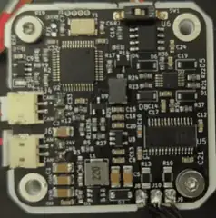 |
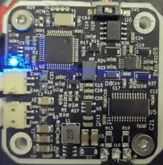 |
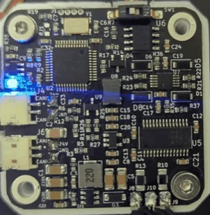 |


Spectral Micro and STEPFOC¶
The Spectral Micro and the STEPFOC stepper driver are sister drivers: similar hardware and similar firmware, each made for its kind of motor. The Spectral Micro drives three-phase brushless motors; STEPFOC drives two-phase stepper motors. They are not the same board and do not run the same firmware, but they are controlled and run practically the same way: the same CAN and UART commands, the same Python library, Motor GUI and bootloader.
What this means in practice:
- The commands are practically the same. The CAN messages and UART commands of the API reference exist on both drivers, with the same IDs, names and layouts; STEPFOC adds a few that only make sense on a stepper (homing against a sensor, open-loop stepping). A program written for one runs on the other.
- The firmware releases go in step. A Spectral Micro release has a STEPFOC counterpart with the same changes; the compatibility table lists the pairs. The numbers differ by one (Spectral Micro 107 is STEPFOC 108).
- Calibration differs. The Spectral Micro measures the motor's resistance and inductance and finds its pole pairs; STEPFOC cannot, so there the three values are entered from the motor's datasheet first.
- The motor terminals differ. U, V and W for the three phases, instead of A+, A−, B+, B− for the two coils of a stepper.
- The grippers differ. The SSG-48 gripper is driven by a Spectral Micro, the MSG gripper by STEPFOC; both use the driver's gripper mode.
The guides under the Guides tab were written with the Spectral Micro; the code in them runs unchanged on STEPFOC.
What you need¶
This page lists what a Spectral Micro setup is made of, what comes with the driver, and what you buy or make yourself.
The driver¶
The Spectral Micro is sold as a single driver or as a starter kit in the Source Robotics shop:
- Spectral Micro BLDC controller
- Spectral Micro starter kit, which adds the adapters, the magnet, the cables and a thermistor listed below
Every driver is end-of-line tested and ships with the current firmware release and the bootloader already installed, so a driver works out of the box with a serial terminal, the Python library or Motor GUI. The firmware can be updated later without a programming adapter; see Firmware.
A brushless motor¶
The Spectral Micro drives three-phase brushless motors with a phase resistance of about 2 to 24 Ω and a current of 2.8 A or less: gimbal motors from the small 2804 class up to the 8108 class, and other brushless motors of similar resistance, such as the NEMA 17-format 42BLS40. The tested motors are known to work. The motor needs a place for the encoder magnet on the axis of its shaft, on the side where the board is mounted.
Low-resistance motors
The calibration routine's default voltages are made for motors of 2 Ω and more. A motor with a much lower
resistance, such as a drone motor, draws a destructive current at those voltages. Do not calibrate one without
lowering the calibration voltages (#Resv, #Openv, #Vp) and the current limit first.
The encoder magnet¶
A diametrically magnetised 6 × 2.5 mm neodymium magnet on the end of the motor shaft, about 1 mm above the encoder chip in the middle of the board: 6 × 2.5 mm diametrical magnet. An axially magnetised magnet, or one that wobbles, makes calibration fail or report bad positions. The 6 × 2.5 mm size is the stock one, not a requirement: another thickness is a way to set the 1 mm gap when a shaft or a bracket leaves the wrong distance. The encoder magnet says how to fit it.
A mounting bracket¶
The board does not bolt to a gimbal motor directly: a bracket holds it behind the motor, with the encoder chip on the shaft's axis and 1 mm from the magnet. The firmware repository has an example bracket to adapt to your motor; see Mounting on the motor. A motor with the NEMA 17 hole pattern, such as the 42BLS40, takes the board on a spacer with its own screws.
Adapters and cables¶
| Part | Needed for | Shop |
|---|---|---|
| USB-to-serial adapter (3.3 V) | the serial terminal: calibration, tuning, any # command |
Serial adapter |
| CANvas USB-to-CAN adapter | CAN control from a PC, the Python library, Motor GUI over CAN | CAN adapter |
| CAN cable and power cable | daisy-chaining several drivers | CAN cable, power cable |
| 100 kΩ NTC thermistor | motor temperature protection (optional but recommended) | Thermistor |
| JTAG programming adapter | only for installing the bootloader on an older board, or for firmware development | Programming adapter |
Cable orientation
The daisy-chain cables for CAN and power are keyed by their orientation, not by their connector. A cable plugged in the wrong way round destroys the driver. Use the cables from the shop or follow Power and the CAN daisy chain exactly when you make your own.
A power supply¶
12 to 29 V DC, 24 V recommended; see Ratings and limits. Calibrate at 24 V: the resistance, inductance and motor constants come out wrong at a lower voltage. A bench supply with a current limit is the safest way to start.
Software¶
- Motor GUI, in the browser, over the serial adapter or the CAN adapter: the usual tool for setup, calibration, tuning, plots and firmware updates; see Motor GUI.
- Or a serial terminal: PuTTY, the PlatformIO monitor in VS Code, or the Arduino serial monitor; see The serial terminal.
- The Python library
Spectral-BLDCfor CAN control from your own programs; see With Python.
Safety¶
The Spectral Micro is a bare circuit board that drives a motor from a supply of up to 29 V. Read this chapter before you connect anything; the few rules here are the ones that destroy a driver, a motor or a finger when they are ignored.
Electrical¶
Supply polarity
Reversing the polarity on DC+ and DC− destroys the driver at once. Check the polarity of every power cable before you plug it in, every time.
Cable orientation on the daisy chain
The CAN and power cables that link one driver to the next are keyed by their orientation, not by their connector: a cable plugged in the wrong way round puts the supply on the wrong pins and destroys the driver. Use the cables from the Source Robotics shop, or make yours exactly as shown in Power and the CAN daisy chain.
UART is 3.3 V
The UART port runs at 3.3 V. A 5 V serial adapter destroys the board. Use a 3.3 V adapter, such as the one from the shop.
Supply voltage
12 to 29 V DC. The driver raises a Vbus error outside 9 to 29.5 V, but the hardware limit is 29 V: do not connect a supply that can rise above it, and allow for the voltage a decelerating motor pushes back into the supply. A bench supply with a current limit is the safest way to start.
Do not disconnect a running motor
Never unplug a motor, or a power cable in the daisy chain, while the driver is powered. The inductive kick of the windings and the arcing at the connector damage the driver stage.
Mechanical¶
Moving parts
A calibrating or running motor turns without warning, in both directions, and a motor in position mode pushes back hard against a hand. Keep fingers, hair and cables away from the shaft and whatever is mounted on it, fix the motor to the bench before the first test, and test without a load on the shaft.
The encoder magnet
The magnet sits about 1 mm above the encoder chip. A magnet that touches the chip, or sits far too close, can damage the microcontroller; a magnet too far away gives a wrong position. Mount it as described in The encoder magnet.
Hot motor and driver
A motor running at its rated current gets hot enough to burn. Set the current limit for your motor (Current limit and loop tuning), use the thermistor, and give the driver airflow when it runs near 2.8 A.
Stopping the motor¶
Send_ESTOPover CAN, or#Idleover UART, stops the motor at once; the E-stop error stays until it is cleared.- Cutting the supply stops the motor as well; the motor then holds nothing, so a vertical axis drops.
- The watchdog (Send_Watchdog) stops the motor by itself when the host stops talking.
Nothing on the driver is a certified safety function. A machine that can hurt someone needs an emergency stop that cuts the motor supply, independent of the driver.
Firmware updates and programming¶
When you connect a programming adapter to the JTAG connector, disconnect the motor supply and the UART adapter first. Updating over the bootloader needs no adapter; see Firmware.
Liability¶
The Spectral Micro is sold as a component for people who build their own machines. Its hardware designs, firmware and this documentation are under development and may contain errors. Whoever builds a machine with it is responsible for its safe design, assembly and operation.
3. Technical data
Technical data¶
The numbers: ratings and limits, the connectors with their pinout, the dimensions, and the motors that have been tested with the driver.
In this chapter¶
Ratings and limits¶
Electrical¶
| Value | |
|---|---|
| Supply voltage | 12 to 29 V DC, 24 V typical; 10 V absolute minimum |
| Vbus error limits (firmware) | below 9 V or above 29.5 V |
| Phase current, continuous | 1.5 A typical |
| Phase current, maximum | 2.8 A, the firmware's limit (#Ilim is clamped to 2800 mA); needs good cooling and short bursts |
| Power, maximum | 80 W |
| Power, idle | 0.3 W |
| PWM frequency | 25 kHz |
| Control loop frequency | 5 kHz |
| Electrical frequency, maximum | 500 Hz |
| Current sensing | inline, on two phases |
| Encoder | 14-bit magnetic, 16384 ticks per revolution, diametrical magnet 1 mm above the chip |
| UART | 3.3 V, 256000 baud by default (1 000 000 tested) |
| CAN | CAN 2.0, 1 Mbit/s, 11-bit identifiers, node IDs 0 to 15, 120 Ω termination by switch |
| Thermistor input | 100 kΩ NTC, 54.9 kΩ pull-down |
| PIN | analog input or general-purpose input/output, 3.3 V |
| Driver stage protection | hardware overcurrent (trips at 3 to 5 A), undervoltage lockout (6.3 to 8 V) and thermal shutdown (150 to 180 °C); shown as a driver error |
Reversing the polarity on DC+ and DC− destroys the board.
Thermal and environmental¶
| Value | |
|---|---|
| Operating temperature of the board | −20 to 130 °C |
| Motor temperature limit (firmware, with the thermistor) | 75 °C by default (#Tlim), −20 °C minimum |
Mechanical¶
| Value | |
|---|---|
| Dimensions | 39 × 39 mm |
| Mass | 8 g |
| Mounting | four holes on the NEMA 17 pattern, 31 mm apart; the encoder chip in the middle of the board |
Firmware limits¶
| Value | |
|---|---|
| Position | signed 24-bit over CAN (±8.4 million ticks, ±512 revolutions), 32-bit internally |
| Speed | signed 24-bit over CAN, encoder ticks per second |
| Current setpoint | signed 16-bit over CAN, mA |
| Motors the calibration defaults are made for | a phase resistance of 2 to 24 Ω |
| Configuration | kept in the EEPROM with #Save / Send_Save_config |
The defaults of every setting are listed in the Defaults reference.
Connectors and pinout¶

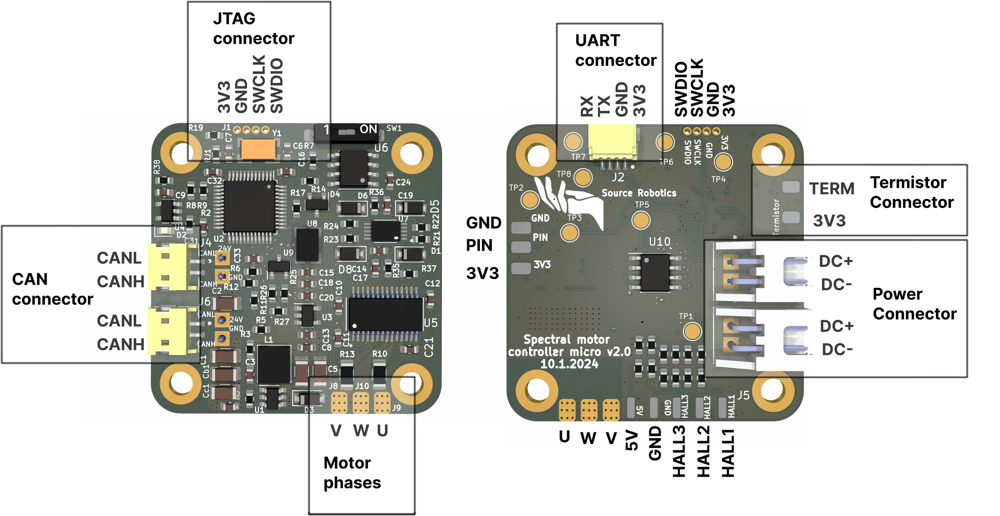
| Connector | Pins | Type | Cable |
|---|---|---|---|
| Motor | U, V, W | solder pads, three per phase | the motor's own leads, see Wiring the motor |
| Power, two of them | DC+, DC− | JST XH, 2 pins | Power cable; the second connector feeds the next driver |
| CAN, two of them | CANL, CANH | JST ZH, 2 pins | CAN cable; the second connector feeds the next driver |
| UART | 3V3, GND, TX, RX | JST SH, 4 pins | UART cable |
| Thermistor | TERM, 3V3 | solder pads | the 100 kΩ NTC from the shop or any 100 kΩ NTC, see Thermistor |
| JTAG | 3V3, GND, SWCLK, SWDIO | 1.27 mm pads | Programming adapter, pressed onto the pads |
| PIN | GND, PIN, 3V3 | solder pads | your own signal: an analog input or a digital input/output, 3.3 V |
| HALL | 5V, GND, HALL1, HALL2, HALL3 | solder pads | hall sensors: not implemented in the firmware, see the note below |

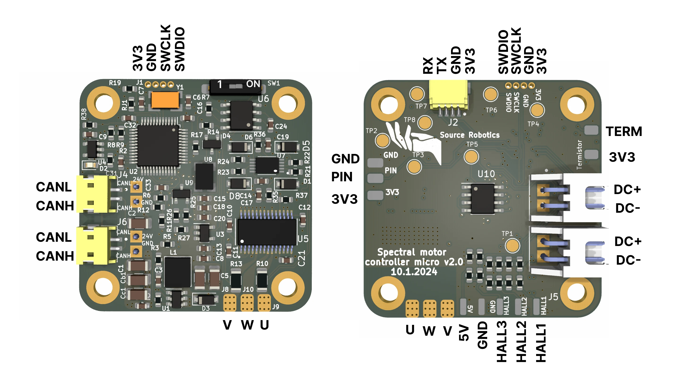
Hall sensors are not implemented
The HALL header and the twelve resistor pads above it are on the board for hall-sensor commutation, but the Spectral firmware does not implement it: the magnetic encoder is the only position source. Leave the header unpopulated.
Polarity and orientation
DC+ to the positive supply, DC− to the negative; a cable the wrong way round destroys the driver. The daisy-chain cables have an orientation too: see Power and the CAN daisy chain.
Note
- UART is TX to RX and RX to TX between the driver and the adapter.
- The UART port and the PIN header are 3.3 V. 5 V on either destroys the board.
- The thermistor pin has a 54.9 kΩ pull-down; the firmware's temperature table is for a 100 kΩ NTC.
- The CAN termination switch is next to the CAN connectors; ON connects the 120 Ω resistor.
- The encoder chip sits on the bottom of the board, in the middle: that side faces the magnet.
Dimensions and CAD¶
The board is 39 × 39 mm with four mounting holes on the NEMA 17 pattern (31 mm apart). The encoder chip is exactly in the middle of the board, so a bracket that centres the board on the motor shaft puts the chip on the shaft's axis.
Drag to turn the board, scroll to zoom. The model is the board's STEP file from the repository, the PCB and everything mounted on it.

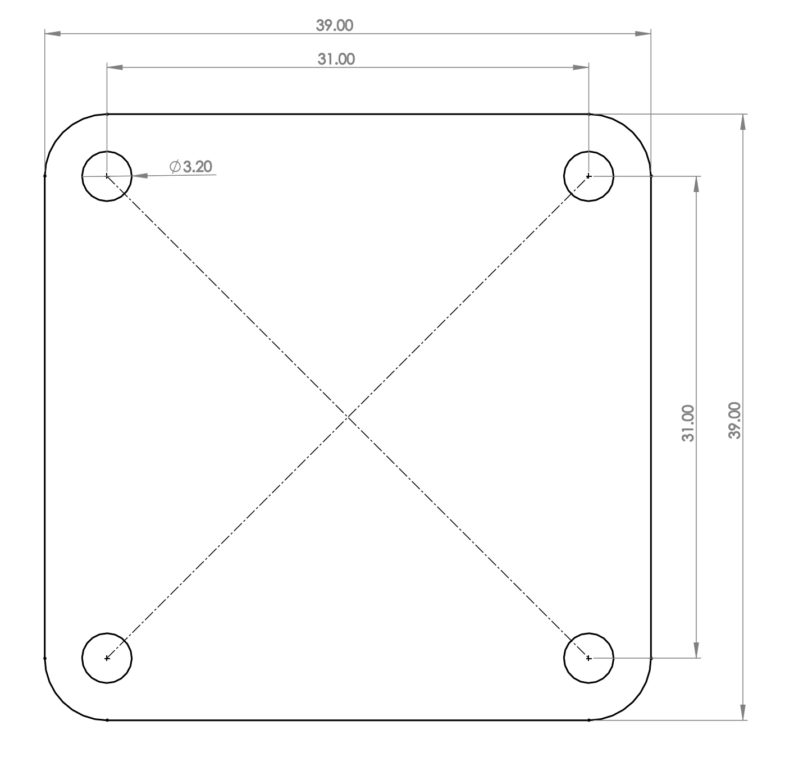

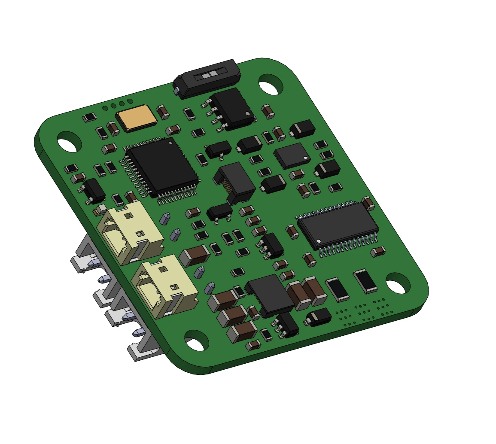
The STEP files of the board and of an example mounting bracket are in the firmware repository, in
STEP files:
Spectral_micro_STEP.STEP is the board, Spectral_micro_bracket.STEP the bracket to adapt to your motor
(Mounting on the motor).
CAD and downloads lists everything that can be downloaded.
Tested motors¶
The Spectral Micro drives three-phase brushless motors with a phase resistance of about 2 to 24 Ω: the calibration routine's default voltages are made for that range. The motors below have been run on it. Calibration measures each motor's resistance, inductance and pole pairs, so nothing has to be looked up before the first run.
| Motor | Kind | Where | |
|---|---|---|---|
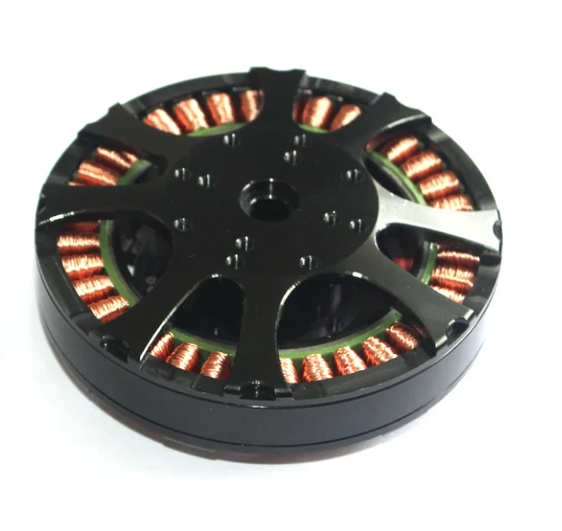 |
BGM8108 | gimbal motor, 8108 class | AliExpress |
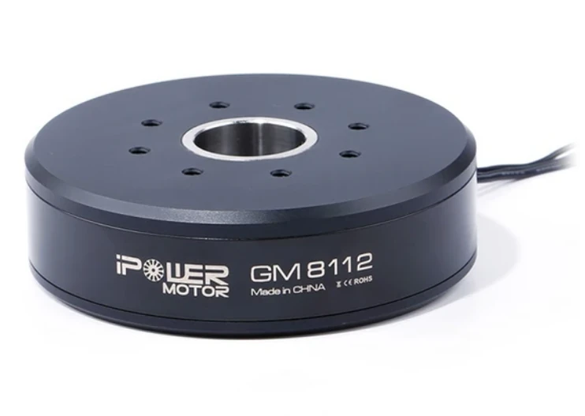 |
GM8112 | gimbal motor, 8112 class | AliExpress |
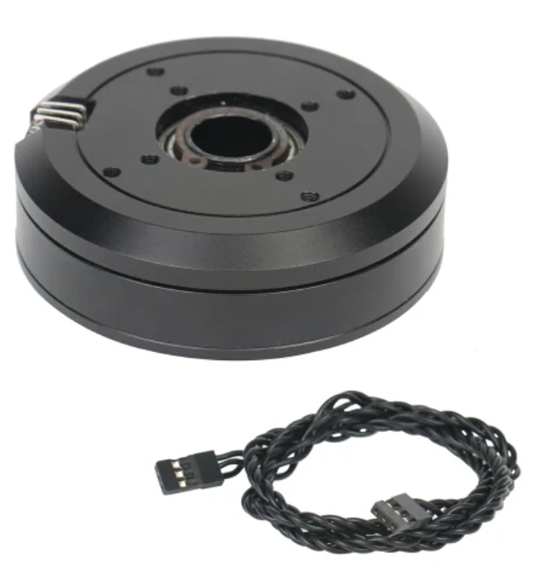 |
GM7008H | gimbal motor, 7008 class | AliExpress |
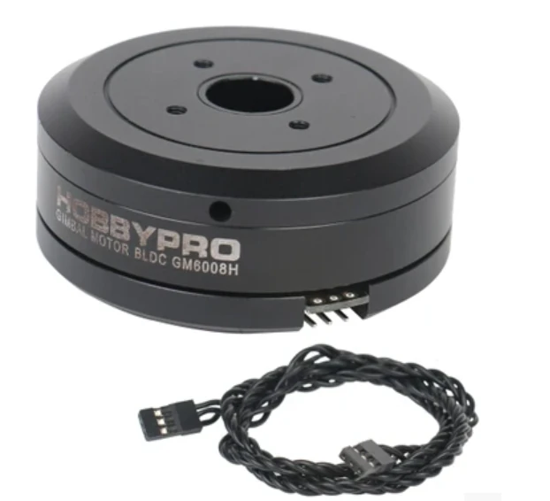 |
GM6008H | gimbal motor, 6008 class | AliExpress |
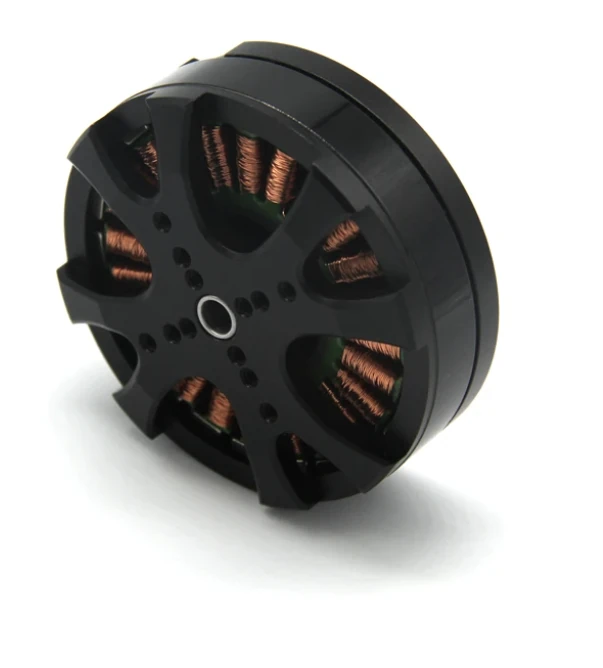 |
GBM5208 | gimbal motor, 5208 class | AliExpress |
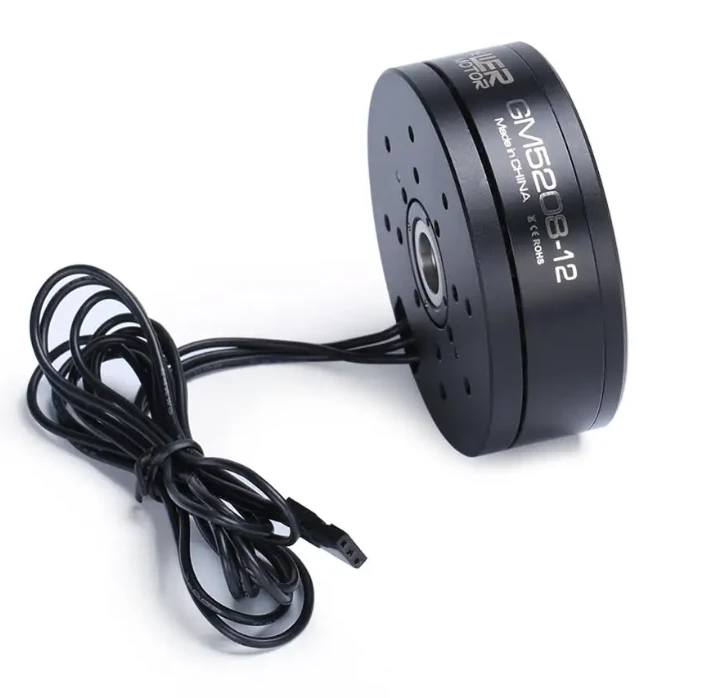 |
GM5208 | gimbal motor, 5208 class | AliExpress |
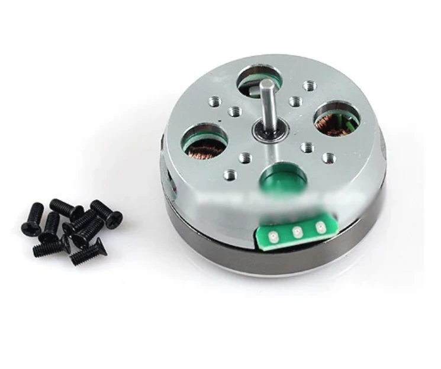 |
GBM5010 | gimbal motor, 5010 class | AliExpress |
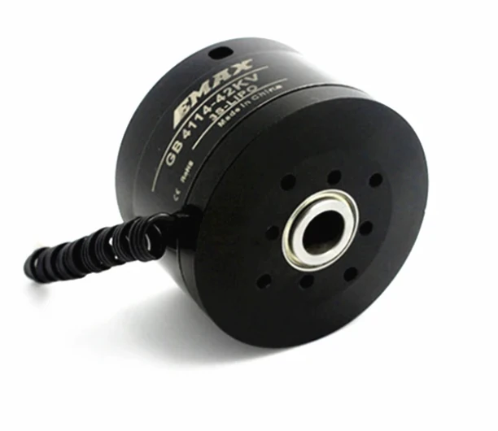 |
GB4114 | gimbal motor, 4114 class | AliExpress |
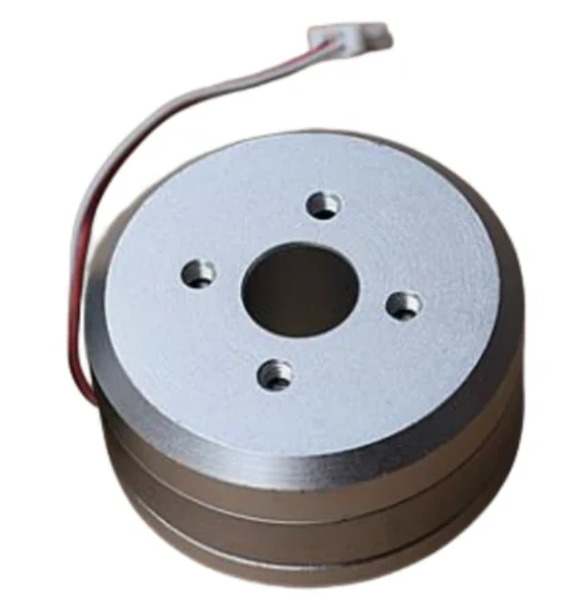 |
2804 | gimbal motor, 2804 class | AliExpress |
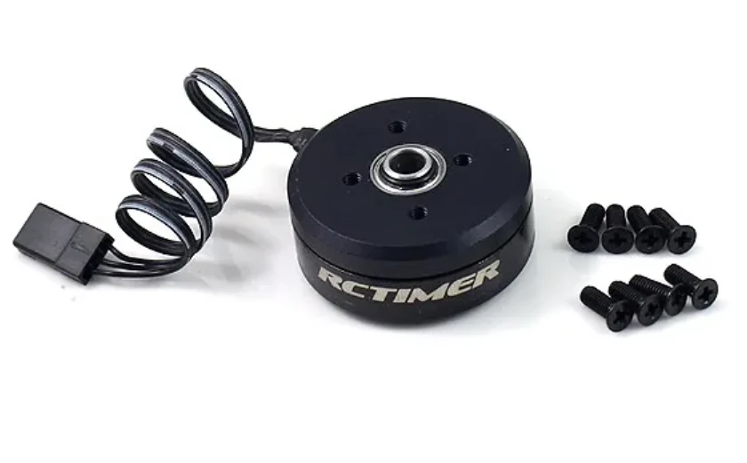 |
2804 (RCTimer) | gimbal motor, 2804 class | AliExpress |
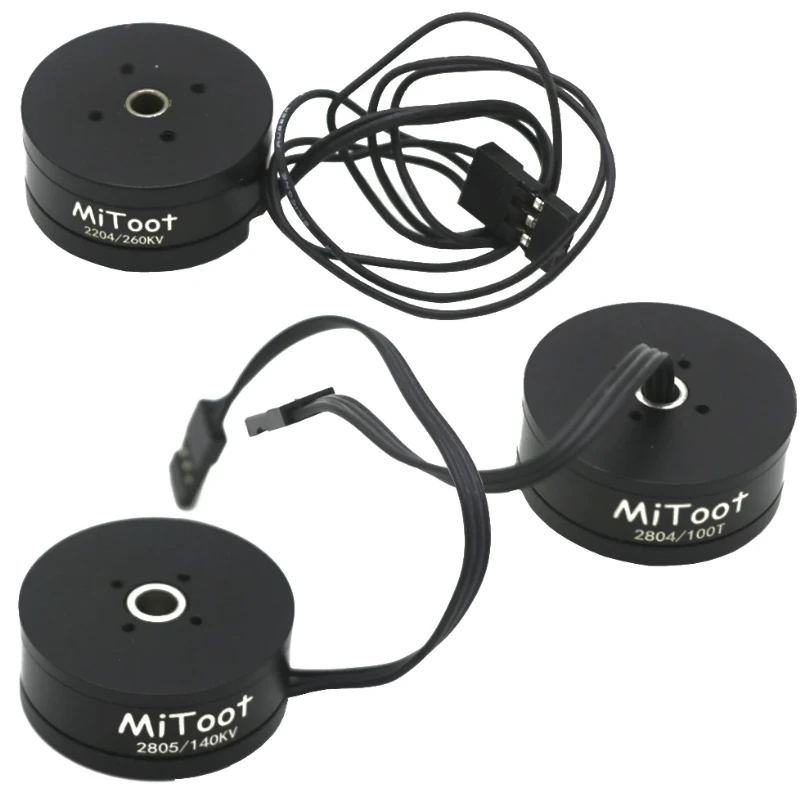 |
2804 100KV | gimbal motor, 2804 class, 100 KV | AliExpress |
 |
42BLS40-24-01 | NEMA 17-format brushless motor, 24 V, 26 W, 1.8 A, 219 g | Stepperonline |


Before the first test, set the current limit for the motor with #Ilim: the firmware's default of 1000 mA suits
the gimbal motors above; a motor rated for more can go up to the driver's 2800 mA. See
Current limit and loop tuning.
Choosing a motor
A lower phase resistance and inductance give a higher speed at a given supply voltage; the velocity constant
KV that calibration finds tells how fast the motor can turn: roughly 0.8 × Vbus × KV revolutions per minute.
A high pole-pair count (the large gimbal motors have 11 to 14) gives smooth torque at low speed and limits the
top speed through the driver's maximum electrical frequency. Motors with visibly uneven windings, a resistance
that differs between the phases or an uneven back-EMF calibrate badly and run rough.
Drone motors
Motors with a phase resistance well under 1 Ω draw a destructive current at the calibration routine's default voltages. The Spectral Micro is not made for them.
4. Mounting and wiring
Mounting and wiring¶
How the driver goes onto the motor and what gets connected to it: the encoder magnet on the shaft, the board on a bracket behind the motor, the three phases to the motor terminals, the supply and the CAN bus, and the thermistor. Do the pages in order; the magnet first, because it is the one thing you cannot check from the outside later.
In this chapter¶
When all of it is done, continue with First setup.
The encoder magnet¶
The encoder reads a diametrically magnetised magnet on the end of the motor shaft. The magnet must sit centred on the shaft's axis, parallel to the board, about 1 mm above the encoder chip, and it must not move. Every calibration problem that is not a wiring problem comes from this magnet.

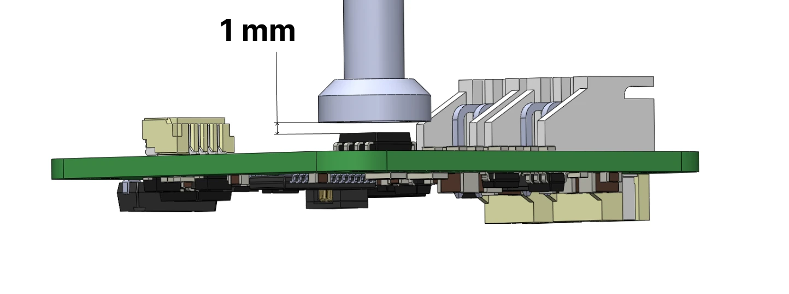
The magnet¶
A neodymium disc, diametrically magnetised (north and south across the diameter, not through the thickness). The shop's 6 × 2.5 mm diametrical magnet is the stock size. An axially magnetised magnet looks the same and does not work: the magnet test may even pass, and the position is wrong.
The size is not fixed
6 × 2.5 mm is the stock size, not a requirement. Any diametrically magnetised disc of about 6 mm diameter works, and the thickness is a way to set the gap: a thicker magnet brings its face closer to the encoder, a thinner one farther, so with a shaft or a bracket that leaves the wrong distance you can pick the thickness that gives 1 mm instead of changing the bracket. What matters is the 1 mm from the magnet's face to the chip, the magnet centred on the shaft, and the diametrical magnetisation.
Fitting it¶
- The magnet goes on the end of the shaft that faces the board. On most gimbal motors the shaft ends at the bottom of the motor, flush with the housing or a little proud of it, and the board is mounted on that side (Mounting on the motor). On a motor whose shaft ends inside the housing, a short holder pressed into the shaft's end carries the magnet out to where the board can see it.
- Press the magnet on, centred on the shaft's axis. A magnet that sits off-centre wobbles its field as the shaft turns and gives a position error that repeats every revolution.
- Fix it with a drop of glue. A magnet that can turn on the shaft is the classic cause of a calibration that reports success and a motor that then runs badly: the magnet slipped between calibration and use.
- Check the height after the board is mounted: 1 mm, the magnet not touching the chip. A magnet that touches the chip can destroy the microcontroller; a magnet 2 mm away or more gives a weak signal.
Checking it¶
With the driver powered and the serial terminal open, #Magnet answers Magnet Good when the chip sees enough
field, Magnet Bad when it does not. The calibration routine runs the same test first.
What the magnet test checks
Only that a magnet is close enough to the encoder. It passes with a magnet that is not glued, sits off-centre or can slip on the shaft, and fails only when there is no magnet or it is too far away. The 1 mm gap, the centring and the glue are yours to check.
Mounting on the motor¶
The board sits behind the motor, with the encoder chip, in the middle of the board, on the axis of the shaft and 1 mm from the magnet. The board's four holes are on the NEMA 17 pattern, 31 mm apart.
Gimbal motors¶
A gimbal motor has no standard mounting for a board; a bracket holds the board at the right distance. The
firmware repository has an example to adapt to your motor, Spectral_micro_bracket.STEP in
STEP files: change
its hole pattern to the motor's bottom holes and its height so that the magnet ends up 1 mm from the chip.

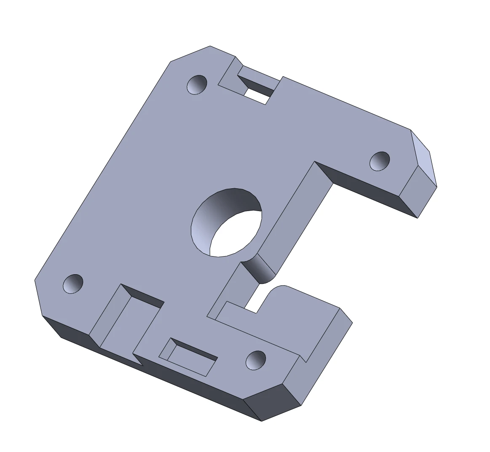
- Bolt the bracket to the bottom of the motor. The magnet on the shaft's end sits in the bracket's centre hole.
- Bolt the board to the bracket with M3 screws, with the encoder chip (the bottom of the board, see Connectors and pinout) towards the magnet. Tighten the screws evenly; the board must be parallel to the magnet's face.
- Check the gap: about 1 mm, the magnet not touching the chip. If it is wrong, change the bracket's height or the magnet's thickness (The encoder magnet).
Motors with the NEMA 17 pattern¶
A brushless motor in the NEMA 17 format, such as the 42BLS40 in the tested motors, takes the board directly, with the motor's own rear screws: remove the four screws, put on a spacer that sets the magnet height, the board on the spacer with the chip towards the magnet, and longer M3 screws in. Check the gap.
The board is bare
Nothing on the board may touch the motor's housing or a metal bracket. Keep the bracket clear of the components on both sides of the board (the connectors on the bottom need room), and keep metal swarf and screws away from the board while you work.
Wiring the motor¶
A three-phase brushless motor has three wires. They go to the terminals U, V and W on the board (Figure 2 in Connectors and pinout), in any order: calibration finds the order of the phases. Firmware 105 and newer compensates it in software; firmware 101 asks you to swap two wires when it is reversed.
Soldering¶
- Cut the leads to a comfortable length: long enough to reach the pads with the board mounted, short enough not to get into the rotor.
- Tin the leads and solder each to one group of pads, U, V or W. The three pads of a group are one terminal.
- Make sure no strand bridges two groups and that nothing touches the rotor or the housing.
A motor that comes with a connector keeps it: solder a short lead with the mating connector to each pad group.
Warning
Never connect or disconnect the motor while the driver is powered.
Phase order and direction¶
Calibration spins the motor in open loop and watches the encoder, then checks that a current command moves the rotor the expected way. With firmware 105 and newer, the order of the phases is detected and compensated, so the motor calibrates identically with any wiring, and positive commands turn the motor the same way whatever the wiring: counter-clockwise seen from the encoder side of the board, see Control modes. To turn the other way, use negative setpoints.
If the motor does not respond to the commutation check, calibration says so (Commutation/alignment check
failed!). That means a phase is not connected, the current limit is 0 or the magnet slipped, not that the wires
are in the wrong order; see Calibration.
Power and the CAN daisy chain¶
Each driver has two power connectors (JST XH) and two CAN connectors (JST ZH). The second connector of each pair feeds the next driver, so a chain of drivers hangs on one supply cable and one CAN cable.

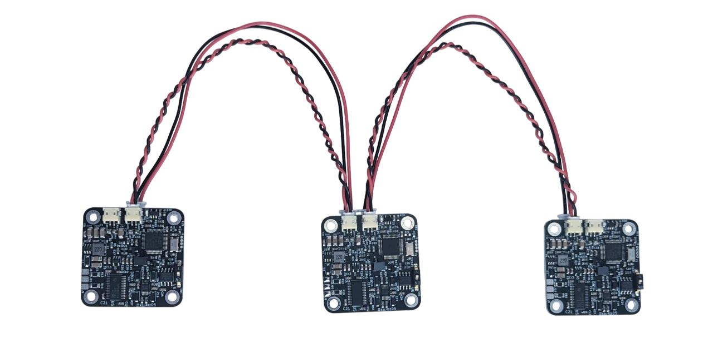
Power¶
- 12 to 29 V DC, 24 V recommended. DC+ to the positive supply, DC− to the negative; reversed polarity destroys the driver.
- The power connectors are rated for 4 A. A chain of drivers shares that: with motors at 1.5 A each, plan for at most two or three drivers per chain that draw their full current at the same time (three or four with 10 Ω gimbal motors), and feed a longer chain from both ends or from several supplies.
- A motor that decelerates pushes energy back into the supply. A lab supply or a battery absorbs it; a supply that cannot (some switch-mode supplies) sees its voltage rise, and the driver raises a Vbus error above 29.5 V.
The cable orientation¶
Danger
The daisy-chain cables are keyed by their orientation, not by the connector: the same 2-pin cable fits both ways, and the wrong way puts DC+ on DC−. Every cable must run as in the picture below, the same way at both ends. A wrong cable destroys the driver at the moment it is powered.

The cables from the shop are made this way: CAN cable, power cable, and all of them under connectors and cables.
CAN¶
- CAN 2.0, 1 Mbit/s, 11-bit identifiers. Up to 14 drivers on one bus, each with its own node ID, 0 to 13 (0 by default;
set it with
#CANIDor Send_CAN_ID and save). The firmware accepts 14 and 15 too, but the bootloader reserves them: a driver on one of those IDs cannot be updated over CAN. - Twisted-pair wire; keep the bus short at 1 Mbit/s (a few metres at most).
- Termination: the first and the last node on the bus need a 120 Ω resistor between CAN H and CAN L. The switch next to the CAN connectors turns the driver's resistor on (ON). Drivers in the middle stay off. A bus with the right termination measures about 60 Ω between CAN H and CAN L with everything unpowered.
- A PC joins the bus with the CANvas adapter, which has its own termination.

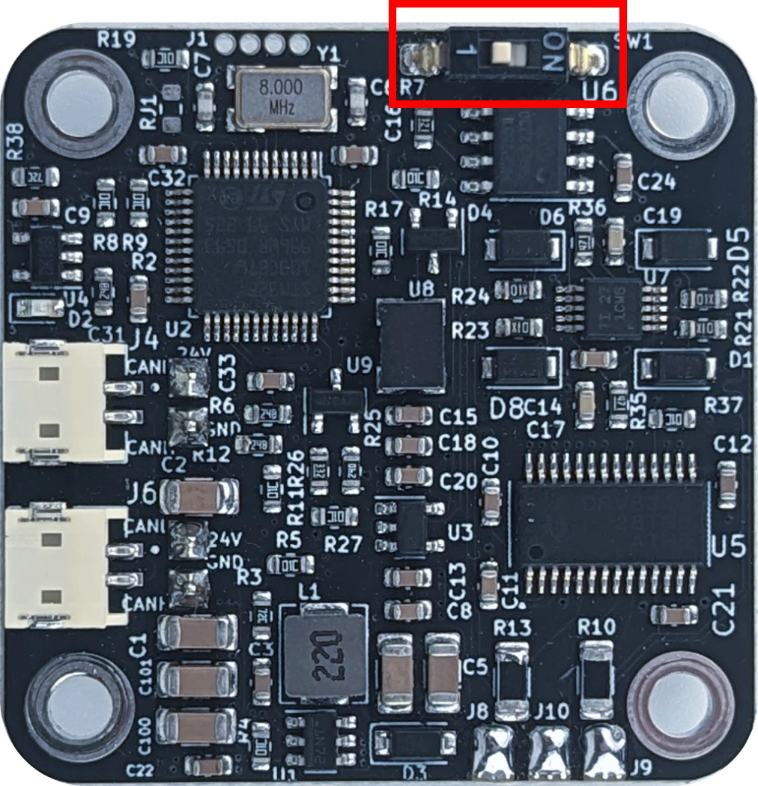
Thermistor¶
A 100 kΩ NTC thermistor in the motor lets the driver stop before the motor overheats. It is optional, and off by default; use it on any motor that runs near its current limit for long, and on a motor that holds a load at standstill, which heats one winding without any movement to show it.
Without it, nothing protects the motor from overheating
The driver limits the current, not the temperature. A motor that runs continuously, holds a load for long, or is set up badly (a current limit above its rating, loops that oscillate, a wrong resistance or inductance) can overheat and burn its windings without any warning. With the thermistor fitted and enabled, the driver stops first. The starter kit includes one.

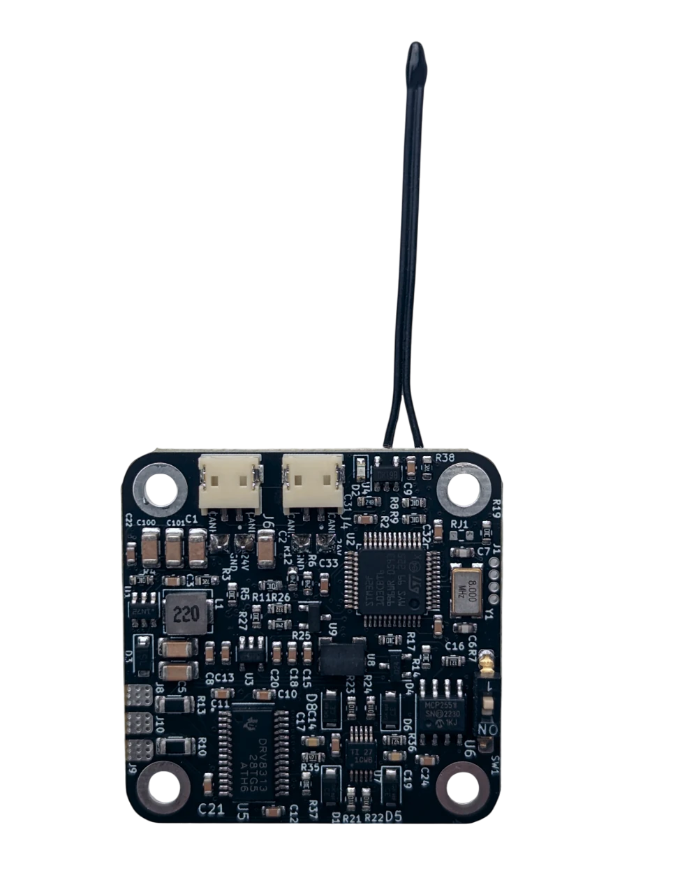
Fitting it¶
Solder the thermistor's leads to the two thermistor pads, TERM and 3V3 (Connectors and pinout). Put its bead inside the motor's windings, where the heat is: on a gimbal motor the windings are open at the bottom and can be reached through one of the mounting holes or past the edge of the stator. Thermal cement holds the bead in place and conducts the heat; keep the leads clear of the rotor.


Enabling it¶
#Temp then prints the temperature; with the thermistor disabled it prints Temp Off. Above the limit the driver
raises a temperature error and stops; it clears with #Clear once the motor has cooled. 75 °C is the default
limit and a safe one for the enamel of most small motors; do not go higher unless the motor is rated for it.
Over CAN, Send_Respond_Temperature returns the temperature, and the temperature error is one of the bits of Send_Respond_State_of_Errors.
5. First setup
First setup¶
From a mounted and wired driver to a calibrated, tuned motor. Motor GUI in the browser is the usual tool for it; every step also gives the terminal command, for a terminal or for the console in Motor GUI.
- Motor GUI: the browser, the serial adapter, opening the port, what is on the screen.
- The serial terminal: the alternative — PuTTY, the PlatformIO monitor or the Arduino monitor,
and the
#commands. - Calibration: the factory defaults, then the run that measures the motor and finds its pole pairs, phase order and constants.
- Current limit and loop tuning: the current limit for the motor, and the loop gains if the defaults do not suit it.
- Saving the configuration: nothing survives a power cycle until it is saved.
A driver that has been through these pages is ready for Operation. The Quick start is the same path on one page.
Motor GUI¶
Motor GUI is the usual way to set up, test and tune a driver: a tool in the browser that connects to one driver over the serial adapter or to a bus of drivers over the CANvas adapter, shows the state, moves the motor, runs the calibration, tunes the loops with live plots, records telemetry and updates the firmware. Nothing is installed. Everything it does, the driver also does from a terminal or from Python — the GUI reads and writes the same settings — so every procedure in this manual shows the GUI first and the terminal command beside it.
The browser¶
Motor GUI reaches the hardware through the browser's serial port access (Web Serial), which Chromium-based browsers have: Chrome, Edge, Brave, Opera. Firefox and Safari cannot open serial ports.
Two ways to connect¶
| Adapter | Use it for | |
|---|---|---|
| One driver over serial | the 3.3 V USB-to-serial adapter on the driver's UART connector, 256000 baud | the first setup and calibration (calibration runs over UART only), tuning on the bench |
| A bus over CAN | the CANvas adapter; it appears as a serial port and speaks slcan | every driver on the bus by its node ID: testing a machine, updating firmware on all joints |
Opening the port¶
- Plug in the adapter and the motor supply. The adapter alone powers the driver's logic, enough to open the port and read the settings, but the driver reports a Vbus error and will not calibrate or move until the supply is on.
- Open motorgui.com, choose the connection kind, and Connect. The browser asks which port; pick the adapter's.
- The driver's identity appears: hardware version, firmware version, serial number, batch date, whether it is
calibrated and activated, and the active errors — what
#Infoprints in a terminal.
If the port is not offered, the browser is not Chromium-based, or another program holds the port (a terminal left open, PlatformIO's monitor). If the port opens and nothing appears: the driver is unpowered, or TX and RX are crossed on an adapter that is not the Source Robotics one.
What is on the screen¶
- State: the identity above, the control mode the driver is in, the errors, and Clear errors.
- Jog: Jog position, Jog velocity and Jog current move the motor in the matching control mode; Send setpoint sends a value in the current mode. Live stream while dragging follows a slider as you move it.
- Plots of position, speed and current, panning and zooming, with the value under the pointer.
- Settings: the motor parameters (pole pairs, resistance, inductance), the limits (current, velocity, voltage), the loop gains with Apply gains and Apply preset, the CAN node ID, the watchdog, the thermistor. The GUI marks Unsaved changes until you Save to the driver's EEPROM; Default restores the factory values.
- Calibration: starts
#Caland shows the driver's log step by step; afterwards the resistance, inductance and pole pairs it measured, the phase order and direction, Kt, KV and the flux linkage. - Telemetry: the stream from the driver, and recordings of it for a test or a bug report.
- Firmware update: the releases from GitHub, flashed through the bootloader; Scan bootloaders on a bus.
- Gripper: the gripper controls, for a driver in gripper mode.
- Console: type any
#command by hand; the answer appears below it. - Wiring diagrams and Keyboard shortcuts under help.
Screen guide¶

1. Transport: choose UART for the serial adapter. 2. Baud: 256000 for a stock driver. 3. Connect: choose the adapter in the browser's port picker.

1. Connection and node: confirm the intended driver. 2. State: calibration, activation and faults. 3. Command mode: setpoints and jog controls. 4. Live telemetry: measured position, speed and current. This screenshot uses Mock CAN (demo), not physical hardware.
Check: after connecting real hardware, the state and identity belong to your driver. If they do not appear, check the transport, selected port, supply and TX/RX wiring before trying to move.
Try it without hardware¶
Open Motor GUI, choose Mock CAN (demo), and press Connect. The motor and gripper panels run in the browser without a port picker. Motor calibration (#Cal) still requires a real UART connection; the CAN demo does not perform it.
What next¶
Calibration is the first thing to do with a connected driver; Working in Motor GUI covers everyday use: moving the motor, the plots, recordings, several motors on a bus.
The serial terminal¶
Motor GUI is the usual way to work with the driver; a plain serial terminal is the alternative, and it is what
the console inside Motor GUI is. Everything in this manual that is done in the GUI is also one # command, and
the terminal shows the driver's answers exactly as it prints them, which is useful when something does not work.
The driver talks on its UART connector at 256000 baud, 8N1, 3.3 V. Any terminal that sends a line ending in CR+LF works.

Connecting¶
- Plug the USB-to-serial adapter into the UART connector with the UART cable. With another adapter: 3.3 V only, and cross TX and RX: the driver's TX to the adapter's RX, the driver's RX to the adapter's TX.
- Connect the motor supply. The adapter's 3.3 V powers the driver's logic, so the driver answers over UART with only the adapter plugged in, but it reports a Vbus error and refuses calibration and every motion command until the 12 to 29 V supply is on.
- Find the adapter's port:
COM…on Windows,/dev/ttyUSB…or/dev/ttyACM…on Linux and macOS.
Danger
5 V on the UART pins destroys the board.
A terminal¶
PuTTY needs to send CR+LF when you press Enter, which the stock build cannot. Use the modified PuTTY: under Terminal → Keyboard select the CR LF option, then open the serial port at 256000.
| Keyboard setting | Session |
|---|---|
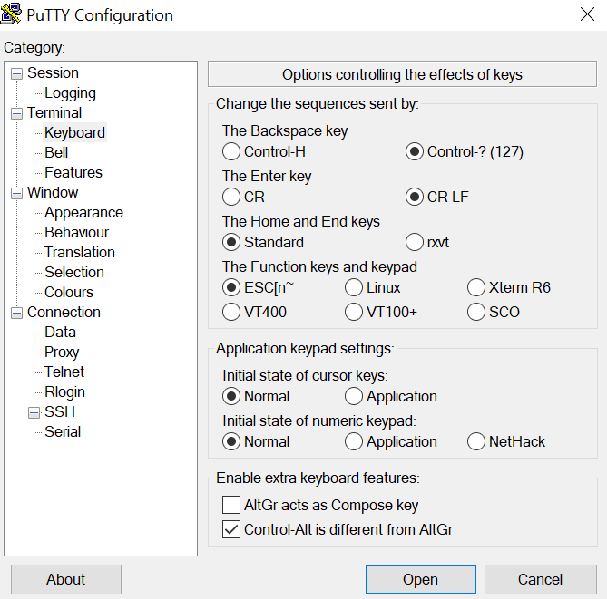 |
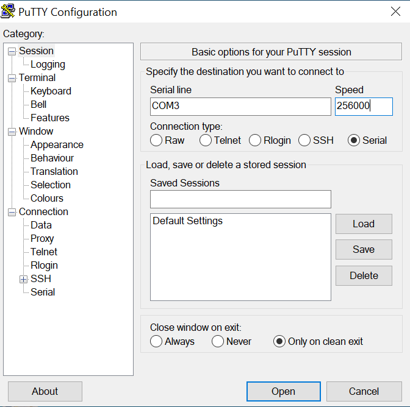 |


With the firmware project
open in VS Code with the PlatformIO extension, the serial monitor (the plug icon in the status bar) uses the
speed and the send_on_enter filter from platformio.ini, so a line goes out with CR+LF when you press
Enter.
| platformio.ini | The monitor |
|---|---|
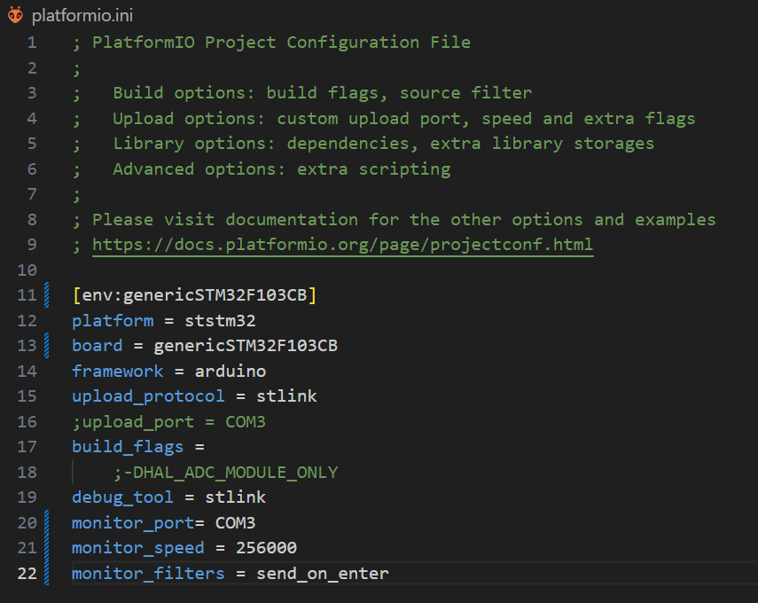 |
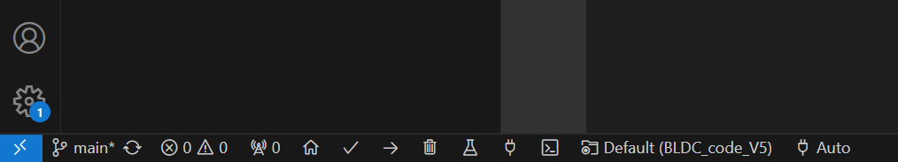 |


Select the adapter's port under Tools, any board (the monitor does not care), open the serial monitor, set 256000 baud and Both NL & CR as the line ending.

The first commands¶
prints the driver's identity: the hardware and firmware version, the serial number, the motor parameters and the
calibration state. #Help (firmware 106 and newer) prints a short command reference, #Error the active errors.
Every command starts with #, and a Set/Get command takes one number after a space: #P 16384 moves to position
16384; #P alone prints the position. Names are case-sensitive. The whole set is in the
UART commands reference, and Over UART explains the
protocol.
Calibration¶
Calibration teaches the driver its motor: it checks the magnet and the supply, measures the motor's phase resistance and inductance and computes the current loop gains from them, spins the motor in open loop to find the pole pairs and the direction, checks the order of the phases and aligns the encoder to the rotor field, and measures the motor constants Kt, KV and the flux linkage. Nothing about the motor has to be entered first. It runs once per motor; the result is kept by saving.
The motor turns
Calibration spins the motor in both directions, fast at times. Fix the motor to the bench and take everything off the shaft.
Supply voltage
Calibrate at 24 V. At a lower voltage the resistance, the inductance, KV and Kt come out wrong.
The settings¶
The routine uses six settings, which it prints when it starts. The defaults suit motors with a phase resistance of 2 to 24 Ω; change them only for a motor outside that range.
| Setting | Default | Command | What it does |
|---|---|---|---|
| Current loop bandwidth | 500 Hz | #Cbw |
the bandwidth the current loop gains are computed for; too high makes the motor vibrate and whine |
| Resistance voltage | 1000 mV | #Resv |
the voltage the resistance measurement starts at; it rises until the power reaches the limit below |
| Max power dissipation | 12 W | #Calpwr |
the power the resistance and inductance measurements may put into the motor |
| Open loop voltage | 5000 mV | #Openv |
the voltage of the open-loop spin that finds the pole pairs |
| Open loop speed | 20 rad/s | #Opens |
the electrical speed of that spin |
| Phase search voltage | 5000 mV | #Vp |
the voltage of the spin that checks the phase order |
Low-resistance motors
These voltages are made for motors of 2 Ω and more. On a motor with a much lower resistance, such as a drone motor, they drive a destructive current. The Spectral Micro is not made for such motors; if you must try one, lower the three voltages and the current limit first.
1. Restore the defaults¶
The EEPROM of a new driver, or of one that ran another motor, can hold values that do not fit: another motor's
parameters, or junk that shows as -1 in #Info. Calibration starts from what is there, so start from the factory
values.
This also resets the serial number, hardware version and batch date the driver reports; note what #Info printed
if you need them. Saving the configuration says what else it does.
2. Run it¶
The LED flashes every 0.5 s while the routine runs, and the driver prints each step as it goes. The numbers below are those of one tested motor; yours will differ:
----------------
Calibration mode
-----Settings-----
Current loop bandwidth: 500.00Hz
Resistance voltage: 1000mV
Max Power dissipation: 12.00W
Open loop voltage: 5000mV
Open loop Speed: 20.00Rad/s
Phase search voltage: 5000mV
----------------
Magnet test: Passed
Vbus test: Passed
Resistance = 7.026575Ohm
Inductance = 0.001492H
Kp_iq = ...
Ki_iq = ...
Pole pair = 11
Dir = 1
Phase order = 2
Phase order is good!
KV is: ...
Kt is: ...
Flux linkage is: ...
----------------
Calibration success!
Save config with #Save
Going to idle!
----------------
What the steps are:
| Step | What happens | Fails with |
|---|---|---|
| Magnet test | the encoder sees enough field: a magnet is there and close enough. The test says nothing about centring, the gap or the glue | Magnet test: Failed: magnet missing, too far, or axially magnetised |
| Vbus test | the supply is within limits | Vbus test: Failed |
| Resistance | a rising voltage is put on the windings and the current measured; the motor clicks. The resistance follows from the two | Resistance test: Failed: no current flows, a phase is not connected, or the motor is far outside the 2 to 24 Ω range |
| Inductance | a voltage step and the rate at which the current rises give the inductance. Kp_iq and Ki_iq are computed from R, L and the bandwidth | Inductance test: Failed |
| Open loop | the stator field is turned at the open-loop speed and the encoder watched: the pole pairs are the ratio of electrical to mechanical turns, and the direction the rotor turned is remembered as Dir |
Open loop: Failed: the encoder saw no rotation |
| Phase order | a current command must move the rotor the expected way, and the encoder's zero is aligned to the rotor field (the angle offset, #Offset). A motor that does not respond gets a second try at another angle |
Commutation/alignment check failed!, Motor did not respond as expected to a current command... and a line Spin-confirm delta: … ticks (need > …), Vbus: … mV that says how far the motor turned and at what voltage |
| Kt, KV, flux linkage | the motor spins fast for a moment and the constants are computed from the back-EMF | — |
The measured values are estimates
The resistance, the inductance and the motor constants differ a little from one run to the next, and KV, and with it Kt and the flux linkage, can be off by a factor of two or three on cheap motors with uneven windings. For the loops this does not matter; for a torque estimate in newton-metres, measure Kt yourself.
3. Save¶
Without it the calibration is gone at the next power cycle. The driver goes to idle and the LED shows normal
operation; #Info shows Calibrated, the pole pairs, the resistance and inductance, Kt and KV, the phase order
and the commutation direction.
When to calibrate again¶
- After changing the motor, the magnet or the wiring.
- After restoring the defaults.
- After a firmware update that clears the calibration (a release note says so when it does).
A calibration that reports success but a motor that runs badly afterwards usually means the magnet moved on the shaft between calibration and use: fix the magnet and calibrate again.
Troubleshooting¶
| Message | Cause |
|---|---|
Magnet test: Failed |
no magnet, magnet too far (more than about 1.5 mm), or an axially magnetised magnet |
Vbus test: Failed |
supply off, too low, or the cable the wrong way round (if the driver survived it) |
Resistance test: Failed, Inductance test: Failed |
a phase not connected or shorted; a motor far outside the 2 to 24 Ω range |
| the motor wobbles left and right and the routine fails | one phase is not connected |
Open loop: Failed |
the motor did not turn: a phase open, the open-loop voltage (#Openv) too low for a high-resistance motor, the supply's current limit set too low |
Commutation/alignment check failed! |
the motor did not respond to the current command: a phase open, a current limit at 0, a magnet that slips. Run #Cal again. Firmware 101 printed Phase order is wrong! Switch motor phases and try again! here; since 105 the wiring is compensated and swapping wires does not help |
| the routine stops in a step and prints nothing more | reset the driver (#Reset) and try again |
| success, but the LED stays on and no error is reported | #Info shows -1 somewhere: the EEPROM is not in the firmware's layout; restore the defaults and calibrate again |
| the resistance, KV or Kt look wrong | the supply was not 24 V, or the motor is one of the uneven ones; see the note above |
Calibration runs over the serial connection only: a terminal, or Motor GUI over the serial adapter, not over CAN.
Current limit and loop tuning¶
Calibration leaves the driver with current loop gains computed for your motor and with conservative velocity and position gains. Two things remain: the current limit, which you must set for your motor, and the loop gains, which you tune if the defaults do not suit it. Motor GUI shows the motor's response on its plots while you change a gain, which is what makes tuning quick.
The current limit¶
Set the current limit to the rated phase current of your motor in mA. The firmware's default of 1000 mA suits the gimbal motors in Tested motors; a motor rated for more can go up to the driver's 2800 mA. The firmware clamps the limit to the driver's 2800 mA and does not trip on phase current by itself; the MOSFET driver's hardware protection only catches a hard fault. A limit above the motor's rating overheats the motor.
Crunching and whining sounds at speed usually mean the current limit, or the current loop gains, are too high.
The loops¶

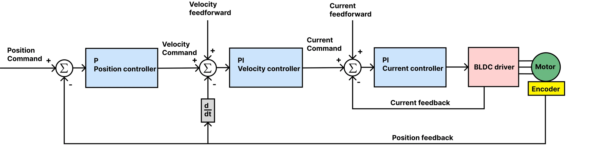
Tune from the inside out: the current loop first, then velocity, then position. Before you start:
- The motor must be calibrated and without active errors; the driver refuses the control modes otherwise.
- Fix the motor to the bench, nothing on the shaft. A loop that oscillates can shake a loose motor off the table.
- If the defaults oscillate, lower all gains until the motor is quiet, then raise them one at a time in small steps.
The gains are in the settings: change one, Apply gains, command a move with the jog controls and read the response on the plots. Apply preset loads a starting set for a kind of motor. Save when you are done.
Each gain is a command: #Kpiq 0.5, #Kpv 0.02, …, then #Save. Command a move with #Iq, #V or #P
and judge the response by ear and by #Cyc 20, which streams position, speed and current.
The current loop¶
The current loop is a PI controller that turns a current request into a voltage. Calibration sets its gains
Kpiq and Kiiq from the motor's resistance and inductance and the bandwidth (#Cbw, 500 Hz by default; set it
before calibrating). These computed gains suit most gimbal motors; tune by hand if the motor hums or responds slowly:
- Raise
Kpiquntil the motor starts to hum or oscillate, then back off 20 %. - Raise
Kiiqthe same way, then back off a little. - Test with a current setpoint of a few hundred mA (Jog current, or
#Iq 300): the motor should push with a steady, quiet torque. Keep the current well under the limit.
A higher bandwidth responds faster to a disturbance and is louder; 800 Hz and more is common in industry, and useful for legged robots.
The velocity loop¶
- Raise
Kpvuntil the motor oscillates at a steady speed command, then back off 20 %. - Raise
Kivslowly until it oscillates, then back off a little.Kivis an integrator: too much makes the motor unstable, none leaves a steady-state error. - Test with a speed setpoint (Jog velocity, or
#V 20000; 16384 ticks per second is one revolution per second) and with different speeds.
The position loop¶
- Raise
Kppuntil the motor overshoots or oscillates when it reaches a target, then back off. - Test with a position step (Jog position, or
#P 16384and#P 0): one revolution and back. The response should be quick, without overshoot; the plot shows both.
Testing¶
Run the motor over the whole range of speeds and loads it will see, with a load if you can, and adjust. Then save.
Impedance (PD) mode¶

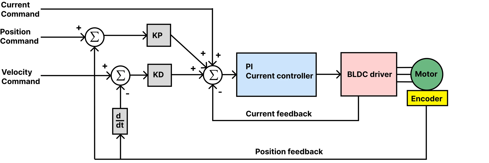
In PD mode the motor behaves like a spring and a damper: the torque is KP × (setpoint − position) + KD × (speed
setpoint − speed) + feedforward current. Set KP and KD (the gains, or #KP, #KD, or Send_PD_Gains), then
command with #PD, #PDV and #PDI or Send_data_pack_PD. Start with a small KP and KD of 0, raise KP until
the motor holds position firmly, then add KD until it stops ringing. The theory corner
explains the loop.
Limits¶
- The velocity limit (
#Vlimit) clamps the speed the loops may command, in encoder ticks per second. A rough maximum for your motor is 0.8 × Vbus × KV × 16384 / 60 ticks per second, with KV from calibration. - The voltage limit (
#Vlim) clamps the voltage of the current loops in mV; 0 uses the supply voltage. #Rstint 1resets the integrators on every new setpoint, which avoids windup when a program sends one setpoint after another with large steps.
Saving the configuration¶
Nothing you set survives a power cycle until you save it.
Saving writes the whole configuration to the EEPROM: the motor parameters and the calibration, every gain and limit, the CAN node ID, the heartbeat and watchdog settings, the thermistor and LED settings and the gripper flag. Over CAN, Send_Save_config does the same. Save after calibration, after tuning, and after changing the node ID.
The defaults¶
Restoring the defaults writes the factory values to the EEPROM and reloads them. It also resets the serial number, the hardware version and the batch date the driver reports, and clears the gripper flag, the heartbeat rate and the watchdog; note what the driver reports before you use it. The defaults are listed in the Defaults reference.
Use it before the first calibration of a motor, after a firmware update when the driver behaves oddly, and when
the state shows nonsense values (a -1
where a number should be): the EEPROM then holds a layout the firmware does not expect.
What the driver reports¶
The state Motor GUI shows, and #Info prints, is what is in the EEPROM and what the driver measures: hardware
and firmware version, serial number, calibration state, resistance, inductance, pole pairs, Kt and KV, the gains
and limits, the CAN ID, and the active errors. It is the first thing to look at when something is off, and the
thing to copy into a bug report.
6. Operation
Operation¶
How a calibrated driver is used: the control modes and what each one does, the two ways to talk to the driver and the two tools on top of them, what happens when something goes wrong, and gripper mode.
In this chapter¶
The exact layout of every message and command is in the API reference.
Control modes¶
The driver is always in one control mode. A command that carries a setpoint switches to the mode that uses it;
#Idle or Send_Idle switches back to idle. The driver refuses the closed-loop modes while it is not calibrated or
while an error is active.
stateDiagram-v2
[*] --> NotCalibrated: power-up, no saved calibration
[*] --> Idle: power-up, saved calibration
NotCalibrated --> Calibration: #Cal
Calibration --> Idle: success, #Save
Calibration --> NotCalibrated: a test fails
Idle --> ControlMode: a setpoint
ControlMode --> Idle: #Idle, Send_Idle
ControlMode --> Error: a fault
Idle --> Error: a fault
Error --> Idle: #Clear, cause goneA setpoint is #P, #V, #Iq, #PD or a CAN motion frame, and a new setpoint switches the mode without
passing through idle; a fault is any of the errors on Errors and recovery.
| ControlMode | What the motor does | Entered by | Setpoint unit |
|---|---|---|---|
| Idle | nothing: coasts (phases open) or brakes (phases shorted), as set by #Brake or Send_Settings |
#Idle, Send_Idle, #Clear, errors |
— |
| Position | holds and moves to a position with the cascade of position, velocity and current loops | #P, Send_data_pack_1 (8 bytes) |
encoder ticks |
| Velocity | turns at a speed with the velocity and current loops | #V, Send_data_pack_1 (5 bytes) |
encoder ticks/s |
| Current (torque) | applies a current, so a torque, with the current loop alone | #Iq, Send_data_pack_1 (2 bytes) |
mA |
| PD (impedance) | behaves like a spring and a damper around a position, with KP and KD |
#PD, Send_data_pack_PD |
encoder ticks |
| Voltage torque | applies a voltage on the q axis directly, without the current loop | #Uq |
mV |
| Open loop | turns the stator field at a set electrical speed without the encoder in the loop; the rotor follows it like a stepper | #Openloop |
electrical speed |
| Gripper | runs the gripper state machine: move to a jaw position with a speed and a current limit | #Grippos, Send_gripper_data_pack (with #Gripper 1) |
0 to 255 |
| Calibration | the calibration routine, or the gripper calibration | #Cal, #Gripcal |
— |
Units¶
- Position is in encoder ticks: 16384 per revolution of the motor shaft, counting up without limit over several revolutions. Positive is counter-clockwise seen from the encoder side of the board, see below.
- Speed is in encoder ticks per second: 16384 is one revolution per second, 60 rpm.
- Current is in mA. Torque is current times the motor's Kt, which calibration finds.
- Feedforward: the 8-byte motion frame carries a speed and a current feedforward beside the position, the 5-byte one a current feedforward beside the speed. They are added after the loops, so a host that knows the trajectory can command it directly and leave the loops to correct the rest. Send 0 when you do not use them.
Try it¶
As a position: 1.000 turns, 360.0° · as a speed: 60 rpm · the practical maximum for 11 pole pairs is about 2727 rpm
Torque: 0.30 Nm, 30 N·cm
The units of this page, with your numbers: 16384 encoder ticks per turn, the practical speed limit from the electrical frequency the control loop can follow (Ratings and limits), and the torque as Kt times the current.
Positive rotation¶

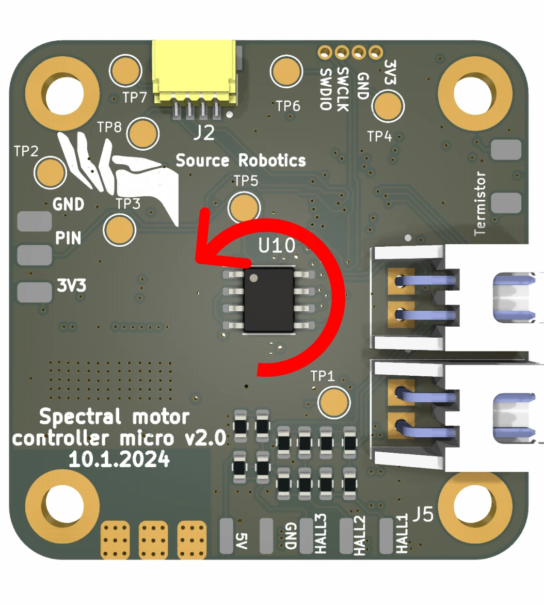
The direction is tied to the encoder, not to the wiring: since firmware 105 calibration compensates the order of the phases, so the motor turns the same way whichever wire went to which terminal.
Which mode am I in?¶
#Mode prints the mode: Idle mode, Position control, Speed control, Current control, PD control,
Open loop, Gripper mode or Gripper calib mode. The voltage-torque mode has no label of its own in this
release; #Info and the behaviour of the motor are the check there.
Over UART¶
The serial port is the interactive way to use the driver: you type a command, the driver answers in text. It is the only way to calibrate, and the quickest way to try a setting. For real-time control of several motors use CAN.
The protocol¶
A command is #, a name, optionally a space and one number, and a line ending:
- The name is case-sensitive and matches the firmware's spelling exactly (
#Kpiq, not#kpiq); at most 19 characters, the number at most 19 characters, both together at most 20. - The line ends with LF (
\n); a CR before it is accepted. Terminals send CR+LF when you press Enter, with the setting described in The serial terminal. - A Set/Get command with a number sets the value and prints it; without a number it only prints it.
#P 16384moves to position 16384 and prints the position;#Pprints the position. - An action command takes no number:
#Cal,#Save,#Idle. - A command the parser does not know is answered with
Unknown command. A few names the parser accepts have no handler and are answered with nothing; the UART reference lists them. - 256000 baud, 8N1, 3.3 V.
The driver only answers¶
The driver never sends anything on its own, except with the cyclic commands: #Cyc 100 makes it print position,
speed and Iq every 100 ms as $ <position> <speed> <Iq> (for BetterSerialPlotter), #Cyca 100 as
Position:x,Speed:y,Iq:z (for the Arduino plotter); #Cyc or #Cyca without a number stops it.
Typical sessions¶
A first test after calibration:
#Ilim 1500 current limit for the motor
#V 16384 one revolution per second
#V 0
#P 0 back to the start
#Idle
Tuning:
Status:
Every command is in the UART reference, grouped by what it does.
Over CAN¶
CAN is the interface for running a machine: compact frames, a fixed cost per message, up to 16 drivers on one bus, and a host that can be a PC, a microcontroller or a robot control box. The driver answers a motion command with its position, speed and current in the same frame exchange, so a control loop on the host needs one frame out and one frame back per motor and cycle.
The frame¶
CAN 2.0 data frames with 11-bit identifiers at 1 Mbit/s. The identifier carries the node, the command and the error state:

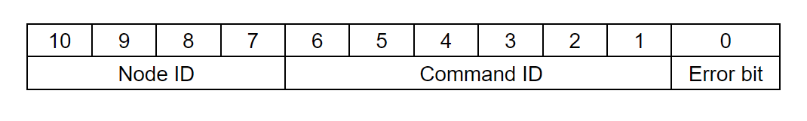
- Node ID, bits 10 to 7: which driver, 0 to 15. A driver acts only on frames with its own node ID and sends
with it. Set it with
#CANIDor Send_CAN_ID and save; every driver ships as node 0. Use 0 to 13: the bootloader reserves 14 and 15, and a driver on one of those cannot be updated over CAN. - Command ID, bits 6 to 1: which message, 0 to 63. The CAN reference lists all of them.
- Error bit, bit 0: in a frame from the driver, 1 while any error is active. In a frame from the host it is ignored.
So a host sends Send_data_pack_1 (command 2) to node 3 with the identifier (3 << 7) | (2 << 1) = 0x184, and the
driver answers with command 3 under (3 << 7) | (3 << 1) | error. A lower node ID wins the bus arbitration.
Multi-byte values are big-endian: the most significant byte is in data[0] and goes first. Floats are IEEE 754 single precision. Flags inside a byte are numbered from the most significant bit.
Three kinds of message¶
- Send_…: the host sends data. Some of these are answered (a motion command with Respond_data_pack_1, the gripper command with Respond_Gripper_data_pack); most are not.
- Send_Respond_…: the host asks for data with a remote frame (the RTR bit set, no data) carrying the command ID; the driver answers with a data frame with the same command ID.
- Respond_…: frames only the driver sends: the answers above, and the heartbeat.
A control loop¶
Send Send_data_pack_1 at a fixed rate, 100 Hz to 1 kHz, with the setpoint for this cycle; read Respond_data_pack_1 for the position, speed and current of the last cycle. Every valid frame resets the watchdog, so with Send_Watchdog set to a few cycle times the motor stops when the host stops. The heartbeat is the other way round: Send_Heartbeat_Setup makes the driver send a frame on its own every N ms when it has nothing else to send, so the host can see it is alive.
sequenceDiagram
participant H as Host
participant D as Driver
H->>D: Send_Clear_Error
H->>D: Send_Watchdog: a few cycle times
H->>D: Send_Heartbeat_Setup: every N ms
loop every cycle, 100 Hz to 1 kHz
H->>D: Send_data_pack_1: the setpoint, with the feedforwards
D-->>H: Respond_data_pack_1: position, speed, current, the error bit
end
D-->>H: heartbeat, whenever nothing else was sent for N ms
Note over D: no valid frame within the watchdog time: watchdog error, the motor stopsFrom a PC¶
The CANvas adapter shows up as a serial port and
speaks slcan; python-can opens it with bustype='slcan'. The Python library wraps the whole protocol, see
With Python. Any CAN adapter that python-can supports works the same way.
Several drivers¶
Give each driver its own node ID before you put them on one bus (a bus with two node 0s cannot tell them apart):
connect one driver at a time over UART, #CANID 3, #Save. Terminate the first and the last node, and wire the
daisy chain as in Power and the CAN daisy chain.
With Python¶
The Spectral-BLDC library wraps the CAN protocol: one method per message, and the driver's answers unpacked into
attributes. It runs on Windows, Linux and macOS with any adapter python-can supports, such as the CANvas adapter
over slcan.
Installing¶
The source and the examples are in Spectral-BLDC-Python.
For joints with a gear ratio and an offset, the Source Robotics Toolbox
(pip install SourceRoboticsToolbox) turns encoder ticks into joint angles.
The first program¶
import Spectral_BLDC as Spectral
import time
# the adapter: a CANvas on COM41 (Windows) or /dev/ttyACM0 (Linux), 1 Mbit/s
comms = Spectral.CanCommunication(bustype='slcan', channel='COM41', bitrate=1000000)
# the driver with node ID 0
motor = Spectral.SpectralCAN(node_id=0, communication=comms)
motor.Send_Clear_Error()
# A configured, calibrated motor with a clear shaft: command one turn for five seconds.
# Each command requests a fresh position/speed/current reply; heartbeat is not required.
try:
deadline = time.monotonic() + 5.0
next_cycle = time.monotonic()
while time.monotonic() < deadline:
motor.Send_data_pack_1(Position=16384, Speed=0, Current=0)
reply_deadline = min(deadline, time.monotonic() + 0.02)
while time.monotonic() < reply_deadline:
message, ids = comms.receive_can_messages(
timeout=max(0.0, reply_deadline - time.monotonic()))
if message is None:
print("No motion feedback in this cycle; check the bus and node ID")
break
if ids.node_id != 0 or ids.command_id != 3: # Respond_data_pack_1
continue
motor.UnpackData(message, ids)
print(motor.position, motor.speed, motor.current, ids.error_bit)
if ids.error_bit:
raise RuntimeError("Driver fault: inspect State_of_Errors before retrying")
break
next_cycle += 0.02
time.sleep(max(0.0, next_cycle - time.monotonic()))
finally:
motor.Send_Idle() # also on Ctrl-C; the shaft no longer holds torque
receive_can_messages returns the raw python-can message and a tuple with the node ID, the command ID and the
error bit of the identifier; UnpackData decodes the message into the attributes the message carries. This example resends the same
setpoint at 50 Hz for five seconds, prints only matching motion feedback, and puts the motor in idle when it
ends. Idle releases torque: support any attached mechanism before running it. A missing reply is reported
without claiming that a move finished. Configure and calibrate the driver first (Quick start).
What is where¶
| Library call | Message | What you get back |
|---|---|---|
Send_data_pack_1(Position, Speed, Current) |
Send_data_pack_1 | position, speed, current |
Send_data_pack_PD(...) |
Send_data_pack_PD | position, speed, current |
Send_Respond_Encoder_data() |
Send_Respond_Encoder_data | position, speed (32-bit) |
Send_Respond_State_of_Errors() |
Send_Respond_State_of_Errors | the error attributes |
Send_gripper_data_pack(...) |
Send_gripper_data_pack | gripper_position, gripper_current, the gripper state bits |
Send_Limits(...), Send_Velocity_Gains(...), ... |
the setting messages | nothing; Send_Save_config() keeps them |
The complete map of calls to messages is in the Python library reference, and each message's bytes in the CAN reference.
Several motors¶
One CanCommunication per bus, one SpectralCAN per driver with its node ID. Send to each, then read the bus:
every answer carries the node ID in ids.node_id, so route it to the right object.
motors = [Spectral.SpectralCAN(node_id=i, communication=comms) for i in range(3)]
for m in motors:
m.Send_Respond_Encoder_data()
for _ in motors:
message, ids = comms.receive_can_messages(timeout=0.1)
if message is not None:
motors[ids.node_id].UnpackData(message, ids)
The Guides build on this: a quadruped leg, gravity compensation, bilateral teleoperation.
Working in Motor GUI¶
Everyday use of the driver from Motor GUI: moving the motor, watching it, recording what it does, running several motors, and the few things that only work from the console.
Moving the motor¶
The jog controls send setpoints in the matching control mode: Jog velocity turns the motor at a speed in encoder ticks per second (16384 is one revolution per second), Jog position moves it to a position in ticks, Jog current applies a torque in mA. Send setpoint sends a value in the mode the driver is in. Idle stops the motor; Control modes says what each mode does. With Live stream while dragging the setpoint follows the slider, which is the quickest way to feel a tuning change.
Watching it¶
The plots show position, speed and current as the driver reports them. Pan and zoom to a move; hover for the value. A step in the position setpoint shows overshoot and settling at once, a speed step shows the velocity loop's response; Current limit and loop tuning uses them step by step.
Recording¶
A recording keeps the telemetry stream to a file: New recording, run the move, Stop recording. Record the response before and after a tuning change to compare them, or a failure to attach to a bug report (Report a problem).
Clearing errors¶
The errors the driver reports are listed with the state; Clear errors sends what #Clear does. An error whose
cause is still present comes straight back; Errors and recovery says what each one needs.
Several motors¶
Over the CANvas adapter the GUI sees every driver on the bus and addresses each by its node ID. Give each driver its own ID over the serial adapter first (the CAN node ID in the settings, then Save), terminate the first and the last node, and set a watchdog (Watchdog ms) on a bus that drives something that must not run away: Power and the CAN daisy chain, Over CAN.
Gripper¶
A driver in gripper mode shows the gripper controls: calibrate the jaws, a position from open to closed, a speed, a current limit, and the state the gripper reports. No gripper connection means the driver is not in gripper mode or not on the bus. Gripper mode.
Firmware updates¶
Firmware update lists the releases from GitHub and flashes one through the bootloader; on a bus, Scan bootloaders finds the boards. Updating through the bootloader.
The console¶
Anything the GUI has no control for is one # command away in the console, with the driver's answer below it;
the whole set is in the UART commands reference. The cyclic output (#Cyc) is what
the GUI's telemetry stream uses over serial, so do not start it by hand while the plots run.
Reading a fault¶

1. Errors state: a fault is active. 2. Errors tab: inspect individual flags. 3. E-stop error: 1 identifies the latched fault in this simulation. 4. Clear errors: clear it after removing its cause; a persistent cause returns on the next update. Screenshot captured from Mock CAN (demo).
Check: after recovery the fault flag returns to 0 and the state shows No errors. If it returns, stop and follow Errors and recovery.
Errors and recovery¶
When the driver detects a fault it stops the motor, goes to idle, turns the status LED on steadily and sets the error bit in every CAN frame it sends. It stays there until the error is cleared.
Seeing the error¶
- The LED: on and not flashing means error mode (or not calibrated). Three short flashes and a pause is normal operation; flashing every 0.5 s is calibration.
#ErrorprintsIn error state!orNo errors!, followed by one line per active error.- Send_Respond_State_of_Errors returns every flag as a bit; the error bit of any frame says whether there is one.
| Normal operation | Calibration | Error mode |
|---|---|---|
In error mode the LED does not flash: it stays on, as in the photo on the right.
The errors¶
| Error | #Error line |
Cause | What to do |
|---|---|---|---|
| Vbus | Vbus error |
the supply voltage is below 9 V or above 29.5 V (#Vmax) |
check the supply and the cable; a decelerating motor can push the voltage up |
| Encoder | Encoder error |
the magnet is not detected or the reading is invalid | magnet distance and type, see The encoder magnet |
| Driver | Driver error (undervoltage, thermal shutdown, or overcurrent) |
the MOSFET driver's own protection tripped | lower the current limit, cool the driver, check for a short between the motor leads |
| Velocity | Velocity error |
the speed exceeded the limit | lower the commanded speed or raise #Vlimit |
| Temperature | Temp error |
the thermistor reads more than #Tlim (75 °C by default), with #Term 1 |
let the motor cool; lower the current limit |
| E-stop | Received ESTOP command |
Send_ESTOP was received | clear it when it is safe |
| Watchdog | Watchdog error |
no valid CAN frame within the watchdog time (Send_Watchdog) | the host stopped sending; fix the host, then clear |
| Not calibrated | Not calibrated |
the motor has not been calibrated since #Default, or the EEPROM is invalid |
run #Cal and #Save |
| Current | Current error |
reserved; this firmware never raises it | — |
Clearing¶
#Clear or Send_Clear_Error clears the flags and goes to idle. An error whose cause is still present comes
straight back: a Vbus error at 2 V stays until the supply is right; once the supply is 24 V, one #Clear returns
the driver to normal operation. The calibration error clears only by calibrating (or, for a motor you know is
calibrated, #Calibrated 1).
When the driver does not answer¶
- No LED at all: no power. Check DC+ and DC− and the cable orientation.
- LED on, no answer on UART: the baud rate (256000), TX and RX crossed, the adapter's port.
- No answer on CAN: the node ID, the termination (about 60 Ω across the bus, unpowered), 1 Mbit/s on the adapter.
#Infoshows-1or nonsense: the EEPROM holds a layout the firmware does not expect;#Default, then calibrate again.
Troubleshooting goes through the symptoms one by one.
Gripper mode¶
A driver can run a gripper instead of a joint: the same board, with a state machine that moves a jaw to a position between open and closed, at a speed, with a current limit that becomes the grip force, and that reports when it holds something. The SSG-48 gripper is built on the Spectral Micro this way.
Turning it on¶
#Default clears the flag again. A driver in gripper mode still answers every other command; the gripper
commands only work with the flag set.
Calibrating the gripper¶
After every power-up the gripper has to find its end stops: #Gripcal or Send_gripper_calibrate. The jaws move
to both ends; the positions become 0 (open) and 255 (closed). The motor itself must be calibrated (#Cal) and
saved before that, once.
Moving¶
Over UART:
#Gripvel 100 speed, 0 to 255
#Gripcur 400 current limit of the move in mA, the grip force
#Grippos 200 go to position 200 (0 open, 255 closed); also activates the gripper
Over CAN, Send_gripper_data_pack carries position, speed and current in one frame with the activate and action bits; the driver answers with Respond_Gripper_data_pack: the position, the measured current, whether it is moving, and the object detection:
| Object detection | Meaning |
|---|---|
| 0 | moving |
| 1 | an object was detected while closing: the jaws stopped on it and hold it with the current limit |
| 2 | an object was detected while opening |
| 3 | the position was reached |
An empty Send_gripper_data_pack (0 bytes) only asks for the state. Send_gripper_data_pack's E-stop bit raises the
gripper E-stop error; #Gripstop 1 does the same over UART.
Current
The firmware does not limit the current you give a gripper move. The safe range depends on the gripper's mechanics and motor; the SSG-48 manual gives it for that gripper. The driver's hard limit is 2800 mA.
Where the details are¶
The bytes of the two gripper frames are in the CAN reference, the UART commands in the UART reference.
7. Firmware
Firmware¶
The driver's firmware is open source and released as numbered builds. A driver shipped with firmware 105 or newer carries a bootloader and updates itself over UART or CAN; an older driver needs the bootloader installed once with a programming adapter.
In this chapter¶
- Releases and versions: how releases are numbered, how to see which one a driver runs, what the release notes contain
- The bootloader: what it is, how the driver boots, how it is entered, its protocol and tools
- Updating through the bootloader: the normal update, with Motor GUI, the bootloader's command-line tool, or a PAR6 control box
- Installing the bootloader on an older board: for a driver that runs firmware 104 or older
- Building from source: PlatformIO, the memory layout, uploading with a programming adapter
The release notes of every release up to the one this site describes are in the appendix, Firmware release notes.
Releases and versions¶
A firmware release is a number: 101, 104, 105, … Every release is a tag V<number> in the
firmware repository and a GitHub release that
carries the image spectral-bldc-firmware-V<number>.bin, a manifest firmware.json with the image's size, SHA-256 and
the commit it was built from, and the release notes. The notes are the firmware's changelog; the
appendix collects them.
Which release does my driver run?¶
prints Software version: <number> among the rest. Over CAN, Send_Respond_Device_Info returns it as the third
byte. From firmware 105 the number is the build's own version; before that it was read from the EEPROM and could
be stale after an update until #Default.
Which release does this site describe?¶
The one in the version box on the landing page and in the version selector in the header. When a newer release changes what a page says, a new version of the site is published and the previous one stays reachable from the selector. The compatibility table says which releases go with which bootloader, Python library and PAR6 runtime.
The STEPFOC counterpart¶
Each Spectral Micro release has a STEPFOC release with the same changes; the numbers differ by one (Spectral Micro 107 is STEPFOC 108). The compatibility table lists the pairs.
The two branches¶
Releases from 105 on are built from the Bootloader_main branch of the repository, whose firmware is linked
to run above the bootloader. The main branch holds the firmware of release 104 and earlier, linked to run without a bootloader, and is not
updated. A board running 101 or 104 is documented by version 101 of this site (104 differs from 101 only by the
Send_Voltage_Limit message); to move it to a current release, see Installing the bootloader on an older board.
The bootloader¶
Every driver shipped with firmware 105 or newer carries a small bootloader in the first 12 KB of its flash. It starts the firmware on a normal boot, and it loads a new firmware over UART or CAN when a host asks, so a driver is updated without a programming adapter and without opening anything. The bootloader is open source: stm32f103c-bootloader, shared with STEPFOC.
Memory layout¶
| Address | Contents |
|---|---|
0x08000000 – 0x080022FF |
the bootloader (about 9 KB) |
0x08002C00 – 0x08002FFF |
the bootloader's configuration page: the board ID, the firmware's page count and CRC, the bootloader's build version |
0x08003000 – 0x0801FFFF |
the firmware (up to 116 KB) |
RAM 0x20001000 |
a magic word the bootloader sets to hand over to the firmware |
The firmware is linked to start at 0x08003000 and sets its vector table there (VECT_TAB_OFFSET=0x3000); the
first 0x3000 bytes belong to the bootloader and the firmware never touches them.
What happens at boot¶
- On a reset, the bootloader runs first. If the magic word is in RAM and the reset was a software reset, it checks the firmware's stack pointer and reset vector and jumps straight into the firmware: about 10 ms, the normal boot.
- Otherwise it initialises the clocks, CAN, UART and its watchdog, and listens for a host for 2 s.
- With no host, and a firmware whose stored CRC is valid, it sets the magic word and resets; the next boot takes the fast path.
- With a host talking, it stays as long as the host keeps talking: 3 s after the last command, 60 s once a flash
is in progress. Any
PINGresets the timer. - With no valid firmware (never flashed, or a flash that was interrupted), it stays in bootloader mode and waits.
The LED is off; the driver answers nothing on
#Info.
Entering the bootloader¶
- From the firmware:
#Resetover UART or Send_Reset (command 14) over CAN. Since firmware 105 both reset the driver into the bootloader's 2 s window; the host tools send them for you. - At power-on: the 2 s window after every power-up, if the host is already polling.
- Always, when there is no valid firmware.
The board ID¶
The bootloader has a board ID of its own, 0 to 13, stored in its configuration page. 14 and 15 do not exist
for it: its command frame, identifier 0x700, decodes as node 14 in the firmware's identifier scheme, so those
two node IDs are reserved. Give drivers node IDs 0 to 13. The firmware accepts #CANID 14 and 15, but the
bootloader then keeps its old board ID and a firmware update over CAN cannot reach the driver. The firmware keeps it in step with its CAN node ID: setting the node ID (#CANID,
Send_CAN_ID) writes the bootloader's board ID too, so a driver answers the host tools under its node ID. A
replacement board ships as ID 0; two boards with the same ID on one bus corrupt each other's flash stream, so
give the new board its ID alone on the bus first (set-id in the host tool).
Transports and protocol¶
Over CAN (1 Mbit/s, standard 11-bit identifiers) the host commands on identifier 0x700 with 8 data bytes
(board_id, cmd, two parameters); the board replies on 0x701 + board_id with 5 bytes (board_id, cmd,
error code, a 16-bit parameter); the firmware image streams in bulk frames on (board_id << 7) | sequence,
16 frames of 8 bytes per chunk, with no reply per frame. Over UART (256000 baud) the same commands travel in
framed packets [0xBB][CMD][LEN][BOARD_ID][DATA…][CRC16] with the same 5-byte reply.
Commands: WBUF (1), WPAGE (2), WCRC (3), PING (4), SET_ID (5), ERASE_APP (6), STREAM_BEGIN (7),
STREAM_STATUS (8). Error codes: 0 OK, 1 invalid offset, 2 invalid CRC, 3 flash write failed, 4 invalid
page number. A flash is: ping, reset the firmware if it answers, ping until the bootloader answers, ERASE_APP
(about 3.5 s), then for each 1 KB page STREAM_BEGIN, 8 chunks of 16 frames, STREAM_STATUS, WPAGE with the
page's CRC32; finally WCRC with the page count and the image's CRC32. The bootloader stores the CRC and
reboots into the new firmware. The full wire protocol is in the bootloader repository's docs/PROTOCOL.md.
The host side¶
| Tool | Transport | Use |
|---|---|---|
| Motor GUI | serial adapter (Web Serial) or CANvas | one driver on the bench, releases fetched from GitHub |
host_tools/bl_flash.py in the bootloader repository |
slcan or gs_usb CAN adapters, or UART | scripts, several boards, list, set-id, flash --erase-first |
the PAR6 control box's flash_motor_firmware.py and the dashboard's Firmware tab |
the robot's own CAN bus | every joint of a robot, from the box |
Updating through the bootloader has the commands.
Recovery¶
An interrupted flash leaves an invalid CRC; the bootloader refuses to start the firmware and waits, so the board is
not lost: flash again. A board that answers nothing at all: power-cycle it with the host already polling, to catch
the 2 s window. The one thing the tools refuse, and that would need a programming adapter to undo, is flashing an
image linked for 0x08000000 (a firmware from the main branch) over the firmware region.
Installing it¶
Boards shipped with firmware 104 or older have no bootloader. Installing the bootloader on an older board
puts it there once, with a programming adapter at 0x08000000; from then on the board updates like any other.
Updating through the bootloader¶
A driver with the bootloader (firmware 105 or newer) is updated over the UART connector or the CAN bus: the host tells the driver to reset, the bootloader waits two seconds for a host, and the host streams the new image into it. No programming adapter, and nothing to open.
Before you update
- Park the mechanism: the motor loses torque during the update and until the new firmware is calibrated and commanded.
- An update may clear the calibration (the release notes say so when it does); plan to calibrate and
#Saveafterwards, and note the gains#Infoprints. - On a bus with several drivers, update each node; a bus with mixed releases behaves unpredictably.
With Motor GUI¶
Motor GUI in Chrome or Edge, connected over the serial adapter or the CANvas adapter: choose the release, and the GUI fetches the image and its manifest from the GitHub release, verifies the size and the SHA-256, resets the driver into its bootloader and flashes it. This is the way for one driver on the bench.
With the bootloader's command-line tool¶
The bootloader repository has host_tools/bl_flash.py,
which flashes an image over CAN (slcan or candleLight/gs_usb adapters) or over UART:
cd host_tools
pip install -r requirements.txt
# over CAN with a CANvas (slcan) adapter on COM6, driver with board ID 0
python bl_flash.py --transport can --can-interface slcan --channel COM6 flash spectral-bldc-firmware-V107.bin --board 0 --erase-first
# over UART on COM7
python bl_flash.py --transport uart --port COM7 --baudrate 256000 flash spectral-bldc-firmware-V107.bin --board 0 --erase-first
The tool sends the reset command to the running firmware (#Reset over UART, Send_Reset over CAN), catches the
bootloader's two-second window, erases the application pages and streams the image page by page, each page
verified by a CRC; list shows the boards in bootloader mode, set-id changes a board's bootloader ID. The image
is the spectral-bldc-firmware-V<number>.bin from the GitHub release.
Board ID and node ID
The bootloader has its own board ID (0 to 13), kept in its configuration page, separate from the firmware's
CAN node ID. The firmware keeps the two in step when the node ID is set (#CANID, Send_CAN_ID), so a driver's
bootloader ID is normally its node ID.
From a PAR6 control box¶
A robot built on the Robot Control Box updates every joint from the box itself, over its own CAN bus, from the
dashboard's Firmware tab or with tools/flash_motor_firmware.py; the
PAR6 documentation describes it.
What happens in the driver¶
- The host sends the reset; the firmware reboots into the bootloader.
- The bootloader listens for two seconds. With no host it starts the firmware; with a host it stays as long as the host keeps talking (60 s during a flash).
- The application pages are erased, then written page by page; each page is checked by a CRC.
- The bootloader checks the whole image's CRC, records it, and starts the new firmware.
When it fails¶
A flash that fails or is cancelled part way is not a brick: the stored CRC is invalid, so the bootloader refuses to
start the firmware and waits for a host. Run the flash again; bl_flash.py list (or a passive scan from the
control box) finds the board. A board that answers nothing: power-cycle it with the host already polling, to catch
the two-second window.
An image linked for 0x08000000 (a firmware from the main branch, release 104 and earlier) must never be
flashed through the bootloader: it would overwrite the bootloader's own region if the tool did not refuse it.
The tools validate the image first.
Installing the bootloader on an older board¶
A driver running firmware 104 or older has no bootloader: its firmware starts at the beginning of the flash. To run any release from 105 on, which is linked to start above the bootloader, the bootloader must be installed once, with a programming adapter on the JTAG connector. After that, every update goes over UART or CAN.
Warning
Disconnect the motor supply and the UART adapter before connecting the programming adapter. The adapter powers the board at 3.3 V.
What you need¶
- The programming adapter (an ST-LINK with the 1.27 mm pogo-pin adapter for the JTAG pads), or any ST-LINK, J-Link or OpenOCD-compatible probe wired to 3.3 V, GND, SWDIO and SWCLK.
- STM32CubeProgrammer or the older STM32 ST-LINK Utility on the PC, with the ST-LINK drivers.
- The bootloader binary from the bootloader repository's
bin/folder; itsREADME.mdnames the current file.

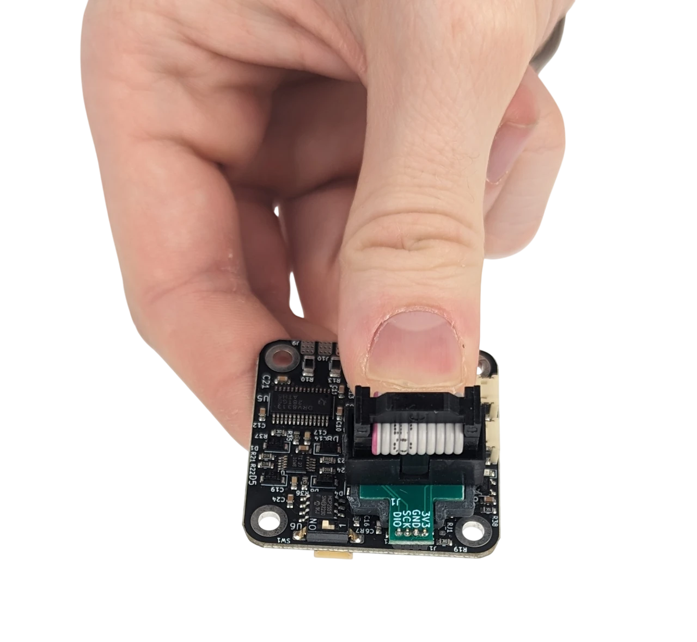
Steps¶
- Connect the adapter to the JTAG pads and the PC.
- In the programmer, connect to the target (SWD). The STM32F103CB shows up with 128 KB of flash.
- Erase the chip, or at least the application region: the old firmware and the bootloader must not overlap.
- Program the bootloader binary at address
0x08000000. - Disconnect the adapter, power the driver. The bootloader finds no valid application and waits in bootloader mode (the LED stays off).
- Flash the firmware release through the bootloader, over UART or CAN, as in Updating through the bootloader.
#Infoshows the new release.#Default, enter the motor parameters, calibrate,#Save.
Memory layout
0x08000000–0x080022FF bootloader, 0x08002C00 its configuration page (board ID, the application's CRC),
0x08003000–0x0801FFFF the application (116 KB). The bootloader keeps a magic value in RAM to hand over
to the application in about 10 ms on a normal boot.
The programmer's settings¶
In ST-LINK Utility, Target → Settings with SWD and the default frequency works; Target → Program & Verify
with the start address 0x08000000. The pictures of the old flashing procedure apply to the connection and the
settings dialog:
| Settings | Programming |
|---|---|
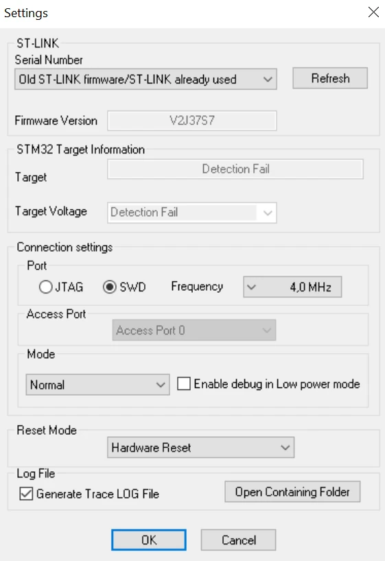 |
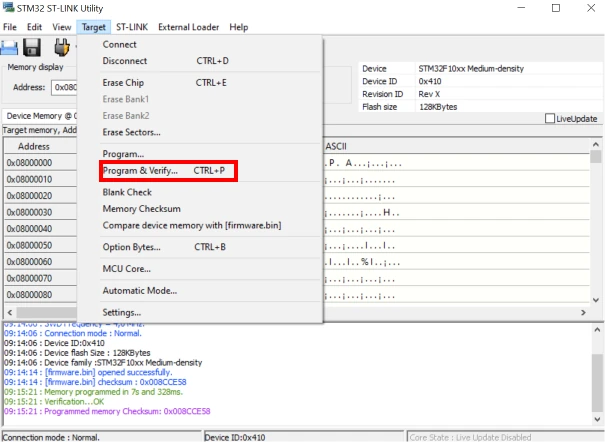 |


The same adapter uploads a firmware you build yourself, see Building from source.
Building from source¶
The firmware is a PlatformIO project for the Arduino core on the STM32F103CB, in the Spectral BLDC Firmware folder
of the firmware repository
on the Bootloader_main branch.
Building¶
- Install Visual Studio Code and the PlatformIO extension.
- Clone the repository and check out
Bootloader_main. - Open the
Spectral BLDC Firmwarefolder in VS Code; PlatformIO fetches the platform (ststm32@15.4.1) and builds with the PlatformIO Build button orpio run. The image is.pio/build/genericSTM32F103CB/firmware.bin.
The project is linked for the bootloader: VECT_TAB_OFFSET=0x3000, the linker script ldscript_bootloader.ld,
the upload offset 0x08003000 and a maximum size of 118784 bytes, in platformio.ini. A build that exceeds the
size fails to link.
Uploading¶
- Through the bootloader: flash the built
firmware.binwithbl_flash.pyor Motor GUI as in Updating through the bootloader. This is how a release is installed, and works on any driver with the bootloader. - With the programming adapter: Upload in PlatformIO uses ST-LINK and writes the image at
0x08003000. The bootloader must already be on the board; the upload does not touch it. The serial monitor (the plug icon) opens the UART at 256000 withsend_on_enter, so you can type commands to the driver from the same window.

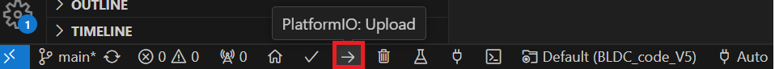
Where things are¶
src/constants.h |
FIRMWARE_VERSION, the CAN command IDs, the EEPROM map, the loop and PWM frequencies |
src/common.h |
the controller and PID structures with their defaults |
src/communication.cpp |
the UART command handlers |
src/communication_CAN.cpp |
the CAN receive switch and the transmit functions |
src/SerialPacketParser.cpp |
the UART parser and the list of names it accepts |
src/motor_control.cpp |
the control loops, the calibration routine, the gripper state machine |
src/bootloader_config.cpp |
the vector table offset and the reset into the bootloader |
release_guide.md |
how a release is cut: version bump, build, tag, GitHub release with firmware.json |
Making a release¶
release_guide.md in the repository is the procedure: bump FIRMWARE_VERSION, build, commit the source change
with the rebuilt Binaries/firmware.bin, tag V<number>, create the GitHub release with the image and
firmware.json and the release notes. This site's tools/sync_firmware.py reads a release by its tag; the
version box names the release.
A firmware for a board without a bootloader¶
The main branch builds a firmware linked at 0x08000000 for boards that have no bootloader. It stops at release 104 and is not maintained; install the bootloader instead,
Installing the bootloader on an older board.
Troubleshooting¶
By symptom. The error flags and what clears them are in Errors and recovery.
The motor does not move¶
flowchart TD
A([The motor does not move]) --> B{Does the driver answer?}
B -- no --> C[The supply and its polarity, the LED;<br>UART: the baud rate, TX and RX;<br>CAN: the node ID, 1 Mbit/s, the termination]
B -- yes --> D{Calibrated?}
D -- no --> E[#Cal and #Save]
D -- yes --> F{An error active? The LED on steadily}
F -- yes --> G[#Error names it: fix the cause, then #Clear]
F -- no --> H{A current limit above 0?}
H -- no --> I[#Ilim to the motor's rated current, #Save]
H -- yes --> J[Command a setpoint in a closed-loop mode;<br>#Mode and #Info show the state]The driver does not answer¶
| Symptom | Check |
|---|---|
| No LED | the supply, DC+ and DC−, the power cable's orientation. If the cable was the wrong way round the driver is destroyed |
| LED on, nothing on the terminal | 256000 baud; TX to RX and RX to TX; the adapter's port; 3.3 V adapter; the line ending CR+LF |
| LED on, nothing on CAN | the node ID; 1 Mbit/s on the adapter; termination (about 60 Ω across CAN H and CAN L with everything unpowered); the CAN cable's orientation |
Unknown command |
the name's spelling and case: #Kpiq, not #kpiq |
| the LED is off and nothing works after a firmware update | the bootloader has no valid firmware: flash again, see Updating through the bootloader |
Motor GUI¶
| Symptom | Check |
|---|---|
| the browser offers no port | a Chromium-based browser (Chrome, Edge, Brave, Opera); Firefox and Safari have no Web Serial |
| the port is listed but will not open | another program holds it: a terminal, PlatformIO's monitor, the Arduino serial monitor |
| the port opens, nothing appears | the driver's power; TX and RX crossed on a non-Source adapter; the baud rate on a non-Source adapter (256000) |
| No connection on CAN | the CANvas adapter's port; the bus termination; the node ID of the driver; 1 Mbit/s |
| the calibration does not start | calibration runs over the serial connection only, not over CAN |
| Unsaved changes after a power cycle | the settings were not saved to the driver; Save writes them |
| the firmware update finds no bootloader | a driver with firmware 104 or older has no bootloader: Installing the bootloader on an older board |
Calibration¶
The messages and their causes are in Calibration. The ones that come back most:
| Symptom | Cause |
|---|---|
Magnet test: Failed |
magnet too far, axially magnetised, or missing |
| the motor wobbles left and right during calibration | one phase is not connected |
Open loop: Failed |
the motor did not turn: a phase open, the open-loop voltage (#Openv) too low for the motor |
Phase order is wrong! |
the motor did not respond to the commutation check; wiring, current limit, magnet |
| calibration succeeds, the motor then runs badly or in the wrong direction | the magnet slipped on the shaft; glue it and calibrate again |
calibration succeeds but the LED stays on and #Error shows nothing |
#Info shows -1: #Default, calibrate again |
The motor¶
| Symptom | Cause |
|---|---|
| crunching or whining at speed | the current limit or the current loop gains too high; lower #Ilim, lower #Cbw and calibrate again, or lower #Kpiq |
| humming, oscillating at rest | #Kpv or #Kpp too high; see Current limit and loop tuning |
| weak torque | #Ilim low; the supply's current limit; a calibration run at a low supply voltage (the constants are off) |
| the motor is hot | lower #Ilim, enable the thermistor; a gimbal motor held against a load at its current limit heats quickly |
| it stops with a Vbus error when decelerating | the supply cannot absorb the returned energy; a different supply, or a brake resistor |
| it stops with a velocity error | the speed limit #Vlimit, or a load that lets the motor overrun |
| it falls behind under a load | the torque limit: raise #Ilim within the motor's rating, or a bigger motor |
| it holds position with a sawtooth noise | the position loop gain; the magnet distance |
Low-quality motors¶
Motors with visibly bad windings, an uneven back-EMF or a resistance that differs between the phases calibrate poorly and run rough. The tested motors are known good.
The magnet and the encoder¶
- The distance is 1 mm. "Magnet Good" from the magnet test does not mean the distance is right, only that the field is strong enough.
- A magnet touching the chip can destroy the microcontroller; a magnet too far gives a noisy, wrong position.
- The magnet must be diametrically magnetised and centred on the shaft.
The driver gets hot or shuts down¶
The MOSFET driver stage shuts down on its own overtemperature or overcurrent and reports a driver error. Lower the current limit, give the board airflow, check the motor leads for a short. Near 2.8 A the driver needs cooling.
After a firmware update¶
#Info shows the new release. If the values look wrong or the LED stays on: #Default, #Cal, #Save. A release note says when an update clears the calibration.
Getting help¶
Support says where to ask and what to include; #Info's output is the first thing.
Appendix
Firmware release notes¶
What changed in each firmware release, from the release notes in the firmware repository, up to the release this site describes.
V107 (2026-08-26)¶
Spectral BLDC firmware V107 — application image for flashing via the Spectral bootloader.
CAN bus¶
- Fixed
IN_DATA_PACK_PDwriting the commanded speed intoFeedforward_speedinstead ofVelocity_setpoint— PD mode's KD (velocity-damping) term was being evaluated against a stale/zero setpoint, so it silently ignored the commanded speed. - Added a generic mask+value settings command (
IN_SETTINGS) for CAN-unreachable boolean settings, starting with idle-mode brake/coast selection.
Usability¶
- Idle mode can now be set to brake (driver stays enabled, phases held shorted via a zero-voltage PWM vector) or coast (Hi-Z, previous/default behavior), via
IN_SETTINGSover CAN or#Brake <0|1>over UART.
Calibration¶
- Fixed
#Calspuriously failing with "Commutation/alignment check failed!" on some individual motor units. The pre-check that confirms the motor responds to a current command was driving a fixed voltage at the raw (uncalibrated) encoder angle; whether that produced torque depended on each unit's random magnet-to-encoder mounting angle. It now retries once at a 90-degree angle bias before failing.
Assets¶
spectral-bldc-firmware-V107.bin— application firmware image (flash at0x08003000, target STM32F103CB).firmware.json— manifest with version, size, and SHA-256 for download verification by the web flasher.
Integrity¶
- SHA-256:
2ca1f2e3ad3ee7848cf47d8733b084be2daa87fc2e49f954dd41c76405d48ada - Size: 95404 bytes
Built from commit 2e7febc on Bootloader_main.
V106 (2026-07-06)¶
Spectral BLDC firmware V106 — application image for flashing via the Spectral bootloader.
CAN bus - The controller now drains up to 8 CAN messages per pass instead of just 1, so short bursts (multiple commands sent back-to-back, or a busy multi-node bus) no longer silently drop messages once the 3-deep hardware FIFO fills. - A CAN peripheral that fails to initialize no longer bricks the board — UART stays fully usable, only the CAN bus is skipped.
Safety
- Added a hardware watchdog (100ms). If the control loop ever stops running, the board resets instead of leaving the motor driven at a stale duty cycle.
- Fixed a bug where Torque_mode could silently overwrite your commanded Iq setpoint when clamping to the current limit — reading it back after clamping now shows what you actually asked for, and raising the current limit afterward immediately restores the original commanded torque instead of requiring the command to be resent.
- Fixed undefined behavior in a serial-protocol integer conversion (fourBytesToInt).
- Synced default configuration values that had drifted between two locations in the code, so a fresh #Default and a freshly-flashed board's built-in defaults now agree.
EEPROM / configuration integrity - Added CRC validation over the saved configuration, split into two independent halves: calibration data (resistance, inductance, Kt/KV, angle offset, current-loop gains, etc.) and settings (PID tuning, limits, watchdog config, CAN ID, etc.). - This means a corrupted save (e.g. from a power loss mid-write) is detected and safely defaulted instead of silently running with garbage values — and critically, a future firmware update that only adds a new setting can no longer wipe your calibration, since the two are validated independently. - Boards upgrading from older, pre-CRC firmware keep their existing calibration automatically — no need to recalibrate after this update. - A few unused slots were reserved in the calibration block for upcoming features (e.g. magnet alignment), so those can be added later without another migration.
Performance - PWM output no longer re-resolves which timer/channel it's writing to on every single call (it was doing this 4x per control tick) — resolved once and cached, freeing up ISR headroom. - Velocity calculation switched from a floating-point divide to an integer multiply.
Usability
- New #Help command — prints a summary of the available commands.
- Serial now responds with "Unknown command" for unrecognized input instead of silently ignoring it.
- Calibration now prints progress during the angle-offset search (previously up to ~40 seconds of silence that could look like the board had hung).
- #Info now always reports live ISR execution time, useful for checking control-loop headroom on the bench.
- Fixed a leftover calibration-failure message that incorrectly suggested swapping motor phases — that failure mode no longer exists (reversed wiring has been auto-detected/compensated in software since V105); the message now accurately describes what actually happened (a commutation/current-response check, not a wiring-direction problem).
Assets
- spectral-bldc-firmware-V106.bin — application firmware image (flash at 0x08003000, target STM32F103CB).
- firmware.json — manifest with version, size, and SHA-256 for download verification by the web flasher.
Integrity
- SHA-256: edb06ca112a7d24b0581e0b157a4524928067a46f8dc850ce22df8128092a758
- Size: 94908 bytes
Built from commit e1f8611 on Bootloader_main.
V105 (2026-07-05)¶
Spectral BLDC firmware V105 — reversed-wiring auto-calibration
#Cal now auto-detects reversed motor phase wiring during the open-loop spin and compensates it in software as a phase B<->C reflection, instead of failing and telling you to physically swap phases. Angle-offset calibration is now found automatically as part of #Cal itself (deterministic rotor-lock + verify + symmetry-sweep), so the standalone #Calangle command has been removed. #Info now reports the true firmware version instead of a stale EEPROM value. Existing calibrated units are unaffected and do not need #Default.
Assets
- spectral-bldc-firmware-V105.bin — application firmware image (flash at 0x08003000, target STM32F103CB).
- firmware.json — manifest with version, size, and SHA-256 for download verification by the web flasher.
Integrity
- SHA-256: 0bd80ea038b8497fca8ab6a613b083d28e3473b360fa152b512b8ab0304dedb5
- Size: 91732 bytes
Built from commit b7dded3 on Bootloader_main. Includes reversed-wiring auto-calibration (commutation_dir detection + phase B<->C reflection) and deterministic rotor-lock angle-offset calibration.
V104 (2026-06-19)¶
Spectral BLDC firmware V104 — bootloader build.
Assets¶
spectral-bldc-firmware-V104.bin— firmware image (90,968 bytes).firmware.json— manifest with version, size, and SHA-256.
Integrity¶
- SHA-256:
76d70a6091218d74021eeef55c31d39f19fe97f68e2b236169f84c708518a360 - Size: 90968 bytes
Built from commit 20765c9 on Bootloader_main. Includes CAN Vlim command and bootloader support.
v101 (2025-09-29)¶
Some small fixes added based on STEPFOC code that is a clone of this code.
- Added theta_offset calib.
- Fixed some issues related to gripper mode where it vibrates
NOTE added another entry to EEPROM memory. Loading this code to update your previous code you will need to run #Default to load that new entry in EEPROM!
v100 (2024-03-27)¶
Software version 100
Versions and compatibility¶
Which firmware release works with which bootloader, Python library, PAR6 runtime and board revision. One row per firmware release, newest first.
| Firmware | Released | Bootloader | STEPFOC equivalent | Python library (Spectral-BLDC) | PAR6 runtime | Spectral Micro PCB | Docs |
|---|---|---|---|---|---|---|---|
| 107 | 2026-08-26 | required (installed on boards shipped with 105 or newer) | 108 | 1.20 or newer | 0.9 or newer | v2.0 | 107 |
| 106 | 2026-07-06 | required | 106 and 107 | 1.19 or newer | 0.9 or newer | v2.0 | not published |
| 105 | 2026-07-05 | required (the first release that needs it) | 105 | 1.19 or newer | 0.9 or newer | v2.0 | not published |
| 104 | 2026-06-19 | none (flashed with a programming adapter); the last release of the main branch | 104 | 1.19 or newer (1.20 for Send_Voltage_Limit) | 0.9 or newer | v2.0 | 101 applies; 104 adds the Send_Voltage_Limit message |
| 101 | 2025-09-29 | none (flashed with a programming adapter) | 103 | 1.17 or newer | 0.9 or newer | v2.0 | 101 |
#Info prints the firmware release a driver runs; Send_Respond_Device_Info returns it over CAN.
Hardware revisions¶
What changed in each revision of the Spectral Micro board, and which firmware and which revision of this manual go
with it. The board reports its hardware revision in #Info (Hardware version) and in Send_Respond_Device_Info;
the silkscreen on the bottom of the board carries the board's name and date.
| Revision | Marked | Changes | Firmware | Manual |
|---|---|---|---|---|
| v2.0 | Spectral motor controller micro v2.0, 10.1.2024 | the production board | 101 and newer; 105 and newer ship with the bootloader | this manual |
Boards shipped before firmware 105 have no bootloader; Installing the bootloader on an older board brings them to the current firmware.
Theory corner¶
The control concepts behind the driver's modes, for readers who want to know why a setting does what it does. Nothing here is needed to use the driver; the chapters say what to type.
Field-oriented control of a brushless motor¶
A brushless motor has three stator windings and a rotor of permanent magnets with \(p\) pole pairs: one mechanical revolution is \(p\) electrical cycles, 11 for a typical 5208 gimbal motor. The torque the rotor receives depends on the angle between the stator field and the rotor field, the load angle; it is largest when the stator field stands a quarter of an electrical cycle ahead of the rotor and zero when the two are aligned. A hobby ESC does not measure the rotor angle: it steps the field around in six fixed states and infers the rotor's position from the back-EMF of the winding it is not driving, which works at speed and fails at standstill. That is why an ESC cannot hold a position or produce a controlled torque at low speed.
Field-oriented control (FOC) measures the rotor angle instead. The encoder on the motor shaft gives the mechanical angle \(\theta\); with the pole pairs \(p\) and the angle offset \(\theta_0\) found by calibration, the electrical angle is \(\theta_e = p\,\theta + \theta_0\). The three phase currents, which sum to zero, are reduced to two (the Clarke transform) and then expressed in the rotor's frame of reference (the Park transform):
\(I_q\), the quadrature current, is the part of the current that stands at right angles to the rotor field and produces torque: \(\tau = K_t\, I_q\). \(I_d\), the direct current, is aligned with the field and produces none. Two PI controllers regulate \(I_q\) to the torque demand and \(I_d\) to zero by choosing the voltages \(U_q\) and \(U_d\); the inverse transforms turn those into three phase voltages, applied by PWM at 25 kHz with space-vector modulation, which gets about 15 % more phase voltage out of the supply than a plain sine would. The loop runs at 5 kHz.
The consequences are what makes a FOC drive behave like a servo: the current is only what the torque needs, so the motor runs cool and quiet; the field is always placed where it produces the most torque per ampere; the motor produces its full torque at standstill and holds a position; and the torque is known from the current, which is what makes impedance control and force-limited motion possible.
Calibration supplies the constants this needs. The resistance \(R\) and inductance \(L\) of a winding are measured.
The current loop gains follow from them and the chosen bandwidth \(\omega_c = 2\pi f_c\) (#Cbw):
\(K_p = L\,\omega_c\) and \(K_i = R\,\omega_c\) cancel the winding's electrical time constant and give a first-order
response at \(f_c\). The pole pairs come from an open-loop spin: the field is turned a known number of electrical
cycles and the encoder says how far the rotor went. The angle offset is found by driving a current along the \(d\)
axis and reading where the rotor settles. The velocity constant \(K_V\) comes from the back-EMF the spinning motor
generates, and the torque constant follows from it: in SI units \(K_t = 1/K_V\) (with \(K_V\) in rpm/V,
\(K_t \approx 9.55/K_V\) Nm/A).
The cascade of loops¶
Position, velocity and current are controlled by three loops nested inside one another:
The position loop is proportional: its output is a speed demand, limited by the velocity limit. The velocity loop is a PI controller: its output is a current demand, limited by the current limit; the integral term removes the steady-state error a load would otherwise leave. The current loop is the innermost and fastest. Each loop must be slower than the one inside it, by a factor of five to ten, for the inner loop to look like an ideal actuator to the outer one; that is why the loops are tuned from the inside out, and why a current loop bandwidth of 500 Hz leaves room for a velocity loop of a few tens of hertz and a position loop below that.
A command picks where the cascade is entered: a current setpoint uses the current loop alone, a speed setpoint the two inner loops, a position setpoint all three. The feedforward terms the CAN motion frames carry are added to the demands rather than computed from an error: a speed feedforward is added to the position loop's output, a current feedforward to the velocity loop's output. A host that knows the trajectory can command it directly and leave the loops to correct what is left, which gives a faster, smoother response than letting the loops produce the whole demand from the error.
An integrator accumulates error over time, and keeps accumulating while the output is at its limit; the overshoot
this causes when the limit is released is windup. The velocity loop's integrator is clamped to the velocity
limit, and #Rstint resets the integrators on every new setpoint, which suits a host that sends one setpoint
after another in large steps.
Impedance control¶
Impedance control does not prescribe a motion or a force. It prescribes the relation between the two: how much force the motor produces when it is displaced from its setpoint and how fast. The driver's PD mode implements a spring and a damper around the setpoint:
with the stiffness \(K_P\) in Nm/rad, the damping \(K_D\) in Nm·s/rad, and a current feedforward \(I_{ff}\) for a known load such as gravity. The torque is produced by the current loop (\(I_q = \tau / K_t\)), which is what makes FOC a prerequisite: a drive without the rotor angle cannot produce a commanded torque at low speed.
Pushed off its setpoint by an external force \(F\), the motor yields by \(\Delta\theta = \tau_{ext}/K_P\) and pushes back with that force; let go, it returns, with the damper settling the motion. A small \(K_P\) makes a soft joint, a large one a stiff joint; \(K_D\) without \(K_P\) is a pure damper. The setpoint can move, in which case the virtual spring drags the rotor along a trajectory with a bounded force — the property legged robots, hand-guided arms and anything that touches people or an uncertain environment need. The impedance loop is also what a position loop is not: the position loop's integral action removes any steady-state deflection and so makes the joint as stiff as the current limit allows, which is the right thing for a machine tool and the wrong thing for a leg.
The full impedance model includes an inertia term, \(M\ddot\theta\); the driver, like most joint controllers, leaves it out, so the apparent inertia is the motor's own.
Admittance control¶
Admittance is the inverse relation: the controller measures the force and commands a motion,
on top of a stiff position controller. It is the natural form for a machine that has a force sensor and a position loop that cannot be made soft, such as an industrial arm; impedance control is the natural form for a machine whose actuator is a torque source, such as a FOC motor. The driver has no force sensor and implements impedance; a host that wants admittance behaviour can estimate the external torque from \(K_t I_q\) minus the known load and command positions accordingly, with the limits of that estimate (friction, cogging, the current loop's accuracy).
Compliance and stiffness¶
Stiffness \(K\) is the force per unit of displacement; compliance is its inverse, \(C = 1/K\), the displacement per unit of force. Passive compliance is in the mechanism — a spring, a flexible finger, a belt; active compliance is in the controller — the impedance loop above. The driver offers three points on that scale: the position mode, stiff up to the current limit; the PD mode, as stiff as \(K_P\); and the current mode, which is no stiffness at all, a torque source the host shapes as it likes.
The current limit #Ilim is a force limit in every mode: the largest torque the motor will produce before it
yields, whatever the loops ask. Set it for the motor's rating, and for the mechanism's.
Which mode¶
| Mode | Behaviour under an external force | Use |
|---|---|---|
| Position | holds the position up to the current limit, then yields | positioning, machines, anything that must not deflect |
| Velocity | holds the speed up to the current limit | wheels, conveyors, spindles |
| PD (impedance) | deflects in proportion to the force, returns when released | legs, arms that touch things or people, hand guiding, teleoperation |
| Current (torque) | produces the commanded torque, moves as the load dictates | a host that closes its own loop, gravity compensation, force-limited pressing |
Resources
Glossary¶
- Activated
- A flag the driver keeps (
#Activate, Send_gripper_data_pack). In gripper mode a move is carried out only while the gripper is activated. - Angle offset (theta offset)
- The angle between the encoder's zero and the motor's electrical zero, found by calibration and stored. The driver needs it to place the current vector relative to the rotor.
- Back-EMF
- The voltage a turning motor generates in its own windings, proportional to speed. It opposes the supply, limits the top speed at a given voltage, and is what calibration measures to find KV, Kt and the flux linkage.
- Board ID
- The bootloader's own address, 0 to 13, stored in its configuration page. The firmware keeps it equal to the CAN node ID.
- Bootloader
- The program in the first 12 KB of the driver's flash on boards shipped with firmware 105 or newer. It starts the firmware, and loads a new firmware over UART or CAN. See The bootloader.
- Calibration
- The routine (
#Cal) that checks the magnet and the supply, measures the motor's resistance and inductance, computes the current loop gains, spins the motor in open loop to find the pole pairs and the phase order, aligns the encoder to the rotor field and measures Kt, KV and the flux linkage. Its result is kept with#Save. - CAN ID (node ID)
- The address of the driver on the CAN bus, 0 to 15. It occupies bits 10 to 7 of the 11-bit CAN frame identifier; the command ID occupies bits 6 to 1 and the error bit is bit 0.
- CANvas
- Source Robotics' USB-to-CAN adapter. It appears as a serial port and speaks slcan, which
python-canand Motor GUI use. - Clarke and Park transforms
- The two steps that turn the three phase currents into the two components FOC regulates: Clarke reduces the three phases to two axes fixed to the stator, Park turns those into the frame that rotates with the rotor (the d-q frame).
- Command ID
- The number, 0 to 63, in bits 6 to 1 of a CAN frame identifier that says which message the frame carries. The API reference lists every command ID.
- Commutation
- Placing the stator current so that it produces torque at the rotor's present angle. FOC does it continuously from the encoder angle and the angle offset; a hobby ESC does it in six steps from the back-EMF, which fails at standstill.
- Control mode
- What the driver is doing with the motor: idle, position, velocity, current, PD (impedance), voltage torque, open loop, gripper, or calibration. A command that carries a setpoint puts the driver in the matching mode.
- Current loop bandwidth (
#Cbw) - How fast the current loop follows a change of its setpoint, in Hz. Calibration computes the current loop gains from it and the motor's resistance and inductance; 500 Hz by default.
- Daisy chain
- Several drivers on one CAN bus and one supply, each driver's second CAN and power connector feeding the next.
- d-q frame
- The rotating frame of reference FOC works in: the q axis is at right angles to the rotor field and the current on it (Iq) produces torque; the d axis is along the field and its current (Id) produces none, so it is held at 0.
- Diametrical magnet
- A disc magnet whose poles are across its diameter, so the field turns with the shaft. The encoder needs this kind; an axially magnetised disc looks the same and does not work.
- EEPROM
- The non-volatile memory on the driver that holds the configuration and the calibration.
#Savewrites it,#Defaultrestores the factory values. - Encoder ticks
- The unit of position: the 14-bit magnetic encoder gives 16384 ticks per revolution of the motor shaft, counted over as many revolutions as the motor makes. Speed is in ticks per second.
- Error bit
- Bit 0 of every CAN frame identifier the driver sends: 1 while any error is active.
- Feedforward
- A term added to a loop's output from what is known in advance rather than from the error: the motion frames carry a speed and a current feedforward so a host that knows the trajectory can command it directly, leaving the loops to correct the rest.
- Field-oriented control (FOC)
- Controlling a motor by regulating the stator current as a vector in the rotor's frame, from a measurement of the rotor angle. The three phase currents are reduced to a torque-producing and a field-producing component, each regulated by its own loop, which gives smooth torque at any speed down to standstill, a known position, and the most torque per ampere.
- Firmware release
- One build of the firmware, numbered 101, 104, 105, … and tagged
v101,V104,V105, … in the firmware repository.#Infoprints the release a driver runs. This documentation describes one release; the version selector switches between them. - Flux linkage
- The rotor's magnetic flux as seen by a winding, in weber; found by calibration from the back-EMF, together with KV and Kt.
- Gimbal motor
- A brushless motor wound with many turns of thin wire for low speed and smooth torque at low current, originally for camera gimbals: a phase resistance of a few ohms to a few tens of ohms, and many pole pairs. The kind of motor the Spectral Micro is made for.
- Gripper mode
- The driver running a gripper (
#Gripper 1): jaw positions from 0 (open) to 255 (closed), a speed, a current limit that becomes the grip force, and object detection. - Heartbeat
- A frame (Respond_Heartbeat) the driver sends at a set interval so the host knows it is alive. Off by default.
- Iq, Id
- The two components of the motor current in the d-q frame: Iq produces torque, Id is normally held at 0. The current mode's setpoint and limit are Iq values.
- Impedance (PD) mode
- The control mode in which the driver behaves like a spring and a damper around a position setpoint, with the
stiffness
KPand the dampingKD, plus a current feedforward. - Kt, KV
- The motor's torque constant (torque per ampere) and velocity constant (speed per volt), found by calibration. Kt turns a current into an estimated torque; KV gives the top speed at a supply voltage.
- Motor GUI
- Source Robotics' browser tool for the driver: setup, calibration, tuning, plots and firmware updates over a serial or CAN adapter.
- Open loop
- Turning the stator field at a set electrical speed without the encoder in the loop, so that the rotor follows it
like a stepper:
#Openloop, and the open-loop spin of the calibration that finds the pole pairs. - Phase order
- The order in which the motor's three phases are connected to U, V and W. Firmware 105 and newer learns it during calibration and compensates it; firmware 101 asks for two wires to be swapped when it is reversed.
- PIN (ADDITIONAL)
- The spare pin of the driver, on the three-pad header next to the UART connector, usable as an analog input or a digital input/output. The firmware's name for it is ADDITIONAL.
- Pole pairs
- The number of electrical cycles per mechanical revolution, half the number of rotor magnets: 7 for a typical
2804 gimbal motor, 11 for a 5208, 14 for an 8108. Calibration finds it;
#PPsets it by hand. - Remote frame
- A CAN frame with the RTR bit set and no data: a request. The host asks for data with a remote frame under a command ID, and the driver answers with a data frame under the same ID.
- STEPFOC
- Source Robotics' stepper driver, the Spectral Micro's sister: similar hardware and firmware and practically the same commands, for two-phase stepper motors.
- Termination
- The 120 Ω resistor the first and the last node of a CAN bus need. The switch on the driver turns it on.
- Vbus
- The supply voltage at the driver, measured and printed in mV. Outside the limits the driver raises a Vbus error.
- Watchdog
- A timer the driver resets with every valid CAN frame it receives. When it is set (Send_Watchdog) and runs out, the driver reports a watchdog error and stops.
CAD and downloads¶
| What | Where |
|---|---|
| STEP model of the board and the example mounting bracket | STEP files in the firmware repository |
| Firmware source | Spectral-Micro-BLDC-controller, branch Bootloader_main |
| Firmware releases (image, manifest, notes) | Releases |
| The bootloader, its binary and its host tools | stm32f103c-bootloader |
| Python library | Spectral-BLDC-Python, pip install Spectral-BLDC |
| Source Robotics Toolbox (joints from encoder ticks) | Source-Robotics-Toolbox |
| Motor GUI | motorgui.com |
| SimpleFOC examples for the board | Spectral-Micro-Simple-FOC |
| Arduino library for controlling the driver from an Arduino | SpectralMicroArduino |
| CANvas USB-to-CAN adapter | CANvas-adapter |
| This documentation | Spectral-BLDC-docs |
| Shop | source-robotics.com |
API reference
API reference¶
Every CAN message and every UART command of the firmware release this site describes, the defaults the firmware starts with, the error flags, and the map from the Python library's calls to the messages they send.
Where the facts come from¶
The command IDs, the frame lengths the firmware accepts, the responses it sends, the list of UART commands with
their kind (Set/Get, Get or action), their argument type, the mode each enters and what it prints, and the
defaults are read from the firmware's source at its release tag by tools/sync_firmware.py in the documentation
repository, and the pages are built from that at every build. The descriptions, units and byte layouts are
written by hand, and the build fails when they name a command the firmware does not have, or miss one it has, or
when a byte layout does not fit the frame. The firmware version is in the version box on the
landing page.
Conventions¶
- Bytes are numbered from 0, the first byte on the bus (
data[0]). Multi-byte values are big-endian: the most significant byte first. Floats are IEEE 754 single precision in 4 bytes. - Bits inside a byte are numbered from the most significant bit: bit 7 is the first flag the firmware packs into the byte, bit 0 the last.
- Encoder ticks: 16384 per revolution; speeds in ticks per second; currents in mA; voltages in mV.
- UART command names are case-sensitive and spelled exactly as the firmware compares them.
In the API reference¶
- CAN protocol: the identifier, the three kinds of message, every message by group
- UART commands: the syntax and every command by group
- Defaults
- Errors and LED states
- Python library: library call → message
CAN frame tool and downloads¶
Build or inspect a frame using the command definitions of this manual's firmware release. All calculations run in your browser; the tool does not connect to an adapter or send commands to hardware.
Downloads¶
Command definitions (JSON) · Position DBC · Velocity DBC · Current DBC
The JSON includes the firmware tag, source commit, message IDs, every documented layout and its bit order. The DBC files cover nodes 0 to 13, with both the clean and fault-bit identifiers of driver replies. Reserved commands are omitted. Values use the firmware's native units: ticks, ticks/s, mA and the units in the CAN reference.
Choose the DBC for the Send_data_pack_1 layout your host sends:
| File | Command layout |
|---|---|
| Position DBC | 8 bytes: position, speed feedforward, current feedforward |
| Velocity DBC | 5 bytes: speed, current feedforward |
| Current DBC | 2 bytes: current |
The three layouts share a CAN identifier. DBC cannot select a layout from the frame's length, so load the matching file; the browser decoder below handles all three lengths. Other message layouts are the same in each download.
An RTR request uses the same identifier as its data reply. DBC describes the data reply; it does not represent the request's RTR flag or the empty gripper status poll. Both are supported by the browser tool.
The gripper's two object-detection bits have an unusual order: bit 5 is the low bit, bit 4 the high bit.
The DBC signal gripper_object_detection_raw retains the wire value and supplies text labels (raw 2 =
object while closing, raw 1 = object while opening). The browser decoder converts that pair to the firmware's
numeric status (1 = closing, 2 = opening).
Try a frame¶
The example 0x07A, data C8 1E 01 2C C0, is a command to gripper node 0: position 200, speed 30,
current 300 mA, activate and action set, E-stop and release direction clear. These are an illustration of the
encoding; the device's current and motion limits still apply. Select another message above the fields to build
one of its documented forms. To inspect a reply, enter its identifier and data bytes below.
Loading the firmware's command definitions…
Check: the example decodes to the values above. Change the identifier to 0x1FA to see the same command
addressed to node 3. An invalid length or out-of-range field produces an explanation instead of a frame.
For wiring, termination, host timing and recovery, use Over CAN. To look up a message's purpose and accepted lengths, use the CAN reference.
CAN messages
CAN protocol¶
CAN 2.0, 1 Mbit/s, 11-bit identifiers. The identifier carries the node ID (bits 10 to 7, 0 to 15), the command ID (bits 6 to 1, 0 to 63) and, in frames from the driver, the error bit (bit 0). Over CAN explains how the pieces are used; this page lists them.
Three kinds of message:
- Send_… — the host sends data to the driver. A few are answered (the motion commands with Respond_data_pack_1, the gripper command with Respond_Gripper_data_pack); most are not.
- Send_Respond_… — the host asks for data with a remote frame (RTR bit set, no data) under the command ID; the driver answers with a data frame under the same command ID.
- Respond_… — frames only the driver sends.
Multi-byte values are big-endian (data[0] first); floats are IEEE 754 single precision; bits inside a byte are numbered from the most significant bit (bit 7 first).
Every message¶
| ID | Message | Direction | Length | Group |
|---|---|---|---|---|
| 0 | Send_ESTOP | host → driver | 0 | System |
| 1 | Send_Clear_Error | host → driver | 0 | System |
| 2 | Send_data_pack_1 | host → driver | 2, 5, 8 | Motion |
| 3 | Respond_data_pack_1 | driver → host | 8 | Motion |
| 4 | Send_data_pack_PD | host → driver | 8 | Motion |
| 5 | Respond_data_pack_2 | driver → host | 0 | Motion |
| 6 | Send_data_pack_2 | host → driver | not implemented | Motion |
| 7 | Respond_data_pack_3 | driver → host | 0 | Motion |
| 8 | Send_data_pack_3 | host → driver | not implemented | Motion |
| 9 | Respond_Heartbeat | driver → host | 0 | Status requests |
| 10 | Send_Respond_Ping | host → driver as a remote frame, driver → host as a data frame | 0 (remote) / 0 | Status requests |
| 11 | Send_CAN_ID | host → driver | 1 | System |
| 12 | Send_Idle | host → driver | 0 | System |
| 13 | Send_Save_config | host → driver | 0 | System |
| 14 | Send_Reset | host → driver | 0 | System |
| 15 | Send_Watchdog | host → driver | 5 | System |
| 16 | Send_PD_Gains | host → driver | 8 | Gains and limits |
| 17 | Send_Current_Gains | host → driver | 8 | Gains and limits |
| 18 | Send_Velocity_Gains | host → driver | 8 | Gains and limits |
| 19 | Send_Position_Gains | host → driver | 4 | Gains and limits |
| 20 | Send_Limits | host → driver | 8 | Gains and limits |
| 21 | Send_Iq | host → driver | not implemented | Motion |
| 22 | Send_Kt | host → driver | 4 | Gains and limits |
| 23 | Send_Respond_Temperature | host → driver as a remote frame, driver → host as a data frame | 0 (remote) / 2 | Status requests |
| 24 | Send_Respond_Voltage | host → driver as a remote frame, driver → host as a data frame | 0 (remote) / 2 | Status requests |
| 25 | Send_Respond_Device_Info | host → driver as a remote frame, driver → host as a data frame | 0 (remote) / 7 | Status requests |
| 26 | Send_Respond_State_of_Errors | host → driver as a remote frame, driver → host as a data frame | 0 (remote) / 2 | Status requests |
| 27 | Send_Respond_Iq_data | host → driver as a remote frame, driver → host as a data frame | 0 (remote) / 2 | Status requests |
| 28 | Send_Respond_Encoder_data | host → driver as a remote frame, driver → host as a data frame | 0 (remote) / 8 | Status requests |
| 29 | Send_Cyclic_command | host → driver | not implemented | System |
| 30 | Send_Heartbeat_Setup | host → driver | 4 | System |
| 33 | Send_Respond_Kt | host → driver as a remote frame, driver → host as a data frame | 0 (remote) / 4 | Status requests |
| 34 | Send_Voltage_Limit | host → driver | 4 | Gains and limits |
| 35 | Send_Settings | host → driver | 2 | System |
| 60 | Respond_Gripper_data_pack | driver → host | 4 | Gripper |
| 61 | Send_gripper_data_pack | host → driver | 0, 5 | Gripper |
| 62 | Send_gripper_calibrate | host → driver | 0 | Gripper |
By group¶
- Motion: the motion commands and their answers
- Gains and limits: the loop gains, the limits, Kt
- Status requests: temperature, voltage, identity, errors, current, encoder, Kt, the heartbeat
- System: node ID, E-stop, idle, save, reset, clear, watchdog, heartbeat setup, settings
- Gripper: the gripper command, calibration and the gripper state
The Python library¶
Every message the host can send has a method of the same name in Spectral_BLDC.SpectralCAN, listed in
Python library.
Tools and downloads¶
Build or decode a CAN frame, and download this firmware's JSON and DBC definitions.
Motion¶
The commands that move the motor and the frames that come back.
Send_data_pack_1¶
ID 2host → driver2 or 5 or 8 bytesPython: Send_data_pack_1()
The motion command. Its length decides the control mode the driver enters: 8 bytes command a position with a speed and a current feedforward, 5 bytes a speed with a current feedforward, 2 bytes a current. Send 0 for a feedforward you do not use. A frame of any other length is ignored (the driver flags it as a wrong data length) but still answered.
8 bytes — position setpoint with speed and current feedforward (position mode)
| Byte | Bit | Field | Type | Meaning |
|---|---|---|---|---|
| 0-2 | Position setpoint | signed 24-bit | encoder ticks | |
| 3-5 | Speed feedforward | signed 24-bit | encoder ticks/s | |
| 6-7 | Current feedforward | signed 16-bit | mA |
5 bytes — speed setpoint with current feedforward (velocity mode)
| Byte | Bit | Field | Type | Meaning |
|---|---|---|---|---|
| 0-2 | Speed setpoint | signed 24-bit | encoder ticks/s | |
| 3-4 | Current feedforward | signed 16-bit | mA |
2 bytes — current setpoint (current mode)
| Byte | Bit | Field | Type | Meaning |
|---|---|---|---|---|
| 0-1 | Current setpoint | signed 16-bit | mA |
The driver answers with Respond_data_pack_1.
Every form resets the watchdog. With Rstint set, the integral accumulators are cleared on each new setpoint.
Send_data_pack_PD¶
ID 4host → driver8 bytesPython: Send_data_pack_PD()
Puts the driver in impedance (PD) mode and sets the position, speed and current feedforward of the PD loop, whose gains are KP and KD (Send_PD_Gains).
8 bytes
| Byte | Bit | Field | Type | Meaning |
|---|---|---|---|---|
| 0-2 | Position setpoint | signed 24-bit | encoder ticks | |
| 3-5 | Speed setpoint | signed 24-bit | encoder ticks/s | |
| 6-7 | Current feedforward | signed 16-bit | mA |
The driver answers with Respond_data_pack_1.
Firmware 106 and older wrote the speed into the feedforward instead of the PD loop's speed setpoint, so the speed term had no effect; 107 fixed it.
Respond_data_pack_1¶
ID 3driver → host8 bytes
The driver's answer to Send_data_pack_1 and Send_data_pack_PD: where the motor is, how fast it turns and the current it draws. The Python library stores them as position, speed and current.
The frame (8 bytes)
| Byte | Bit | Field | Type | Meaning |
|---|---|---|---|---|
| 0-2 | position | signed 24-bit | encoder ticks | |
| 3-5 | speed | signed 24-bit | encoder ticks/s | |
| 6-7 | current | signed 16-bit | Iq in mA |
Send_data_pack_2¶
ID 6host → drivernot implemented
Reserved. The firmware has no handler for this ID and the Python library's call does nothing.
Send_data_pack_3¶
ID 8host → drivernot implemented
Reserved. The firmware has no handler for this ID and the Python library's call does nothing.
Respond_data_pack_2¶
ID 5driver → host0 bytes
Reserved; the driver never sends it.
Respond_data_pack_3¶
ID 7driver → host0 bytes
Reserved; the driver never sends it.
Send_Iq¶
ID 21host → drivernot implemented
Reserved; the firmware has no handler for this ID. Use the 2-byte form of Send_data_pack_1 for a current setpoint.
Gains and limits¶
The commands that set the loop gains and the limits. None of them is answered; save with Send_Save_config.
Send_PD_Gains¶
ID 16host → driver8 bytesPython: Send_PD_Gains()
Sets KP and KD, the gains of the impedance (PD) loop. Keep them with Send_Save_config.
8 bytes
| Byte | Bit | Field | Type | Meaning |
|---|---|---|---|---|
| 0-3 | KP | float 32 | ||
| 4-7 | KD | float 32 |
The driver does not answer this command.
Send_Current_Gains¶
ID 17host → driver8 bytesPython: Send_Current_Gains()
Sets Kp and Ki of the PI current loops (Iq and Id).
8 bytes
| Byte | Bit | Field | Type | Meaning |
|---|---|---|---|---|
| 0-3 | Kp_iq | float 32 | ||
| 4-7 | Ki_iq | float 32 |
The driver does not answer this command.
Send_Velocity_Gains¶
ID 18host → driver8 bytesPython: Send_Velocity_Gains()
Sets Kp and Ki of the PI velocity loop.
8 bytes
| Byte | Bit | Field | Type | Meaning |
|---|---|---|---|---|
| 0-3 | Kpv | float 32 | ||
| 4-7 | Kiv | float 32 |
The driver does not answer this command.
Send_Position_Gains¶
ID 19host → driver4 bytesPython: Send_Position_Gains()
Sets Kp of the P position loop.
4 bytes
| Byte | Bit | Field | Type | Meaning |
|---|---|---|---|---|
| 0-3 | Kpp | float 32 |
The driver does not answer this command.
Send_Limits¶
ID 20host → driver8 bytesPython: Send_Limits()
Sets the speed limit and the current limit the loops may reach. The current limit is clamped by the firmware to the driver's maximum of 2800 mA.
8 bytes
| Byte | Bit | Field | Type | Meaning |
|---|---|---|---|---|
| 0-3 | Speed limit | float 32 | encoder ticks/s | |
| 4-7 | Current limit | float 32 | mA |
The driver does not answer this command.
Send_Kt¶
ID 22host → driver4 bytesPython: Send_Kt()
Sets the motor's torque constant Kt, which the driver uses to estimate torque from current.
4 bytes
| Byte | Bit | Field | Type | Meaning |
|---|---|---|---|---|
| 0-3 | Kt | float 32 | Nm/A |
The driver does not answer this command.
Send_Voltage_Limit¶
ID 34host → driver4 bytesPython: Send_Voltage_Limit()
Sets the voltage limit of the current loops (the same value as #Vlim), in mV. 0 means use the supply voltage. Added in firmware 105.
4 bytes
| Byte | Bit | Field | Type | Meaning |
|---|---|---|---|---|
| 0-3 | Voltage limit | signed 32-bit | mV; 0 = Vbus |
The driver does not answer this command.
Status requests¶
Data the host asks for with a remote frame (RTR bit set, no data); the driver answers with a data frame with the same command ID. And the heartbeat, which the driver sends on its own.
Send_Respond_Ping¶
ID 10host → driver as a remote frame, driver → host as a data frameremote frame, 0 bytesPython: Send_Respond_Ping()
Asks the driver to answer with an empty frame, to see that it is on the bus.
The frame (0 bytes)
| Byte | Bit | Field | Type | Meaning |
|---|---|---|---|---|
The driver answers with Send_Respond_Ping.
Send_Respond_Temperature¶
ID 23host → driver as a remote frame, driver → host as a data frameremote frame, 0 bytesPython: Send_Respond_Temperature()
Asks for the thermistor temperature. Meaningful only with the thermistor enabled (#Term 1).
The frame (2 bytes)
| Byte | Bit | Field | Type | Meaning |
|---|---|---|---|---|
| 0-1 | temperature | signed 16-bit | °C |
The driver answers with Send_Respond_Temperature.
Send_Respond_Voltage¶
ID 24host → driver as a remote frame, driver → host as a data frameremote frame, 0 bytesPython: Send_Respond_Voltage()
Asks for the supply voltage.
The frame (2 bytes)
| Byte | Bit | Field | Type | Meaning |
|---|---|---|---|---|
| 0-1 | voltage | unsigned 16-bit | mV |
The driver answers with Send_Respond_Voltage.
Send_Respond_Device_Info¶
ID 25host → driver as a remote frame, driver → host as a data frameremote frame, 0 bytesPython: Send_Respond_Device_Info()
Asks for the driver's identity: hardware version, batch date and serial number from the EEPROM, and the firmware release (from firmware 105 on this is the build's own version; before, a value from the EEPROM).
The frame (7 bytes)
| Byte | Bit | Field | Type | Meaning |
|---|---|---|---|---|
| 0 | HARDWARE_VERSION | unsigned 8-bit | PCB revision | |
| 1 | BATCH_DATE | unsigned 8-bit | production batch | |
| 2 | SOFTWARE_VERSION | unsigned 8-bit | firmware release, e.g. 107 | |
| 3-6 | SERIAL_NUMBER | unsigned 32-bit | serial number |
The driver answers with Send_Respond_Device_Info.
Send_Respond_State_of_Errors¶
ID 26host → driver as a remote frame, driver → host as a data frameremote frame, 0 bytesPython: Send_Respond_State_of_Errors()
Asks for every error flag and the calibrated, activated and watchdog states.
The frame (2 bytes)
| Byte | Bit | Field | Type | Meaning |
|---|---|---|---|---|
| 0 | 7 | error | bit | any error is active |
| 0 | 6 | temperature_error | bit | motor over the temperature limit |
| 0 | 5 | encoder_error | bit | magnet not detected or misaligned |
| 0 | 4 | vbus_error | bit | supply voltage outside the limits |
| 0 | 3 | driver_error | bit | the MOSFET driver reports undervoltage, thermal shutdown or overcurrent |
| 0 | 2 | velocity_error | bit | speed over the limit |
| 0 | 1 | current_error | bit | reserved; never set by this firmware |
| 0 | 0 | estop_error | bit | Send_ESTOP was received |
| 1 | 7 | calibrated | bit | the motor is calibrated |
| 1 | 6 | activated | bit | the controller is activated |
| 1 | 5 | watchdog_error | bit | the watchdog ran out |
The driver answers with Send_Respond_State_of_Errors.
Send_Respond_Iq_data¶
ID 27host → driver as a remote frame, driver → host as a data frameremote frame, 0 bytesPython: Send_Respond_Iq_data()
Asks for the measured Iq current.
The frame (2 bytes)
| Byte | Bit | Field | Type | Meaning |
|---|---|---|---|---|
| 0-1 | current | signed 16-bit | mA |
The driver answers with Send_Respond_Iq_data.
Send_Respond_Encoder_data¶
ID 28host → driver as a remote frame, driver → host as a data frameremote frame, 0 bytesPython: Send_Respond_Encoder_data()
Asks for the position and the filtered speed, as 32-bit values. Python attributes position and speed.
The frame (8 bytes)
| Byte | Bit | Field | Type | Meaning |
|---|---|---|---|---|
| 0-3 | position | signed 32-bit | encoder ticks | |
| 4-7 | speed | signed 32-bit | encoder ticks/s |
The driver answers with Send_Respond_Encoder_data.
Send_Respond_Kt¶
ID 33host → driver as a remote frame, driver → host as a data frameremote frame, 0 bytesPython: Send_Respond_Kt()
Asks for the torque constant Kt the driver uses. Added in firmware 105.
The frame (4 bytes)
| Byte | Bit | Field | Type | Meaning |
|---|---|---|---|---|
| 0-3 | Kt | float 32 | Nm/A |
The driver answers with Send_Respond_Kt.
Respond_Heartbeat¶
ID 9driver → host0 bytes
The frame the driver sends on its own at the heartbeat interval (Send_Heartbeat_Setup); empty. Off by default. Any other frame the driver sends resets the heartbeat timer, so a driver that answers motion commands at a high rate never sends a heartbeat.
The frame (0 bytes)
| Byte | Bit | Field | Type | Meaning |
|---|---|---|---|---|
System¶
Identity, saving, resetting, errors, the watchdog, the heartbeat and the settings.
Send_CAN_ID¶
ID 11host → driver1 bytesPython: Send_CAN_ID()
Gives the driver a new node ID, 0 to 13 (the firmware accepts up to 15, but the bootloader reserves 14 and 15: a driver on one of those cannot be updated over CAN). Setting the ID also sets the bootloader's board ID. The driver answers to the new ID at once; the ID is kept over a power cycle only after Send_Save_config.
1 bytes
| Byte | Bit | Field | Type | Meaning |
|---|---|---|---|---|
| 0 | ID | unsigned 8-bit | 0 to 15 |
The driver does not answer this command.
Send_ESTOP¶
ID 0host → driver0 bytesPython: Send_ESTOP()
Stops the motor and raises the E-stop error, which stays until Send_Clear_Error.
The driver does not answer this command.
Send_Idle¶
ID 12host → driver0 bytesPython: Send_Idle()
Puts the driver in idle mode (the motor coasts or brakes, see Send_Settings).
The driver does not answer this command.
Send_Save_config¶
ID 13host → driver0 bytesPython: Send_Save_config()
Writes the current configuration (gains, limits, calibration, CAN ID, heartbeat, watchdog, gripper flag) to the EEPROM.
The driver does not answer this command.
Send_Reset¶
ID 14host → driver0 bytesPython: Send_Reset()
Resets the driver. From firmware 105 the reset lands in the bootloader, which waits 2 s for a flashing host and then starts the firmware again; this is how a firmware update begins.
The driver does not answer this command.
Send_Clear_Error¶
ID 1host → driver0 bytesPython: Send_Clear_Error()
Clears the error flags and goes to idle. An error whose cause is still present comes straight back. A calibration error is cleared only by calibrating.
The driver does not answer this command.
Send_Watchdog¶
ID 15host → driver5 bytesPython: Send_Watchdog()
Sets the watchdog: every valid CAN frame the driver receives resets it; when the time runs out the driver reports a watchdog error and stops. 0 turns it off (the default). The action byte is stored but not acted on by this firmware: the driver always stops into its idle behaviour.
5 bytes
| Byte | Bit | Field | Type | Meaning |
|---|---|---|---|---|
| 0-3 | Time | unsigned 32-bit | ms; 0 = off | |
| 4 | Action | unsigned 8-bit | 0 idle, 1 hold, 2 brake (stored only) |
The driver does not answer this command.
Send_Heartbeat_Setup¶
ID 30host → driver4 bytesPython: Send_Heartbeat_Setup()
Sets the heartbeat interval in ms; 0 turns the heartbeat off (the default). Kept by Send_Save_config.
4 bytes
| Byte | Bit | Field | Type | Meaning |
|---|---|---|---|---|
| 0-3 | Interval | unsigned 32-bit | ms; 0 = off |
Send_Settings¶
ID 35host → driver2 bytes
Sets boolean settings that have no command of their own: a mask byte says which settings the frame touches, a value byte gives their new values; settings outside the mask are left alone. Bit 0 is the idle behaviour: 1 brake (phases shorted), 0 coast. Added in firmware 107 (STEPFOC 108). The Python library has no call for it yet.
2 bytes
| Byte | Bit | Field | Type | Meaning |
|---|---|---|---|---|
| 0 | Mask | unsigned 8-bit | bit 0 = write the idle behaviour | |
| 1 | Value | unsigned 8-bit | bit 0: 1 brake, 0 coast |
The driver does not answer this command.
Send_Cyclic_command¶
ID 29host → drivernot implemented
Reserved. The firmware has no handler for this ID and the Python library's call does nothing.
Gripper¶
The commands of gripper mode (#Gripper 1, saved).
Send_gripper_data_pack¶
ID 61host → driver0 or 5 bytesPython: Send_gripper_data_pack()
The gripper command, for a driver set up as a gripper (#Gripper 1, saved). Position, speed and the current limit of the move, plus the activate, action and E-stop bits. A move is carried out only while the gripper is calibrated, activated and the action bit is 1. An empty frame (0 bytes) only asks for the state.
5 bytes
| Byte | Bit | Field | Type | Meaning |
|---|---|---|---|---|
| 0 | Position | unsigned 8-bit | 0 fully open, 255 fully closed | |
| 1 | Speed | unsigned 8-bit | 0 slowest, 255 fastest | |
| 2-3 | Current | signed 16-bit | current limit of the move in mA; not clamped by the firmware, see the gripper manual for the safe range | |
| 4 | 7 | Activate | bit | 1 activate the gripper, 0 deactivate |
| 4 | 6 | Action | bit | 1 go to the position, 0 idle |
| 4 | 5 | E-stop | bit | 1 raises the gripper E-stop error |
| 4 | 4 | Release direction | bit | read by the firmware but not used |
The driver answers with Respond_Gripper_data_pack.
Send_gripper_calibrate¶
ID 62host → driver0 bytesPython: Send_gripper_calibrate()
Starts the gripper calibration (the jaws find their end stops). Needed after every power-up.
The driver does not answer this command.
Respond_Gripper_data_pack¶
ID 60driver → host4 bytes
The driver's answer to Send_gripper_data_pack: position, measured current, and the state bits. Python attributes gripper_position, gripper_current, gripper_activated, gripper_action_status, gripper_object_detection, gripper_temperature_error, gripper_timeout_error, gripper_estop_error, gripper_calibrated.
The frame (4 bytes)
| Byte | Bit | Field | Type | Meaning |
|---|---|---|---|---|
| 0 | gripper_position | unsigned 8-bit | 0 fully open, 255 fully closed | |
| 1-2 | gripper_current | signed 16-bit | measured current in mA | |
| 3 | 7 | gripper_activated | bit | 1 activated |
| 3 | 6 | gripper_action_status | bit | 1 going to the position, 0 idle, auto-release or calibrating |
| 3 | 5-4 | gripper_object_detection | 2 bits | bit 5 is the low bit, bit 4 the high bit: 0 moving, 1 object detected while closing, 2 object detected while opening, 3 at the position |
| 3 | 3 | gripper_temperature_error | bit | |
| 3 | 2 | gripper_timeout_error | bit | |
| 3 | 1 | gripper_estop_error | bit | |
| 3 | 0 | gripper_calibrated | bit | 1 calibrated |
UART commands
UART commands¶
Every command the firmware release this site describes understands over the serial port. The kind, the argument type, the mode a command enters and what it prints are read from the firmware; the descriptions are written by hand. Over UART explains the protocol.
Syntax¶
- A Set/Get command sets the value when a number follows and prints the current value either way.
- A Get command only prints.
- An Action command does something; a number after it is ignored.
- Names are case-sensitive, at most 19 characters; the number at most 19; the line ends with LF (CR before it is fine). 256000 baud, 8N1, 3.3 V.
- A name the parser does not know is answered
Unknown command.
Every command¶
| Command | Kind | Argument | Group |
|---|---|---|---|
#Activate |
Action | Status and utility | |
#Brake |
Set/Get | int | Motion |
#Cal |
Action | Calibration and motor parameters | |
#Calibrated |
Set/Get | int | Calibration and motor parameters |
#Calpwr |
Set/Get | float | Calibration and motor parameters |
#CANID |
Set/Get | int | Status and utility |
#Cbw |
Set/Get | float | Gains and limits |
#Clear |
Action | Status and utility | |
#Close |
Action | Motion | |
#Cyc |
Set/Get | int | Status and utility |
#Cyca |
Set/Get | int | Status and utility |
#Default |
Action | Status and utility | |
#Dir |
Set/Get | int | Calibration and motor parameters |
#Error |
Get | Status and utility | |
#Flux |
Set/Get | float | Calibration and motor parameters |
#Gripact |
Set/Get | int | Gripper |
#Gripcal |
Action | Gripper | |
#Gripcur |
Set/Get | int | Gripper |
#Gripinfo |
Get | Gripper | |
#Gripper |
Set/Get | int | Gripper |
#Grippos |
Set/Get | int | Gripper |
#Gripstop |
Set/Get | int | Gripper |
#Gripvel |
Set/Get | int | Gripper |
#Help |
Action | Status and utility | |
#Iabc |
Get | Status and utility | |
#Id |
Set/Get | float | Motion |
#Idle |
Action | Motion | |
#Ilim |
Set/Get | int | Gains and limits |
#Info |
Get | Status and utility | |
#Iq |
Set/Get | float | Motion |
#Iqoffset |
Set/Get | int | Calibration and motor parameters |
#KD |
Set/Get | float | Gains and limits |
#Kiid |
Set/Get | float | Gains and limits |
#Kiiq |
Set/Get | float | Gains and limits |
#Kiv |
Set/Get | float | Gains and limits |
#KP |
Set/Get | float | Gains and limits |
#Kpid |
Set/Get | float | Gains and limits |
#Kpiq |
Set/Get | float | Gains and limits |
#Kpp |
Set/Get | float | Gains and limits |
#Kpv |
Set/Get | float | Gains and limits |
#Kt |
Set/Get | float | Calibration and motor parameters |
#KV |
Set/Get | float | Calibration and motor parameters |
#L |
Set/Get | float | Calibration and motor parameters |
#LED |
Set/Get | int | Status and utility |
#Magnet |
Get | Calibration and motor parameters | |
#Mode |
Get | Status and utility | |
#Offset |
Set/Get | float | Calibration and motor parameters |
#Openloop |
Set/Get | float | Motion |
#Opens |
Set/Get | float | Calibration and motor parameters |
#Openv |
Set/Get | int | Calibration and motor parameters |
#P |
Set/Get | int | Motion |
#Param |
Get | Status and utility | |
#PD |
Set/Get | int | Motion |
#PDI |
Set/Get | int | Motion |
#PDV |
Set/Get | int | Motion |
#Phase |
Get | Calibration and motor parameters | |
#PP |
Set/Get | int | Calibration and motor parameters |
#Pullconfig |
Get | Status and utility | |
#PWM |
Get | Status and utility | |
#R |
Set/Get | float | Calibration and motor parameters |
#Reset |
Action | Status and utility | |
#Resv |
Set/Get | int | Calibration and motor parameters |
#Rstint |
Set/Get | int | Gains and limits |
#Save |
Action | Status and utility | |
#SERNUM |
Set/Get | int | Status and utility |
#Temp |
Get | Status and utility | |
#Term |
Set/Get | int | Status and utility |
#Tlim |
Set/Get | int | Status and utility |
#Ud |
Set/Get | int | Motion |
#Uq |
Set/Get | int | Motion |
#V |
Set/Get | int | Motion |
#Vbus |
Get | Status and utility | |
#Vlim |
Set/Get | int | Gains and limits |
#Vlimit |
Set/Get | int | Gains and limits |
#Vmax |
Set/Get | int | Status and utility |
#Vp |
Set/Get | int | Calibration and motor parameters |
The parser also accepts #Calangle, #EN, #SIN, #SPWM, #Vmin, #flux, #zz, which have no handler: the driver answers nothing to them.
By group¶
- Motion: setpoints and modes
- Gains and limits: the loop gains, the limits, the integrator reset, the current loop bandwidth
- Calibration and motor parameters:
Cal, the motor's R, L and pole pairs, the constants calibration finds, the calibration settings - Status and utility: save, reset, defaults, identity, errors, temperature, the cyclic output
- Gripper: gripper mode
Motion¶
| Command | Kind | Argument | What it does | Response |
|---|---|---|---|---|
#Iq |
Set/Get | float: current setpoint in mA | Current (torque) control with the given Iq setpoint. Enters current mode. | the measured Iq in mA |
#Id |
Set/Get | float: current setpoint in mA | Sets the Id setpoint; normally left at 0. | the measured Id in mA |
#Uq |
Set/Get | int: voltage in mV | Voltage-torque mode with the given q-axis voltage (no current loop). Enters voltage torque mode. | the Uq setpoint in mV |
#Ud |
Set/Get | int: voltage in mV | The d-axis voltage used in voltage-torque mode; does not change the mode. Enters gripper mode. | the Ud setpoint in mV |
#V |
Set/Get | int: speed setpoint in encoder ticks/s | Velocity control with the given speed. Enters velocity mode. | the measured speed in ticks/s |
#P |
Set/Get | int: position setpoint in encoder ticks | Position control to the given position. Enters position mode. | the measured position in ticks |
#PD |
Set/Get | int: position setpoint in encoder ticks | Impedance (PD) control around the given position with the gains KP and KD. Enters PD mode. | the measured position in ticks |
#PDV |
Set/Get | int: speed setpoint in encoder ticks/s | The speed setpoint of the PD loop. | the PD speed setpoint |
#PDI |
Set/Get | int: current feedforward in mA | The current feedforward of the PD loop. | the PD current feedforward |
#Idle |
Action | Goes to idle; the motor coasts or brakes as set by Brake. Enters idle mode. | Idle |
|
#Brake |
Set/Get | int: 0 or 1 | What the motor does in idle: 1 brakes (the phases are shorted through the driver), 0 coasts (the phases are open). Takes effect once the driver is idle, so send Idle first. Added in firmware 107. | the setting |
#Close |
Action | Leaves open loop and goes back to closed-loop idle. Enters idle mode. | nothing | |
#Openloop |
Set/Get | float: electrical speed | Turns the stator field at the given electrical speed without the encoder in the loop, with the voltage set by Openv. Enters open loop mode. | the open-loop speed |
Gains and limits¶
| Command | Kind | Argument | What it does | Response |
|---|---|---|---|---|
#Vlim |
Set/Get | int: voltage in mV | The voltage limit of the current loops (Ud and Uq); 0 means use the supply voltage. | the current limit in mV |
#Vlimit |
Set/Get | int: speed in encoder ticks/s | The speed limit; the velocity integrator is clamped to it. | the current limit |
#Kpp |
Set/Get | float: gain | Kp of the position loop. | the current value |
#KP |
Set/Get | float: gain | KP of the impedance (PD) loop. | the current value |
#KD |
Set/Get | float: gain | KD of the impedance (PD) loop. | the current value |
#Kpv |
Set/Get | float: gain | Kp of the velocity loop. | the current value |
#Kpiq |
Set/Get | float: gain | Kp of the Iq current loop; also sets Kpid. | the current value |
#Kpid |
Set/Get | float: gain | Kp of the Id current loop. | the current value |
#Kiv |
Set/Get | float: gain | Ki of the velocity loop. | the current value |
#Kiiq |
Set/Get | float: gain | Ki of the Iq current loop; also sets Kiid. | the current value |
#Kiid |
Set/Get | float: gain | Ki of the Id current loop. | the current value |
#Ilim |
Set/Get | int: current in mA | The Iq current limit. Set it to the rated phase current of your motor; the firmware clamps it to 2800 mA. | the current limit |
#Cbw |
Set/Get | float: bandwidth in Hz | The current loop bandwidth calibration uses to compute Kpiq and Kiiq. | the bandwidth |
#Rstint |
Set/Get | int: 0 or 1 | Whether the integral accumulators are reset on every new setpoint. | the setting |
Calibration and motor parameters¶
| Command | Kind | Argument | What it does | Response |
|---|---|---|---|---|
#R |
Set/Get | float: resistance in Ω | The phase resistance of the motor, measured by Cal; it can also be set by hand. | the current value |
#L |
Set/Get | float: inductance in H | The phase inductance of the motor, measured by Cal; it can also be set by hand. | the current value |
#Kt |
Set/Get | float: Nm/A | The torque constant, found by calibration. | the current value |
#KV |
Set/Get | float: rpm/V | The velocity constant, found by calibration. | the current value |
#Flux |
Set/Get | float: Wb | The flux linkage, found by calibration. Not reachable over UART: the parser accepts #flux (lowercase) but the handler expects Flux, so neither spelling works. |
the current value |
#Cal |
Action | Runs the calibration routine (see Calibration): it measures R and L, finds the pole pairs, the phase order and the angle offset, and measures Kt, KV and the flux linkage. | the calibration log | |
#Offset |
Set/Get | float: angle in rad | The angle offset between encoder zero and electrical zero, found by calibration. | the current value |
#Iqoffset |
Set/Get | int: current in mA | The current used by the angle-offset search. | the current value |
#Magnet |
Get | Reads the encoder's magnet status. | Magnet Good or Magnet Bad |
|
#Dir |
Set/Get | int: 0 or 1 | The counting direction of the encoder (1 is the default). | the current value |
#Phase |
Get | Prints the phase order found by calibration. | Phase order is: N |
|
#Resv |
Set/Get | int: voltage in mV | The voltage the resistance test of Cal starts at; it rises until the power reaches Calpwr. | the current value |
#Calpwr |
Set/Get | float: power in W | The power the resistance and inductance tests of Cal may dissipate in the motor. | the current value |
#Openv |
Set/Get | int: voltage in mV | The voltage of the open-loop spin, in calibration and with Openloop. | the current value |
#Opens |
Set/Get | float: electrical speed in rad/s | The speed of the open-loop spin in calibration. | the current value |
#Vp |
Set/Get | int: voltage in mV | The voltage of the phase-order search in calibration. | the current value |
#Calibrated |
Set/Get | int: 0 or 1 | The calibrated flag. #Calibrated 1 clears a calibration error without calibrating; the motor may still be uncalibrated. |
the flag |
#PP |
Set/Get | int: pole pairs | The motor's pole pairs, found by Cal; they can also be set by hand. | the current value |
Status and utility¶
| Command | Kind | Argument | What it does | Response |
|---|---|---|---|---|
#Vmax |
Set/Get | int: voltage in mV | The supply voltage above which a Vbus error is raised. | Vmax in mV: N |
#Save |
Action | Writes the configuration to the EEPROM. Do it after calibration and after tuning. | Save |
|
#Reset |
Action | Resets the driver. From firmware 105 the reset lands in the bootloader, which waits 2 s for a flashing host and then starts the firmware again. | nothing | |
#Tlim |
Set/Get | int: temperature in °C | The temperature at which the temperature error is raised; 75 by default. | Temp limit N |
#Default |
Action | Writes the factory defaults to the EEPROM, including the serial number, hardware version and batch date, and clears the gripper flag, heartbeat and watchdog. Back those up first. | Loaded default config! |
|
#Temp |
Get | Prints the thermistor temperature. | °C, or Temp Off while the thermistor is disabled |
|
#Term |
Set/Get | int: 0 or 1 | Enables the thermistor measurement and the temperature error (off by default). | the setting |
#Mode |
Get | Prints the control mode. | Idle mode, Position control, Speed control, Current control, PD control, Open loop, Gripper mode, Gripper calib mode |
|
#Vbus |
Get | Prints the supply voltage. | mV | |
#Error |
Get | Prints which errors are active. | No errors! or In error state! followed by one line per active error |
|
#Clear |
Action | Clears the errors and goes to idle. An error whose cause is still present comes straight back; a calibration error is cleared only by calibrating (or #Calibrated 1). Enters idle mode. |
Clear errors |
|
#Iabc |
Get | Prints the phase currents. | Ia, Ib in mA |
|
#PWM |
Get | Prints the PWM duty values. | the duties | |
#Help |
Action | Prints a short command reference. Added in firmware 106. | the reference | |
#Info |
Get | Prints the driver's identity and state: hardware and firmware version, serial number, motor parameters, calibration, errors. | the report | |
#Param |
Get | Prints every gain of every loop. | the gains | |
#Cyc |
Set/Get | int: interval in ms (0 = off) | Sends position, speed and Iq on its own every interval: $ <position> <speed> <Iq>; for BetterSerialPlotter. |
Cyclic disabled when turned off |
#Cyca |
Set/Get | int: interval in ms (0 = off) | Like Cyc, in the Arduino plotter format Position:x,Speed:y,Iq:z. |
Cyclic disabled when turned off |
#CANID |
Set/Get | int: 0 to 13 | The CAN node ID. Use 0 to 13: the firmware accepts 14 and 15, but the bootloader reserves them and a driver on one of those cannot be updated over CAN. Setting the ID also sets the bootloader's board ID. Kept over a power cycle after Save. | the ID, or Invalid CAN ID |
#SERNUM |
Set/Get | int: number | The serial number stored in the EEPROM. | Serial number is: N |
#Activate |
Action | Sets the activated flag. | Controller activated |
|
#Pullconfig |
Get | Prints the whole configuration on one line, for Motor GUI. | the configuration | |
#LED |
Set/Get | int: 0 or 1 | Turns the status LED on or off. | the LED state |
Gripper¶
| Command | Kind | Argument | What it does | Response |
|---|---|---|---|---|
#Gripper |
Set/Get | int: 0 or 1 | Whether this driver is a gripper. Save it; #Default clears it. |
the flag |
#Gripcal |
Action | Starts the gripper calibration (the jaws find their end stops). Enters gripper calibration mode. | Gripper calibration! |
|
#Gripinfo |
Get | Prints the gripper state: calibrated, activated, end stops, position, current. | the report | |
#Gripstop |
Set/Get | int: 0 or 1 | The gripper E-stop bit. | the bit |
#Gripact |
Set/Get | int: 0 or 1 | The activate bit. | the bit |
#Gripcur |
Set/Get | int: current in mA | The current limit of gripper moves. The firmware does not clamp it; see the gripper manual for the safe range. | the setpoint |
#Gripvel |
Set/Get | int: 0 to 255 | The speed setpoint of gripper moves. | the setpoint |
#Grippos |
Set/Get | int: 0 (open) to 255 (closed) | The position setpoint; also activates the gripper, sets the action bit and goes to gripper mode. Enters gripper mode. | the current position |
Defaults¶
The values the firmware starts with, from its source (common.h) at the release this site describes. #Default writes the EEPROM defaults, which are the same unless the firmware comment says otherwise.
| Variable | Default | Firmware comment |
|---|---|---|
SERIAL_NUMBER |
1 | |
HARDWARE_VERSION |
1 | Version of the Spectral BLDC driver PCB |
BATCH_DATE |
1 | Date the batch was produced |
SOFTWARE_VERSION |
1 | Software release |
I_AM_GRIPPER |
1 | Is motor controller gripper (1) or not (0) |
LED_ON_OFF |
1 | Use LED for status indication |
interrupt_tick |
0 | Ticks of our interrupt routine |
TEMP_DEG |
23 | Temperature in degrees celsius |
theta_offset |
0.0f | will be determined at calibration |
pole_pairs |
11 | Number of pole pairs of your BLDC motor |
current_control_bandwidth |
500 | default 200 HZ; Will set PI gains for Q and D current loops based on phase resistance |
sleep_pin_state |
0 | |
reset_pin_state |
0 | |
Crossover_frequency |
0.0 | Crossover frequency, in Radians per sample |
DIR_ |
1 | When looking at the magnetic encoder counter-clockwise is POSITIVE rotation. |
Phase_order |
2 | |
commutation_dir |
1 | +1 or -1, auto-detected at calibration so +Iq/+velocity/+rotation map to +encoder rotation |
Thermistor_on_off |
0 | Are we taking termistor mesurements? 0 is off, 1 is on |
Controller_mode |
0 | 0 -> idle, 1 -> Positon, 2 -> Speed, 3 -> Current, 4 -> PD, 5 -> Open-loop speed, 6 -> Gripper mode, 7-> Calibrate gripper, 8 -> Voltage Torque mode |
brake_coast |
0 | Idle-mode (Controller_mode == 0) phase behavior: 0 = coast (driver disabled, Hi-Z), 1 = brake (driver stays enabled, zero-voltage PWM vector shorts the phases together) |
Resistance |
0 | Resistance of SINGLE PHASE of your BLDC motor |
Total_Resistance |
0 | = 2 * Resistance + 2 * R_sense + 2 *Rdson |
Inductance |
0 | Inductance of SINGLE PHASE of your BLDC motor |
Kt |
0 | Torque constant of your BLDC motor |
flux_linkage |
0 | Flux linkage of your BLDC motor |
KV |
0 | |
Max_temperature |
75 | Max temperature in degrees |
Min_temperature |
-20 | Min temperature in degrees |
Max_Vbus |
29500 | Max vbus voltage in mV |
Min_Vbus |
9000 | Min vbus voltage in mV |
execution_time |
0 | Execution time of our interrupt loops |
watchdog_time_ms |
0 | |
watchdog_reset |
1 | |
watchdog_action |
0 | Hold position, Idle, brake |
Heartbeat_rate_ms |
0 | Motor controller will send data every Heartbeat_rate_ms |
Send_heartbeat |
0 | |
Activated |
0 | If controller is activated or not |
Error |
0 | General error |
temperature_error |
0 | Termistor reported error |
encoder_error |
0 | Encoder magnet is not alligned error |
Vbus_error |
0 | Vbus voltage is too small or too large |
Driver_error |
0 | Driver reported error. 3 possible conditions: Undervoltage, thermal shutdown, overcurrent |
Velocity_error |
0 | We are moving too fast |
Current_error |
0 | We go past max current |
ESTOP_error |
0 | If we received estop command |
Watchdog_error |
0 | If we pass watchdog timeout time |
CAN_init_error |
0 | Set if CAN peripheral failed to initialize; CAN bus is skipped, UART stays usable |
commutation |
0 | 0 is space vector, 1 is sine |
Calibration |
0 | 0 - outside of calibration, 1 inside of calibration, 2 failed calibration, 3 success calibration |
Calibrated |
0 | 0 if motor is not calibrated, 1 if it is calibrated |
Resistance_calc_voltage |
1000 | Voltage used to calculate resistance //1000 |
Calibration_power |
12 | Max power that can dissipate during inductance test. |
Calibration_Inductance_voltage |
0 | Calculated from Calibration power and resistance |
Open_loop_voltage |
5000 | Voltage to use when spinning the motor open loop. In mV |
Open_loop_speed |
20.0 | Speed to be used when spinning the motor open loop. In RAD/s |
Number_of_rotations |
8 | Number of open loop electrical rotations during calibration |
Phase_voltage |
5000 | Max voltage to be used during Kv calculation |
Calib_error |
0 | |
Magnet_cal_status |
0 | |
Vbus_cal_status |
0 | |
Resistance_cal_status |
0 | |
Inductance_cal_status |
0 | |
Open_loop_cal_status |
0 | |
Kt_cal_status |
0 | |
Phase_order_status |
0 | |
KV_status |
0 | |
cyclic |
0 | If 1 we Periodically send messages without request from host. |
cyclic_a |
0 | If 1 we Periodically send messages without request from host. |
cyclic_period |
0 | We send messages every cyclic_period |
CAN_ID |
0 | CAN id of THIS motor driver! No 2 motor drivers can share the same ID. |
Wrong_DL |
0 | |
temp |
0 | |
temp1 |
0 | |
temp2 |
0 | |
handle_can |
0 | |
hall_trigger |
1 | used to record if hall sensor was triggered or not, normal state of hall is high (1) |
trigger_value |
0 | |
calibration_offset_current |
300 | |
temp_var_offset_calib |
0 | |
align_state |
0 | |
align_counter |
0 | |
aligned_angle |
0 | |
align_done |
false | |
calib_done |
false | |
calib_reset |
false | |
Velocity_fwd |
0 | |
Velocity_bwd |
0 | |
Align_stage |
0 | Calibrate_Angle_Offset_Align() progress: state index (0 = not running) |
Align_point |
0 | sweep index within the current stage |
Spin_confirm_delta |
0 | diagnostic: encoder ticks moved during the "confirm commutation" spin test, on failure |
Spin_confirm_vbus_mV |
0 | diagnostic: VBUS_mV sampled at that same failure |
microstep |
16 | |
gosteps |
0 | |
step_interval |
1000 | step interval in microseconds |
open_loop_move_done |
0 | 1 = finished, cleared by user |
Voltage_limit |
0 | Voltage limit for Ud and Uq voltages. If 0 value of controller.VBUS_mV will be used |
Reset_integral_accumulator |
0 | |
Kp_p |
11 | |
Position_setpoint |
0 | |
P_errSum |
0 | |
Kp_v |
0.03 | 0.006 basic values that work for most motors but not optimal |
Ki_v |
0.0003 | 0.0001 basic values that work for most motors but not optimal |
V_errSum |
0 | |
Feedforward_speed |
0 | |
Velocity_setpoint |
0 | -1.5 |
Velocity_limit |
800000 | Clamp integrals to this [TICKS/s] |
Velocity_limit_error |
20000000 | [TICKS/s] ; Velocity when we will report error |
Ki |
0 | zero location |
Kp_id |
3 | |
Ki_id |
1.5 | |
Id_setpoint |
0 | |
Kp_iq |
3 | |
Ki_iq |
1.5 | |
Iq_current_limit |
1000 | |
Id_current_limit |
0 | |
Feedforward_current |
0 | |
KD |
0.002800 | [Nm*s/rad] KD 0.002800 |
KP |
0.14000 | [Nm/rad] KP 0.14000 |
Uq_setpoint |
0 | |
Ud_setpoint |
0 | |
Same_command |
0 | |
At_position |
0 | |
position_setpoint |
0 | |
speed_setpoint |
20 | |
current_setpoint |
200 | |
position |
0 | |
speed |
0 | |
current |
0 | |
calibrated |
0 | |
action_status |
0 | -0 Stopped(or performing activation /automatic release). |
activated |
0 | |
object_detection_status |
3 | |
temperature_error |
0 | |
timeout_error |
0 | |
estop_error |
0 | |
release_direction |
0 | |
estop_status |
0 | |
max_open_position |
10329 | |
max_closed_position |
-229 | |
position_ticks |
0 | |
max_speed |
80000 | |
min_speed |
40 | |
In_calibration |
0 |
Errors and LED states¶
The LED¶
| Pattern | State |
|---|---|
| three short flashes, a pause | normal operation: calibrated, no error |
| flashing every 0.5 s | calibration running |
| on, steady | error mode, or not calibrated |
| off | no power, or #LED 0 |
| Normal operation | Calibration | Error mode |
|---|---|---|
The error flags¶
The flags as the firmware keeps them, the line #Error prints for each, and where each sits in the two bytes of
Send_Respond_State_of_Errors (bits numbered from the most significant).
| Flag | #Error prints |
Byte, bit | Raised when |
|---|---|---|---|
Error |
In error state! |
0, 7 | any of the flags below is set (also the error bit of every CAN identifier) |
temperature_error |
Temp error |
0, 6 | the thermistor reads above #Tlim (with #Term 1) |
encoder_error |
Encoder error |
0, 5 | the magnet is not detected or the reading fails its check |
Vbus_error |
Vbus error |
0, 4 | the supply is below 9 V or above #Vmax (29.5 V by default) |
Driver_error |
Driver error (undervoltage, thermal shutdown, or overcurrent) |
0, 3 | the MOSFET driver's fault output is active |
Velocity_error |
Velocity error |
0, 2 | the speed exceeds the limit |
Current_error |
Current error |
0, 1 | never in this firmware; reserved |
ESTOP_error |
Received ESTOP command |
0, 0 | Send_ESTOP was received |
Calibrated (0) |
Not calibrated |
1, 7 (1 = calibrated) | the motor has not been calibrated |
Activated |
— | 1, 6 | the activated flag, not an error |
Watchdog_error |
Watchdog error |
1, 5 | the watchdog time passed without a valid CAN frame |
Gripper mode has its own flags in Respond_Gripper_data_pack: a temperature error, a timeout error (the jaw did not reach its target in time) and an E-stop error; see the Gripper reference.
Clearing¶
#Clear and Send_Clear_Error clear every flag except Calibrated and go to idle; a flag whose cause persists is
set again at once. The watchdog, E-stop and velocity errors clear and stay clear; the Vbus, encoder, driver and
temperature errors come back until the cause is gone. Calibration clears the calibration error.
Python library¶
The Spectral-BLDC package (Spectral-BLDC-Python,
pip install Spectral-BLDC) has one method per CAN message in Spectral_BLDC.SpectralCAN, and
Spectral_BLDC.CanCommunication for the bus. With Python shows how they are used.
Calls and messages¶
| Library call | Sends | Answered with | Reference |
|---|---|---|---|
Send_data_pack_1() |
Send_data_pack_1 (ID 2) | Respond_data_pack_1 | Motion |
Send_data_pack_PD() |
Send_data_pack_PD (ID 4) | Respond_data_pack_1 | Motion |
Send_PD_Gains() |
Send_PD_Gains (ID 16) | — | Gains and limits |
Send_Current_Gains() |
Send_Current_Gains (ID 17) | — | Gains and limits |
Send_Velocity_Gains() |
Send_Velocity_Gains (ID 18) | — | Gains and limits |
Send_Position_Gains() |
Send_Position_Gains (ID 19) | — | Gains and limits |
Send_Limits() |
Send_Limits (ID 20) | — | Gains and limits |
Send_Kt() |
Send_Kt (ID 22) | — | Gains and limits |
Send_Voltage_Limit() |
Send_Voltage_Limit (ID 34) | — | Gains and limits |
Send_Respond_Ping() |
Send_Respond_Ping (ID 10) | Send_Respond_Ping (data frame) | Status requests |
Send_Respond_Temperature() |
Send_Respond_Temperature (ID 23) | Send_Respond_Temperature (data frame) | Status requests |
Send_Respond_Voltage() |
Send_Respond_Voltage (ID 24) | Send_Respond_Voltage (data frame) | Status requests |
Send_Respond_Device_Info() |
Send_Respond_Device_Info (ID 25) | Send_Respond_Device_Info (data frame) | Status requests |
Send_Respond_State_of_Errors() |
Send_Respond_State_of_Errors (ID 26) | Send_Respond_State_of_Errors (data frame) | Status requests |
Send_Respond_Iq_data() |
Send_Respond_Iq_data (ID 27) | Send_Respond_Iq_data (data frame) | Status requests |
Send_Respond_Encoder_data() |
Send_Respond_Encoder_data (ID 28) | Send_Respond_Encoder_data (data frame) | Status requests |
Send_Respond_Kt() |
Send_Respond_Kt (ID 33) | Send_Respond_Kt (data frame) | Status requests |
Send_CAN_ID() |
Send_CAN_ID (ID 11) | — | System |
Send_ESTOP() |
Send_ESTOP (ID 0) | — | System |
Send_Idle() |
Send_Idle (ID 12) | — | System |
Send_Save_config() |
Send_Save_config (ID 13) | — | System |
Send_Reset() |
Send_Reset (ID 14) | — | System |
Send_Clear_Error() |
Send_Clear_Error (ID 1) | — | System |
Send_Watchdog() |
Send_Watchdog (ID 15) | — | System |
Send_Heartbeat_Setup() |
Send_Heartbeat_Setup (ID 30) | — | System |
Send_gripper_data_pack() |
Send_gripper_data_pack (ID 61) | Respond_Gripper_data_pack | Gripper |
Send_gripper_calibrate() |
Send_gripper_calibrate (ID 62) | — | Gripper |
Receiving¶
CanCommunication.receive_can_messages(timeout) returns (message, ids): the raw python-can message and a tuple
ids with node_id, command_id and error_bit from the identifier, or (None, None) after the timeout.
SpectralCAN.UnpackData(message, ids) decodes the message into the object's attributes:
| Message | Attributes |
|---|---|
| Respond_data_pack_1 | position, speed, current |
| Send_Respond_Encoder_data | position, speed |
| Send_Respond_Iq_data | current |
| Send_Respond_Temperature | temperature |
| Send_Respond_Voltage | voltage |
| Send_Respond_Device_Info | HARDWARE_VERSION, BATCH_DATE, SOFTWARE_VERSION, SERIAL_NUMBER |
| Send_Respond_State_of_Errors | error, temperature_error, encoder_error, vbus_error, driver_error, velocity_error, current_error, estop_error, calibrated, activated, watchdog_error |
| Send_Respond_Kt | Kt |
| Respond_Gripper_data_pack | gripper_position, gripper_current, gripper_activated, gripper_action_status, gripper_object_detection, gripper_temperature_error, gripper_timeout_error, gripper_estop_error, gripper_calibrated |
Object detection in the library
Library version 1.20 assembles gripper_object_detection with the two bits swapped relative to the firmware,
so it reports 1 where the gripper sends 2 (object detected while opening) and 2 where it sends 1 (object
detected while closing); 0 and 3 are unaffected. Until the library is fixed, swap the two values in your
program, or read the bits yourself from the frame.
Guides
Guides¶
Worked examples with code, from a first Python program to a mobile robot, a leg, a gravity-compensated arm and two motors coupled over a network, and the SimpleFOC library as an alternative firmware. The CAN commands and the Python library are the same on STEPFOC, so the code runs there unchanged.
- Python: read a driver's position and speed over CAN
- Mobile robot: two wheels driven from a game controller
- Quadruped leg: the kinematics and control of a two-motor leg
- Gravity compensation: hold a link against gravity with a current feedforward
- Bilateral teleoperation: two motors that follow each other, with force feedback
- SimpleFOC: running the SimpleFOC library on the Spectral Micro instead of the Spectral firmware
More examples are in the Spectral-BLDC-Python examples.
Python guide¶
More examples are in the Spectral-BLDC-Python examples folder.
Examples¶
Check the examples here!
import Spectral_BLDC as Spectral
import time
# Init comms channel
Communication1 = Spectral.CanCommunication(bustype='slcan', channel='COM41', bitrate=1000000)
# Init motor object
Motor1 = Spectral.SpectralCAN(node_id=0, communication=Communication1)
while True:
# Send this msg to the motor controller, it will respond with position and speed data
Motor1.Send_Respond_Encoder_data()
# Get CAN msg, timeout tells us to continue if there is no msg after in this case 0.2 s
message, UnpackedMessageID = Communication1.receive_can_messages(timeout=0.2)
# If there was a msg unpack it
if message is not None:
print(f"Message is: {message}")
print(f"Node ID is : {UnpackedMessageID.node_id}")
print(f"Message ID is: {UnpackedMessageID.command_id}")
print(f"Error bit is: {UnpackedMessageID.error_bit}")
print(f"Message length is: {message.dlc}")
print(f"Is is remote frame: {message.is_remote_frame}")
print(f"Timestamp is: {message.timestamp}")
# Here we unpack the data from the packet
Motor1.UnpackData(message,UnpackedMessageID)
# We are interested in position and speed data that was requested by calling Send_Respond_Encoder_data
print(f"Motor position is: {Motor1.position}")
print(f"Motor speed is: {Motor1.speed}")
else:
print("No message after timeout period!")
print("")
time.sleep(1 )
Mobile robot guide¶
Intro¶
This guide is a really simple example on how you can control mobile robot based on spectral micro BLDC drives using xbox controller!
By following this guide you will be able to make something like this: Link!
Python API
This guide leverages Spectral BLDC python API
What you will need to create a simple mobile robot is:
- 2 x spectral micro BLDC - used for 2 wheels
- Wires to connect everything up: CAN wires, Power wires
- 2 x BLDC motors
- 1 x CAN adapter
- 1 x Drill battery adapter: Example - This is great way to power your BLDC motors with cheap and affordable batteries
- A Laptop or raspberry pi
- Xbox controller
Building the robot
In this guide we only recommend you the hardware you can use to build the robot you designed. We do not offer already made designs you can build!
Setup¶

The setup will be the same for any kind of mobile robot. You will need to follow the diagram above to wire everything up.
- First you need to calibrate your Spectral BLDC drivers with the motors you are using.
- After that change the CAN ids of one of the drivers to CAN 1. You can do it by using UART commands: #CANID 1 and after that #Save
- Now connect CAN adapters CAN bus to one of the drivers and then from that driver connect to the second driver. Make sure that last driver in chain has its CAN termination resistor in "ON" state
- Connect the power to both drivers. You can daisy chain it or use 2 separate wires.
- You will also need to connect your xbox controller to the PC/laptop via Bluetooth.
The code below is really simple example that drives the robot using the left joystick of the controller.
from inputs import get_gamepad
import math
import threading
import time
import Spectral_BLDC as Spectral
Communication1 = Spectral.CanCommunication(bustype='slcan', channel='COM3', bitrate=1000000)
Motor = []
# We are using 2 motors with IDs 0 and 1
Motor.append(Spectral.SpectralCAN(node_id=0, communication=Communication1))
Motor.append(Spectral.SpectralCAN(node_id=1, communication=Communication1))
timeout_setting = 0.00005
MAX_JOY_VAL = math.pow(2, 15)
DEADBAND_THRESHOLD = 0.1
# Read xbox controller and output left joystick x and y positions
def read_left_joystick():
left_joystick_x = 0
left_joystick_y = 0
def monitor_left_joystick():
nonlocal left_joystick_x, left_joystick_y
while True:
events = get_gamepad()
for event in events:
if event.code == 'ABS_Y':
left_joystick_y = event.state / MAX_JOY_VAL # normalize between -1 and 1
elif event.code == 'ABS_X':
left_joystick_x = event.state / MAX_JOY_VAL # normalize between -1 and 1
# Apply deadband
if abs(left_joystick_x) < DEADBAND_THRESHOLD:
left_joystick_x = 0
if abs(left_joystick_y) < DEADBAND_THRESHOLD:
left_joystick_y = 0
monitor_thread = threading.Thread(target=monitor_left_joystick)
monitor_thread.daemon = True
monitor_thread.start()
while True:
yield left_joystick_x, left_joystick_y
# Robot control
def control_robot():
for x, y in read_left_joystick():
# Assuming the robot has two wheels and speed can be controlled independently
left_wheel_speed = y + x
right_wheel_speed = y - x
# Limit the speed between -1 and 1
left_wheel_speed = max(min(left_wheel_speed, 1), -1)
right_wheel_speed = max(min(right_wheel_speed, 1), -1)
# Use the calculated speeds to control the robot's wheels
print("Left Wheel Speed:", left_wheel_speed)
print("Right Wheel Speed:", right_wheel_speed)
# Send data to all motors
Motor[0].Send_data_pack_1(None,int(left_wheel_speed * 1000000),0)
Motor[1].Send_data_pack_1(None,int(right_wheel_speed * -1000000),0)
for i in range(1, 4): # Loop 9-1=8 to check for received data
message, UnpackedMessageID = Communication1.receive_can_messages(timeout=timeout_setting)
print(f"unpack{i} is: {UnpackedMessageID}")
# Check if UnpackedMessageID is not None
if UnpackedMessageID is not None:
Motor[UnpackedMessageID[0]].UnpackData(message,UnpackedMessageID)
print(f"Motor {UnpackedMessageID[0]}, speed is: {Motor[UnpackedMessageID[0]].speed}")
time.sleep(0.05)
if __name__ == '__main__':
control_robot()
Quadruped robot guide¶
Intro¶
In this guide we will show you how you can control a leg of any quadruped robot using Spectral micro BLDC drivers.
If you can control one of them you can control all the rest!
**After you finish this guide you will be able to do something like this: Link **
Python API and toolbox
This guide leverages Spectral BLDC python API and Source robotics toolbox

Building the LEG
In this guide we only recommend you the hardware you can use to build the robot you designed. We do not offer already made designs you can build!
This guide will cover:
- How to define the robot leg kinematic chain
- How to execute simple trajectories with the leg
What you will need:
- 2 x spectral micro BLDC
- Wires to connect everything up: CAN wires, Power wires
- 2 x BLDC motors
- 1 x CAN adapter
- 1 x 24V power supply
- A Laptop or raspberry pi

The setup will be the same for any kind of quadruped leg. You will need to follow the diagram above to wire everything up.
- First you need to calibrate your Spectral BLDC drivers with the motors you are using.
- After that change the CAN ids of one of the drivers to CAN 1. You can do it by using UART commands: #CANID 1 and after that #Save
- Now connect CAN adapters CAN bus to one of the drivers and then from that driver connect to the second driver. Make sure that last driver in chain has its CAN termination resistor in "ON" state
- Connect the power to both drivers. (Use daisy chain)
Leg kinematics¶

First you will need to assign coordinate frames to your leg model.
We already did it but if you want to learn more on how and why check this Link
Now we will need to find DH (Denavit-Hartenberg) table values. You can learn more on how and why we did it Here!
value l1 is 0.112 meters and value l2 is 0.1 meters. The frame 2 is the end / foot of our leg.
Testing / Calibrating the leg¶
Before running the main code lets check if the comms are working and get initial position values of our robot leg. This code will try to get data from the 2 motors of our robot leg. We are most interested in position data of those 2 motors. Position the leg like shown in this image. Run the leg_calib code and write down position values of each motor.

import Spectral_BLDC as Spectral
import time
Communication1 = Spectral.CanCommunication(bustype='slcan', channel='COM6', bitrate=1000000)
Motor = []
Motor.append(Spectral.SpectralCAN(node_id=0, communication=Communication1))
Motor.append(Spectral.SpectralCAN(node_id=1, communication=Communication1))
timeout_setting = 0.00005
while True:
Motor[0].Send_Respond_Encoder_data()
Motor[1].Send_Respond_Encoder_data()
for i in range(1, 7): # Loop 9-1=8 to check for received data
message, UnpackedMessageID = Communication1.receive_can_messages(timeout=timeout_setting)
print(f"unpack {i} is: {UnpackedMessageID}")
# Check if UnpackedMessageID is not None
if UnpackedMessageID is not None:
#print(Motor)
# Update received id index; meaning that we received response from that CAN ID
Motor[UnpackedMessageID[0]].UnpackData(message,UnpackedMessageID)
print(f"Motor {UnpackedMessageID [0]}, speed is: {Motor[UnpackedMessageID[0]].speed}, current is {Motor[UnpackedMessageID[0]].current },pos is {Motor[UnpackedMessageID[0]].position}")
"""
print(f"Motor {UnpackedMessageID[0]}, speed is: {Motor[UnpackedMessageID[0]].speed}")
print(f"Error is: {Motor[UnpackedMessageID[0]].error}")
print(f"Temperature rror is: {Motor[UnpackedMessageID[0]].temperature_error}")
print(f"Encoder error is: {Motor[UnpackedMessageID[0]].encoder_error}")
print(f"Vbus error is: {Motor[UnpackedMessageID[0]].vbus_error}")
print(f"Driver error is: {Motor[UnpackedMessageID[0]].driver_error}")
print(f"Velocity error is: {Motor[UnpackedMessageID[0]].velocity_error}")
print(f"Current error is: {Motor[UnpackedMessageID[0]].current_error}")
print(f"Estop error is: {Motor[UnpackedMessageID[0]].estop_error}")
print(f"Watchdog error is: {Motor[UnpackedMessageID[0]].watchdog_error}")
print(f"Calibrated is: {Motor[UnpackedMessageID[0]].calibrated}")
print(f"Activated is: {Motor[UnpackedMessageID[0]].activated}")
"""
time.sleep(0.5)
Follow a specific trajectory¶
Joint level control involves directly controlling the angles or positions of the robot's individual joints. Each joint is treated as an independent actuator, and the control system sends commands to each joint to achieve the desired angles.
For this example we will not use joint level control but a different method called Task/Cartesian Level Control.
Task or cartesian level control focuses on controlling the position and orientation of the robot's end-effector in a Cartesian coordinate system (X, Y, Z coordinates and orientations). In our robot leg case we don't have Z axes (or orientation) and our end-effector is foot (end of our robot leg).
In this example we will follow a circle trajectory i X,Y plane. We defined that trajectory with our function generate_circle_coords and with parameters:
- center - Tuple representing the center coordinates (x, y) in meters
- radius - Radius of the circle in meters
- speed - Speed of the end-effector in meters per second
- time_var - Elapsed time in seconds

How precise you follow the trajectory depends on the speed you set. With low speeds you can track the circle perfectly. With larger speeds the system can't keep up and overshoots. This is due multiple reaseons like:
- Inertia and Momentum: At higher speeds, the inertia and momentum of the robot leg increase, making it harder to change directions quickly and accurately.
- Centrifugal and Coriolis Forces
- Trajectory Planning and Execution - at higher speeds our trajectory has less points to create a full circle. This is due a fixed rate we send data to our motors eg. every 20ms.
- Feedforward Control: Lack of proper feedforward control can lead to errors in trajectory tracking, as the controller might not anticipate the required accelerations and decelerations.
You can see that from the example with speed set to 1 and 3.
Example code¶
This code will make your robot leg draw the above circles. It might look complicated but it is not. Once you understand how this example works you can use it as a base for building more complicated projects.
import Spectral_BLDC as Spectral
import SourceRoboticsToolbox as SourceRoboticsToolbox
import time
import numpy as np
# We are using v1.1.0
from roboticstoolbox import DHRobot, RevoluteDH, ERobot, ELink, ETS
from math import pi, sin, cos
from spatialmath import *
from oclock import Timer, loop, interactiveloop
import math
from typing import Union, Any, List, Optional, cast
INTERVAL_S = 0.02
Needed_joint_pos = np.array([14000,2430]) # These are the positions we got from calib code
Joint_reduction_ratio = [1, 0.90476190] # Reduction ratio we have on our joints
# Setup your CAN coms. Change the channel to match your CAN adapter
Communication1 = Spectral.CanCommunication(bustype='slcan', channel='COM6', bitrate=1000000)
# Define our motors
Motor: list[Union[Spectral.SpectralCAN,Spectral.SpectralCAN]] = []
Motor.append(Spectral.SpectralCAN(node_id=0, communication=Communication1))
Motor.append(Spectral.SpectralCAN(node_id=1, communication=Communication1))
# Define the joints
Joint: list[Union[SourceRoboticsToolbox.Joint,SourceRoboticsToolbox.Joint]] = []
Joint.append(SourceRoboticsToolbox.Joint(encoder_resolution = 14, master_position=Needed_joint_pos[0], gear_ratio = Joint_reduction_ratio[0], offset = -np.pi/2, dir = 0))
Joint.append(SourceRoboticsToolbox.Joint(encoder_resolution = 14, master_position=Needed_joint_pos[1], gear_ratio = Joint_reduction_ratio[1], offset = 0, dir = 0))
timeout_setting = 0.001
initial = 0
initial_setup = [0,0]
testing = 5
# Initialize position values
position_values = np.array([0.0,0.0])
Motor_values = np.array([0,0])
received_ids = [0,0]
# robot length values (metres)
l = [0.112, 0.1]
alpha_DH = [0,0]
# Create robot model using DH params
L1 = RevoluteDH(a=l[0],d = 0,alpha=alpha_DH[0])
L2 = RevoluteDH(a=l[1],d = 0,alpha=alpha_DH[1])
robot = DHRobot([L1,L2], name="Two link")
prev_pos = np.array([0,0])
speed_var = np.array([0,0])
def generate_circle_coords(center, radius, speed, time):
"""
Generates x,y coordinates for a circle at a given time, considering constant speed.
Args:
center: Tuple representing the center coordinates (x, y) in meters.
radius: Radius of the circle in meters.
speed: Speed of the end-effector in meters per second.
time: Elapsed time in seconds.
Returns:
Tuple containing the x and y coordinates in meters.
"""
# Calculate angular displacement based on speed and time
angular_displacement = speed * time
# Use parametric equations for a circle to generate coordinates
x = center[0] + radius * math.cos(angular_displacement)
y = center[1] + radius * math.sin(angular_displacement)
return (x, y)
def save_xy_data(filename, xy_data):
"""
Saves a list of x,y coordinates to a text file.
Args:
filename (str): The name of the text file to save the data to.
xy_data (list): A list of tuples containing x and y coordinates.
"""
with open(filename, 'a') as file:
for x, y in xy_data:
file.write(f"{x},{y}\n")
# Example usage with update loop (adjust update_interval for your needs)
center = (-0.04, -0.17)
radius = 0.03
speed = 0.8
time_var = 0
# We are using oclock module to generate stable interval defined with INTERVAL_S
timer = Timer(interval=INTERVAL_S, warnings=False, precise=True)
while timer.elapsed_time < 1100000:
t1 = time.perf_counter()
#Motor[0].Send_Respond_Encoder_data()
#Motor[1].Send_Respond_Encoder_data()
Motor[0].Send_data_pack_1(Position = Needed_joint_pos[0],Speed = speed_var[0], Current = 0)
Motor[1].Send_data_pack_1(Position = Needed_joint_pos[1],Speed = speed_var[1], Current = 0)
# Handles data we get from the motors
for i in range(1, 3): # Loop 9-1=8 to check for received data
message, UnpackedMessageID = Communication1.receive_can_messages(timeout=timeout_setting)
#print(f"unpack{i} is: {UnpackedMessageID}")
# Check if UnpackedMessageID is not None
if UnpackedMessageID is not None:
# Update received id index; meaning that we received response from that CAN ID
received_ids[UnpackedMessageID[0]] = 1
Motor[UnpackedMessageID[0]].UnpackData(message,UnpackedMessageID)
#print(f"Motor {UnpackedMessageID[0]}, position is: {Motor[UnpackedMessageID[0]].position}")
unwrapped_position_raw = Joint[UnpackedMessageID[0]].unwrap_position(Motor[UnpackedMessageID[0]].position)
Motor_values[UnpackedMessageID[0]] = Motor[UnpackedMessageID[0]].position
position_values[UnpackedMessageID[0]] = Joint[UnpackedMessageID[0]].get_joint_position(Motor[UnpackedMessageID[0]].position)
if initial_setup[UnpackedMessageID[0]] == 0:
initial_setup[UnpackedMessageID[0]] = 1
Joint[UnpackedMessageID[0]].determine_sector(Motor[UnpackedMessageID[0]].position)
# Generate desired x,y coordinates with respect to time_var
x, y = generate_circle_coords(center, radius, speed, time_var)
# Create a matrix with those x,y coordinates
T2 = SE3(x, y, 0)
# Perform inverse kinematics (get joint data from x,y data)
q1 = robot.ik_LM(T2, q0 = [-0.8,-1],mask = [1,1,0,0,0,0])
Needed_joint_pos[0] = Joint[0].get_encoder_position(q1[0][0])
Needed_joint_pos[1] = Joint[1].get_encoder_position(q1[0][1])
speed_var[0] = ((Needed_joint_pos[0] - prev_pos[0]) / INTERVAL_S)
speed_var[1] = ((Needed_joint_pos[1] - prev_pos[1]) / INTERVAL_S)
print(speed_var)
prev_pos[0] = Needed_joint_pos[0]
prev_pos[1] = Needed_joint_pos[1]
# Process or visualize the generated coordinates (x, y)
#print(f"Time: {time_var:.2f}s, Coordinates: ({x:.4f}, {y:.4f})")
# Update time
time_var += INTERVAL_S
t2 = time.perf_counter()
#print(f"total time is {t2-t1}")
T = robot.fkine(position_values)
xy = T.t
#print(f"{xy[0]},{xy[1]}")
xy_data = [(xy[0], xy[1])] # Assuming xy is a single pair of coordinates
# Save data to a txt file
save_xy_data('my_data.txt', xy_data)
#time.sleep(0.05)
Plot data¶
Script that will plot the data of your leg:
import matplotlib.pyplot as plt
def plot_data(filename):
"""
Plots data from a text file in the format:
x1, y1
x2, y2
...
Args:
filename (str): The name of the text file containing the data.
"""
try:
with open(filename, 'r') as file:
data = file.readlines()
x_data = []
y_data = []
for line in data:
# Split the line based on comma (",")
values = line.strip().split(',')
# Check if there are exactly two values per line
if len(values) != 2:
raise ValueError(f"Invalid line format in file '{filename}': {line}")
try:
x = float(values[0])
y = float(values[1])
except ValueError:
raise ValueError(f"Invalid data type in file '{filename}': {line}")
x_data.append(x)
y_data.append(y)
# Ensure equal x and y scales
plt.axis('equal')
# Create the plot
plt.plot(x_data, y_data)
# Customize the plot (optional)
plt.xlabel('X-Position')
plt.ylabel('Y-Position')
plt.title('Data Plot from ' + filename)
plt.grid(True)
plt.show()
except FileNotFoundError:
print(f"Error: File '{filename}' not found.")
except (ValueError, TypeError) as e:
print(f"Error: {e}")
# Example usage
filename = 'C:\\Users\\xx\\Desktop\\test_code\\env\\Robot_leg\\data_2.txt' # Replace with your actual filename
plot_data(filename)
Gravity compensation¶
What is Gravity Compensation?¶
Gravity compensation is a fundamental concept in robotic control that helps counteract the effects of gravity on a robot's joints and links. By applying the necessary motor current to balance this torque, the robotic joint can remain stationary at any position without additional external forces.
Why is it so important?¶
In robotics, a significant portion of motor power is consumed just fighting against gravity. Gravity compensation algorithms are standard in all industrial robots and collaborative robot arms because they provide: improved position accuracy and control, smoother motion planning, and more precise force control applications. The gravity compensation algorithm works as a feedforward component to the motor PID control loops, reducing their computational load and improving overall performance.
The Approach¶
In this example, we use the Robotics Toolbox for Python to model a "robotic arm" with a single revolute joint. We compute the required torque using the Recursive Newton-Euler Algorithm (RNEA) and convert this torque into a motor current/torque that the motor controller will command the motor. In this blog post we will explain in short pseudo code snippets how the algorithm works on a single DOF arm.
For more info check the full guide here: https://source-robotics.com/blogs/blog/gravity-compensation-in-robotics
Github repos with examples are here: Github repo, Github repo2
Bilateral teleoperation guide¶
What is bilateral teleoperation?¶
Bilateral teleoperation is a concept that Involves two-way communication where both the operator and the remote device send and receive feedback. The operator controls the device remotely and receives sensory feedback (such as force) from the device to adjust their actions.
The two grippers are virtually coupled to each other, allowing either to act as the master (the haptic interface) or the slave (the manipulator) in the system. We are not using a force sensor at the grippers but are relying on proprioception.

Watch these example videos to get a "feel" of the concept:
What is this used for?
These kind of setup is perfect for: Teleoperation, Imitation learning, Virtual Environments...
The algorithm¶
The magic of this setup is done with these 2 simple formulas.
We got them from amazing Ben Katz paper, creator of mini cheetah quad: Link to the paper
𝜏1,𝑖 = 𝐾𝑝(𝜃2,𝑖 − 𝜃1, 𝑖) + 𝐾𝑑( ˙𝜃2,𝑖 − ˙𝜃1,𝑖) − 𝐾( ˙𝜃1,𝑖)
𝜏2,𝑖 = 𝐾𝑝(𝜃1,𝑖 − 𝜃2, 𝑖) + 𝐾𝑑( ˙𝜃1,𝑖 − ˙𝜃2,𝑖) − 𝐾( ˙𝜃2,𝑖)
Learn more!
You can read more on how it works in our blog post!
What you will need¶
We recommend these items to create a simple test jig:
- 2 x spectral micro BLDC - used for 2 wheels
- Wires to connect everything up: CAN wires, Power wires
- 2 x BLDC motors or SSG48 grippers
- 1 x CAN adapter
- 1 x 24V power supply
- A Laptop or raspberry pi
- UART adapter
Setup¶
Here we are showing you the setup for any 2 motors, for example we are using 2 x ssg48 grippers that are connected in exactly the same setup.
You will need to follow the diagram above to wire everything up.
- First you need to calibrate your Spectral BLDC drivers with the motors you are using.
- After that change the CAN ids of one of the drivers to CAN 1. You can do it by using UART commands: #CANID 1 and after that #Save
- Now connect CAN adapters CAN bus to one of the drivers and then from that driver connect to the second driver. Make sure that last driver in chain has its CAN termination resistor in "ON" state
- Connect the power to both drivers. You can daisy chain it or use 2 separate wires.
The code¶
This code will run on your PC and it will communicate with the drivers from the CAN adapter.
Advanced example
More advanced code that allows communication over UDP can be found here: Link
import Spectral_BLDC as Spectral
import SourceRoboticsToolbox as SourceRoboticsToolbox
import time
import numpy as np
from math import pi, sin, cos
from spatialmath import *
from typing import Union, Any, List, Optional, cast
Needed_joint_pos = np.array([100,100]) # If using gripper you will need to adjust this
Joint_reduction_ratio = [1, 1] # Reduction ratio we have on our joints
Communication1 = Spectral.CanCommunication(bustype='slcan', channel='COM123', bitrate=1000000)
Motor: list[Union[Spectral.SpectralCAN,Spectral.SpectralCAN]] = []
Motor.append(Spectral.SpectralCAN(node_id=0, communication=Communication1))
Motor.append(Spectral.SpectralCAN(node_id=1, communication=Communication1))
Joint: list[Union[SourceRoboticsToolbox.Joint,SourceRoboticsToolbox.Joint]] = []
Joint.append(SourceRoboticsToolbox.Joint(encoder_resolution = 14, master_position=Needed_joint_pos[0], gear_ratio = Joint_reduction_ratio[0], offset = 0, dir = 0))
Joint.append(SourceRoboticsToolbox.Joint(encoder_resolution = 14, master_position=Needed_joint_pos[1], gear_ratio = Joint_reduction_ratio[1], offset = 0, dir = 0))
timeout_setting = 0.001
initial = 0
initial_setup = [0,0]
# Initialize position values
position_values = np.array([0.0,0.0])
Motor_values = np.array([0,0])
speed_values = np.array([0,0])
position_send = np.array([0,0])
speed_send = np.array([0,0])
T0 = 0
T1 = 0
received_ids = [0,0]
Kp = 650
Kd = 0.00550 # 0.0060
Kk = 0.0003 #0.0003
while(1):
t1 = time.perf_counter()
Motor[0].Send_data_pack_1(Position = None,Speed = None, Current = int(T0))
Motor[1].Send_data_pack_1(Position = None,Speed = None, Current = int(T1))
for i in range(1, 3): # Loop 9-1=8 to check for received data
message, UnpackedMessageID = Communication1.receive_can_messages(timeout=timeout_setting)
#print(f"unpack{i} is: {UnpackedMessageID}")
# Check if UnpackedMessageID is not None
if UnpackedMessageID is not None:
# Update received id index; meaning that we received response from that CAN ID
received_ids[UnpackedMessageID[0]] = 1
Motor[UnpackedMessageID[0]].UnpackData(message,UnpackedMessageID)
#print(f"Motor {UnpackedMessageID[0]}, position is: {Motor[UnpackedMessageID[0]].position}")
unwrapped_position_raw = Joint[UnpackedMessageID[0]].unwrap_position(Motor[UnpackedMessageID[0]].position)
Motor_values[UnpackedMessageID[0]] = Motor[UnpackedMessageID[0]].position
position_values[UnpackedMessageID[0]] = Joint[UnpackedMessageID[0]].get_joint_position(Motor[UnpackedMessageID[0]].position)
if initial_setup[UnpackedMessageID[0]] == 0:
initial_setup[UnpackedMessageID[0]] = 1
Joint[UnpackedMessageID[0]].determine_sector(Motor[UnpackedMessageID[0]].position)
# The magic
T0 = Kp*( position_values[1] - position_values[0]) + Kd*(Motor[1].speed - Motor[0].speed) - Kk*(Motor[0].speed)
T1 = Kp*( position_values[0] - position_values[1]) + Kd*(Motor[0].speed - Motor[1].speed) - Kk*(Motor[1].speed)
# There are no delays here, we send as fast as possible!
SimpleFOC guide¶
Tested with Simple FOC@^2.3.2 release
Main firmware that runs on Spectral micro is Spectral firmware.
SimpleFOC is alternative to Spectral Firmware.
The library is intended both for:
- Beginners searching for a simple and user-friendly way to learn how to control BLDC and Stepper motors
- Advanced users ready to dig deeper into the FOC algorithm and optimize the code for their particular application/hardware.
More info about simple FOC:
SimpleFOC forum and discord is best place to look for help when developing with SimpleFOC library
How to install¶
Follow this guide
Your platformio.ini should look like this:
[env:genericSTM32F103CB]
platform = ststm32
board = genericSTM32F103CB
framework = arduino
upload_protocol = stlink
build_flags =
debug_tool = stlink
monitor_speed = 115200
lib_deps =
askuric/Simple FOC@^2.3.2
lib_archive = false
SimpleFOC guides¶
If you want to develop more advanced applications with SimpleFOC you can follow these tutorials:
Basic example¶
This example will spin the motor in open loop and enable serial monitor.
Use this code as a base for more advanced code you will develop with SimpleFOC.
In the github folder we also offer full FOC example!
#include "Arduino.h"
#include "SimpleFOC.h"
// Driver PWM pins
#define PWM_CH1 PA_2
#define PWM_CH2 PA_1
#define PWM_CH3 PA_0
// Encoder pins
#define MOSI PB_5
#define MISO PB_4
#define CLK PB_3
#define CSN PA_15
#define SENSE1 PA_4 // Inline current sense
#define SENSE2 PA_3 // Inline current sense
#define TX_COM PB_6
#define RX_COM PB_7
// Current sense resistors
#define SENSE_RESISTOR 0.025f
#define CURRENT_AMP_GAIN 20
// Serial pins
#define Serial Serialx
HardwareSerial Serialx(RX_COM, TX_COM); // PA3, PA2 RX,TX
// BLDC motor & driver instance
// BLDCMotor motor = BLDCMotor(pole pair number, phase resistance (optional) );
BLDCMotor motor = BLDCMotor(11);
// BLDCDriver3PWM( pin_pwmA, pin_pwmB, pin_pwmC )
BLDCDriver3PWM driver = BLDCDriver3PWM(PWM_CH1, PWM_CH2, PWM_CH3);
//target variable
float target_velocity = 0.1;
void Init_pins();
void setup() {
// Init driver enable pins and LED
Init_pins();
// pwm frequency to be used [Hz]
driver.pwm_frequency = 20000;
// power supply voltage [V]
driver.voltage_power_supply = 24;
// Max DC voltage allowed - default voltage_power_supply
driver.voltage_limit = 5;
// driver init
driver.init();
// link the motor and the driver
motor.linkDriver(&driver);
motor.controller = MotionControlType::velocity_openloop;
// init motor hardware
motor.init();
// use monitoring with the BLDCMotor
Serial.begin(115200);
Serial.println("Motor ready!");
_delay(1000);
// monitoring port
motor.useMonitoring(Serial);
}
void loop() {
// open loop velocity movement
// using motor.voltage_limit and motor.velocity_limit
motor.move(target_velocity);
// monitoring function outputting motor variables to the serial terminal
motor.monitor();
}
void Init_pins(){
pinMode(PA_9, OUTPUT);
pinMode(PA_8, OUTPUT);
pinMode(PA_10, OUTPUT);
pinMode(PB_15, OUTPUT);
pinMode(PB_14, OUTPUT);
pinMode(PB_13, OUTPUT);
digitalWrite(PA_9,HIGH);
digitalWrite(PA_8,HIGH);
digitalWrite(PA_10,HIGH);
digitalWrite(PB_14, HIGH);
digitalWrite(PB_15, HIGH);
digitalWrite(PB_13, HIGH);
}
Support
Getting help¶
- Questions and discussion: the Source Robotics Discord.
- A problem with the driver or the firmware: an issue in the firmware repository; see Report a problem for what to include.
- A mistake on a page of this site: every page ends with a link to edit it and one to report it; see Contributing.
- Orders and hardware: source-robotics.com.
Before you ask, Troubleshooting goes through the common symptoms, and #Info tells
most of what anyone will ask you for.
Report a problem¶
Open an issue in the firmware repository for the driver and its firmware, or in Spectral-BLDC-Python for the Python library. Include:
- The output of
#Info, copied from the terminal. It carries the hardware and firmware version, the motor parameters, the calibration state and the errors. - The motor: type, and the resistance, inductance and pole pairs calibration found (
#Infoprints them). - The supply: voltage, and whether it has a current limit.
- What you did and what happened: the commands, in order, and the driver's answers; the calibration log if it is about calibration.
- How it is wired: a photo of the board on the motor and of the cables helps more than a description.
For a problem with this documentation, the Report it link at the end of the page opens an issue in the documentation repository with the page already named.
Contributing¶
This documentation lives in Source-Robotics/Spectral-BLDC-docs. A small fix can be made from the browser: the Edit it on GitHub link at the end of every page opens the page's source, and GitHub turns your change into a pull request. For anything larger, open an issue first.
How the site is built¶
- The pages are Markdown, built with MkDocs and the Material theme; the repository's
README.mdsays how to preview it locally. - The site describes one firmware release, named in
versions.yml. The command IDs, frame lengths, the UART command list and the defaults in the Reference are read from the firmware's source at that release's tag bytools/sync_firmware.py; do not edit those facts in the pages. The descriptions of the commands are indocs/includes/can_commands.ymlanduart_commands.yml. - Every push runs a strict build (a broken link fails it) and the tool tests. A push to
mainpublishes the site under its firmware version with mike.
House rules¶
- Facts come from the firmware. When a page and the firmware disagree, the firmware is right; fix the page, or report the firmware.
- Spell commands exactly as the firmware does, even where the spelling looks wrong.
- Write for someone who has the driver in front of them and wants to do one thing: say what to do, in order, then why.
- Three kinds of boxes: a note, a notice (damage) and a danger (injury). Use them for those, not for emphasis.
- Images: under 2400 px on the long side, with a caption that says what the reader should see.
Licence¶
Text and images: CC BY-SA 4.0: copy, adapt and share them, also commercially, if you credit Source Robotics and share your changes under the same licence. Code: the MIT licence, which covers the code examples in the pages and the site's own code. The Source Robotics name, the product names and the logos are not covered by either. By contributing you agree that your contribution is published under these licences.